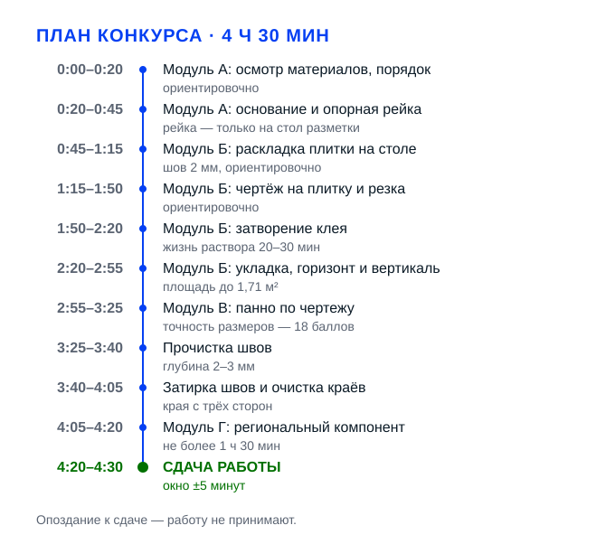
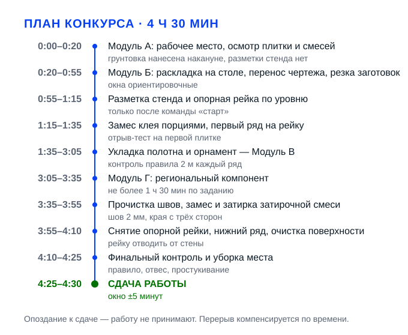
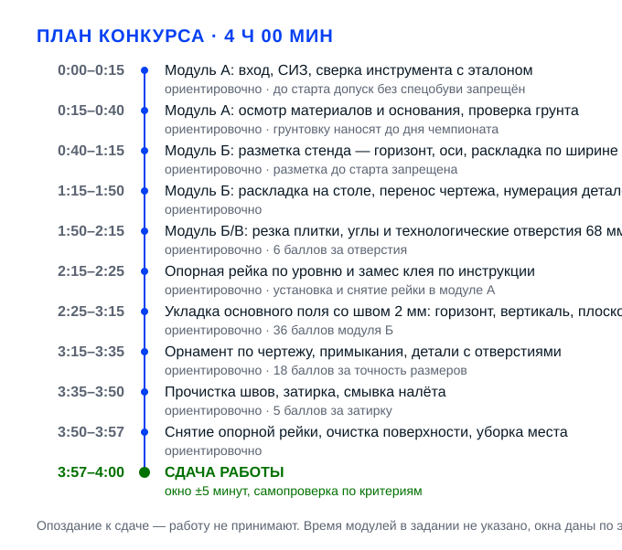

Облицовка плиткой (Р,О)
Задания ниже — официальные файлы «Абилимпикс» (источник: abilympics-russia.ru), разложенные по категориям. Решения написаны по тексту задания, регламенту и критериям оценки; в них указано, что именно проверяет эксперт.
Школьник
14–16 лет, базовый уровень заданияВыдержка из официального конкурсного задания: страницы, относящиеся к категории «Школьник» (стр. 10–11 источника).
Пошаговое решение
Задание по компетенции «Облицовка плиткой» в категории «Школьники» состоит из четырёх модулей и длится 4 часа 30 минут. В модуле А вы организуете рабочее место, осматриваете материалы и контролируете основание: грунтовку наносите сами в день до чемпионата под руководством эксперта, а разметку стенда заранее выполнять запрещено. В модуле Б раскладываете плитку на столе, переносите чертёж, режете её, затворяете клей по инструкции и укладываете облицовку площадью не более 1,71 квадратного метра со швом 2 мм, выдерживая горизонт, вертикаль и плоскость. Модуль В — художественно-мозаичная поверхность и затирка швов, модуль Г — региональный компонент, не больше 1 часа 30 минут. Баллы: А — 18, Б — 40, В — 24, Г — 18, всего 100, из них 67 — на измеримые критерии. Поэтому каждое действие ниже привязано к своему критерию: видно, за что боретесь, чем измерить и что приводит к потере баллов.

Задача 1. Организовать рабочее место и подготовить основаниеМодуль А · 18 баллов
Модуль А даёт 18 баллов из 100, и внутри него организация рабочего места стоит 1 балл, подготовка основания — 3 балла, а общий внешний вид работы — целых 9 баллов, ещё 5 баллов относится к затирке швов, которую вы сделаете позже. Из этого расклада видно главное: стенд и стол должны выглядеть как рабочее место мастера с первой минуты, потому что внешний вид эксперт оценивает и по ходу работы, и в конце. Основание под плитку готовится заранее, в день до чемпионата, грунтовку вы наносите сами под руководством эксперта, а разметку стенда до старта выполнять запрещено. Поэтому в модуле А вы наводите порядок, проверяете материалы, контролируете, как легла грунтовка, и ставите опорную рейку на стол разметки — по особому указанию задания крепить её разрешено только к столу, не к стенду.
Действие 1.1. Развернуть рабочее место и сверить инструмент
Шаг 1.1.1
Стол разметки ставим перпендикулярно стенду, отступив от него не меньше метра, чтобы можно было отойти на два шага и увидеть облицовку целиком. Плиткорез кладём слева от стола на низкую подставку, рядом ставим ведро с чистой водой, губку и ветошь для рук. Клей и затирку держим сухими в отдельном углу, подальше от воды, мешок не разрезаем до момента затворения. Шпатели, гребёнку, крестики 2 мм, рулетку, угольник и карандаш раскладываем справа на столе, каждый предмет на своё место, а проход между столом и стендом оставляем свободным шириной не меньше полуметра.
Организация рабочего места — это отдельный критерий модуля А на 1 балл, но ошибки в планировке бьют по самому дорогому пункту: общий внешний вид работы тянет 9 баллов из 18. Эксперт обходит площадку в первые же минуты, и захламлённый стол читается как неготовность к работе, даже при идеальной укладке. Кроме того, разложенный инструмент экономит минуты на каждом переходе, а в задании на 4 часа 30 минут это время уходит в укладку.
Пройдите по площадке и проверьте три вещи: между столом и стендом свободно проходит нога, инструмент не лежит на полу, водяная зона отделена от сухих смесей. Если приходится переступать через плиткорез или тянуться за шпателем через весь стол — планировка неудачная, переставьте сразу.
Самая частая ошибка — поставить стол вплотную к стенду: тогда нельзя ни отойти, ни положить подрезанную плитку, и вы всё время работаете в неудобной позе. Вторая — держать ведро с водой рядом с мешками клея: брызги попадают на смесь, часть клея схватывается комками, и раствор получается неоднородным.
Эксперт фиксирует планировку в первые пять–десять минут, до начала укладки, и потом смотрит, сохраняется ли порядок в процессе: стол, заваленный обрезками к середине модуля, снижает оценку за внешний вид.
Шаг 1.1.2
Достаём свой инструмент и раскладываем его так, чтобы он лежал в один слой и был виден целиком: рулетка, угольник, карандаш, шпатели, гребёнка, плиткорез, щипцы, брусок или шкурка, кисть, валик, крестики 2 мм или СВП, саморезы 3,5 на 25, шуруповёрт. Каждый предмет сравниваем с перечнем инструмента из инфраструктурного листа и отмечаем про себя, что есть, чего нет. Отдельно убираем всё, что задание запрещает проносить: готовые резаные детали, шаблоны, свои расходные материалы и электроинструмент, которого нет в перечне.
В конкурсном задании прямо сказано, что участник самостоятельно сравнивает свой инструмент с эталонным, а пронос готовых деталей, шаблонов и расходных материалов категорически запрещён. За готовую подрезку, принесённую с собой, работа может быть аннулирована целиком, и никакие баллы за аккуратность этого не компенсируют. Сверка нужна ещё и для того, чтобы не искать посреди модуля то, чего на площадке нет.
Список инструмента пройден сверху вниз, и по каждому пункту есть ответ: лежит у меня, выдаётся экспертом, отсутствует. Всё, что запрещено, отложено в сторону и показано эксперту до старта. Если чего-то не хватает, вы говорите об этом сразу, а не в момент первого реза.
Типичная ошибка — привезти с собой заранее нарезанные подрезки «чтобы сэкономить время»: это прямое нарушение, за которое снимают работу. Вторая — начать модуль, не проверив наличие крестиков нужного размера, и обнаружить, что шов держать нечем, когда клей уже затворён.
Эксперт осматривает стол участника до старта, сверяет его с инфраструктурным листом и имеет право изъять запрещённые предметы, зафиксировав это в протоколе; дальше он следит, не появились ли готовые детали уже в процессе работы.
Шаг 1.1.3
Надеваем средства защиты до первого реза: защитные очки с боковыми щитками, нитриловые или ПВХ-перчатки, при работе с затиркой и сухими смесями — респиратор типа «лепесток», обувь закрытая на нескользящей подошве. Кабель шуруповёрта и плиткореза с электроприводом ведём по стене, а не поперёк прохода, и приклеиваем малярным скотчем к полу в двух-трёх точках. Розетку проверяем на наличие УЗО, переноску не ставим в лужу и не соединяем последовательно две штуки.
Соблюдение правил охраны труда и техники безопасности — это 4 балла в модуле В, которые снимаются без всяких измерений, просто по наблюдению. Травма на площадке останавливает работу и почти всегда означает проигрыш независимо от качества облицовки: осколок плитки в глазу или порезанная рука заканчивают модуль досрочно.
Проверьте себя перед стартом: очки лежат на столе под рукой, перчатки на руках, кабель не пересекает проход, на полу нет воды у розетки. Пройдите взглядом по линии движения от стола к стенду — на этом пути не должно быть ничего, обо что можно зацепиться.
Частая ошибка — резать плитку без очков, считая, что ручной плиткорез безопасен: при разломе отлетает мелкая крошка, и она летит именно в лицо. Вторая — бросить кабель через проход и наступить на него с плиткой в руках.
Эксперт смотрит на очки и перчатки в момент резки и затирки, а не на входе, и нарушение фиксируется по факту работы без защиты; за ОТ и ТБ в модуле В предусмотрено 4 балла, и снимаются они целиком, а не по частям.
Действие 1.2. Осмотреть материалы и основание
Шаг 1.2.1
Распаковываем плитку и проверяем партию: номер партии и калибр на всех коробках должны совпадать, иначе оттенок и размер будут «плавать». Достаём из разных коробок по десять плиток и промеряем штангенциркулем или рулеткой длину и ширину: разброс больше одного миллиметра означает, что шов 2 мм выдержать ровным не получится. Каждую плитку осматриваем на лицевой стороне — сколы, задиры глазури, пятна, и откладываем дефектные в отдельную стопку, чтобы не пустить их в облицовку.
Сортировка и подготовка плиток — прямое требование к умениям участника, а шов в задании задан жёстко: 2 мм, и он проверяется измерениями. Плитка с разбросом калибра заставляет всё время поджимать или растягивать шов, и к пятому ряду вертикаль уходит на несколько миллиметров, а за вертикальность дают 12 баллов. Скол на лицевой стороне в готовой облицовке виден сразу и снимает баллы за внешний вид.
Плитки разложены по калибру в отдельные стопки лицевой стороной вверх, дефектные лежат отдельно и не смешиваются с рабочими. Проверьте угольником один-два угла: если плитка ромбом, при укладке шов будет клином — такие экземпляры тоже в отбраковку.
Ошибка — начать укладку прямо из коробки, не глядя: первая же сколотая плитка встанет на видное место, а переделывать придётся вместе с клеем. Вторая — перемешать плитку из разных партий и потом удивляться полосам другого оттенка на середине стенда.
Эксперт подходит к столу в начале модуля и смотрит, рассортирована ли плитка: отдельная стопка брака и ровные стопки по калибру видны сразу, а плитки разных партий, разбросанные по всему столу, читаются как пропущенная сортировка.
Шаг 1.2.2
Читаем упаковки смесей и выписываем себе пропорции: на мешке клея указано количество воды на вес мешка, время жизни раствора и открытое время, на затирке — количество воды и время до очистки швов, на грунтовке — расход и время высыхания. Цифры переносим маркером на малярный скотч и клеим на ведро, чтобы не вспоминать их с руками в клее. Сразу проверяем сроки годности: просроченная смесь комкуется и не набирает прочность, как её ни размешивай.
Задание требует готовить клеящий и затирочный состав согласно инструкции, и это отдельно оценивается. Вода, налитая на глаз, меняет подвижность раствора: перелив даёт слабый клей, который не держит плитку, недолив — густую массу, которая не тянется за гребёнкой и оставляет пустоты. Пустоты под плиткой — это и звук при простукивании, и баллы за плоскость.
На ведре висит скотч с тремя цифрами: литры воды, минуты жизни, минуты открытого времени. Срок годности на мешке прочитан вслух и записан. Если инструкция на иностранном языке — ищите таблицу с миллилитрами, она понятна без перевода.
Самая частая ошибка — мешать клей «до сметаны» по своему ощущению, не сверяясь с мешком: разные смеси требуют разного количества воды, и привычная консистенция оказывается неверной. Вторая — не заметить, что мешок вскрыт давно и смесь уже схватилась комками.
Эксперт обращает внимание, смотрит ли участник на упаковку: он может подойти и спросить, сколько воды нужно на мешок, и по ответу видно, читал ли участник инструкцию.
Шаг 1.2.3
Проверяем основание перед укладкой: прикладываем правило длиной два метра к стене в двух направлениях — по вертикали и по диагонали, и смотрим просвет. Просвет до трёх миллиметров под двухметровым правилом для плитки с клеем толщиной 6–8 миллиметров допустим, больше — надо выравнивать, иначе плитка пойдёт волной. Простукиваем поверхность рукояткой шпателя на глухой звук, проверяем, нет ли масляных пятен и рыхлых участков, и проходим стенд мягкой щёткой от пыли.
Подготовка основания под облицовку — 3 балла модуля А, но её результат определяет все 36 баллов за плоскость, горизонт и вертикальность. Неровное основание нельзя исправить толщиной клея: слой больше десяти миллиметров сползает и даёт пустоты, а плитка всё равно повторяет волну стены. Пыль и масло убивают сцепление, и тогда плитка держится только за счёт соседних.
Просвет под правилом не больше трёх миллиметров, глухого звука при простукивании нет, поверхность шероховатая и без пыли. Проведите по стене тёмной тряпкой: на ней не должно остаться серого следа, иначе грунтовка ляжет на пыль и отслоится.
Ошибка — начать клеить на непроверенную стену и обнаружить бугор под серединой стенда, когда половина ряда уже стоит. Вторая — пропустить масляное пятно: на нём клей не схватится вообще, и плитка отпадёт вместе с затиркой.
Эксперт может приложить своё правило к основанию до укладки и после неё: разница в показаниях показывает, вытянул ли участник плоскость или просто закрыл плиткой неровности, а за плоскость в модуле Б дают 12 баллов.
Действие 1.3. Загрунтовать и привести стенд в порядок
Шаг 1.3.1
Грунтовку наносим малярным валиком с коротким ворсом или широкой кистью-макловицей, движениями сверху вниз полосами шириной около полуметра, с перекрытием соседней полосы на десять сантиметров. Валик отжимаем о решётку ведра, чтобы не гнать потёки: задача — пропитать поверхность, а не залить её. Углы, примыкания и низ стенда проходим кистью, потому что валик туда не достаёт. Работаем в перчатках, при необходимости в респираторе, и не курим и не едим рядом с открытой банкой.
Грунтовка связывает пыль, снижает впитываемость основания и не даёт клею отдавать воду в стену раньше времени. Без неё клей схватывается неравномерно: на рыхлом основании он «сгорает» за пять минут вместо двадцати, и плитка встаёт на почти сухую гребёнку. Грунтовка входит в подготовку поверхности, за которую дают 3 балла, и эксперт смотрит на результат глазами: ровная матовая плёнка без пропусков.
Через два-четыре часа при температуре около двадцати градусов поверхность должна быть матовой, равномерной по цвету, без луж и потёков. Капля воды, поставленная на загрунтованное место, не впитывается мгновенно, а стоит на поверхности. Проведите ладонью: пыли нет, поверхность не липнет.
Главная ошибка — лить грунтовку как краску и оставлять потёки: в лужах образуется блестящая плёнка, клей на неё не ложится. Вторая — грунтовать только середину, забыв углы и низ, и именно там потом отходит плитка.
Эксперт осматривает загрунтованную поверхность до старта модуля Б и отмечает равномерность пропитки, потёки на полу и соседних стендах, а также следы грунтовки на гребёнке и шпателях, которые потом пойдут в работу с клеем.
Шаг 1.3.2
Проверяем, что поверхность готова принимать клей: подносим ладонь — она должна быть не холодной и не влажной, на ощупь сухая. Смотрим на свет под углом: незагрунтованные участки отличаются по цвету и впитывают влагу темнее. Если грунтовка лоснится или собирается в капли, значит нанесена слишком толсто — даём ещё час и проходим это место шкуркой зернистостью 80–120. Отдельно проверяем пол и соседние стенды на брызги и сразу вытираем их влажной тряпкой.
Клей наносится только на сухое и обеспыленное основание, иначе плёнка грунтовки отходит вместе с плиткой. Лоснящиеся участки — это не грунт, а его излишек, и сцепление там хуже, чем по негрунтованной стене. Брызги на полу — вопрос безопасности: на мокром полу участник поскальзывается с плиткой в руках.
Поверхность сухая, матовая, одного оттенка на всей площади, без блестящих пятен. Пол сухой, соседние стенды чистые, ведро и валик убраны на место. Проверьте низ стенда на уровне пяти сантиметров — там чаще всего остаётся непрогрунтованная полоса.
Ошибка — начать укладку по влажной грунтовке: клей не прилипает к мокрой плёнке и плитка «плывёт» под собственным весом. Вторая — оставить блестящие пятна и надеяться, что клей их «продавит»: не продавит, отойдёт вместе с плиткой.
Эксперт проверяет готовность поверхности перед началом модуля Б: тыльной стороной ладони на влажность, на просвет под острым углом и на блестящие пятна, которые заметны уже с двух шагов от стенда.
Шаг 1.3.3
Приводим стенд и стол в товарный вид: обрезки и упаковку складываем в мусорный мешок, пустые коробки складываем плоско и убираем под стол, стол разметки протираем влажной, затем сухой тряпкой. Карандашных линий на стенде до старта не наносим — разметка стенда заранее запрещена особым указанием задания. Инструмент выкладываем ещё раз, уже по ходу работы: гребёнка и шпатель справа, крестики в лотке, плиткорез заряжен и проверен на холостом резе.
Общий внешний вид работы — самый весомый критерий модуля А, 9 баллов из 18, и оценивают его не только в конце, но и по состоянию площадки в процессе. Чистый стол и убранные обрезки читаются как профессиональная привычка, а куча мусора рядом со стендом — как небрежность, которая потом переносится на швы и на затирку. Порядок к тому же ускоряет работу: не надо искать крестики в обрезках.
Стенд перед вами пустой и чистый, на полу нет крошки, стол протёрт, мусор в мешке, а не под ногами. Отойдите на два шага и посмотрите на площадку со стороны: если что-то выглядит лишним — уберите, это займёт полминуты.
Частая ошибка — оставить обрезки на столе «пока не закончу»: они мешают раскладке и цепляются за плитку при переносе. Вторая — нанести на стенд карандашные метки до старта, что прямо запрещено, и получить замечание до начала работы.
Эксперт оценивает внешний вид площадки в начале, в середине и в конце работы: 9 баллов распределены по этим точкам контроля, и мусор, появившийся к середине модуля, стоит ровно столько же, сколько стартовый беспорядок.
Действие 1.4. Поставить и снять опорную рейку на столе разметки
Шаг 1.4.1
Опорную рейку крепим к столу разметки, как требует особое указание задания: к стенду её крепить нельзя. Кладём алюминиевую рейку или ровный брусок на край стола, ставим лазерный построитель на штатив и включаем горизонтальную плоскость. Поднимаем рейку так, чтобы её верхняя кромка шла точно по лучу по всей длине стола, и прикручиваем саморезами 3,5 на 25 в двух точках, отступив от краёв по десять сантиметров, на низких оборотах шуруповёрта, чтобы не продавить рейку.
Рейка на столе работает упором: по ней вы выставляете первый ряд раскладки и переносите чертёж, поэтому её горизонт напрямую влияет на геометрию всей раскладки. Критерий модуля А прямо включает установку и снятие опорной рейки, и эксперт смотрит и на крепление, и на то, выдержан ли горизонт. Перекос рейки на два миллиметра на метр даёт на дальнем краю стола расхождение, которое потом перейдёт в шов.
Кладём на рейку пузырьковый уровень длиной не меньше метра: пузырёк стоит между рисками, а луч проходит по верхней кромке без зазора. Проверьте рукой — рейка не качается, саморезы утоплены, шляпки не выступают над плоскостью. Проверьте оба конца и середину, а не только центр.
Ошибка — крепить рейку на глаз, без уровня: перекос в один-два миллиметра не виден, но раскладка на столе получится клином. Вторая — вкрутить саморез близко к краю и расколоть рейку, после чего она теряет прямолинейность.
Эксперт подходит к столу в момент установки рейки и проверяет её своим уровнем: это одна из немногих операций модуля А, которую видно целиком, поэтому крепление лучше выполнять при нём, а не заранее и в одиночку.
Шаг 1.4.2
После раскладки и переноса чертежа рейку снимаем: выкручиваем саморезы шуруповёртом, снимаем рейку двумя руками, не отводя её в сторону, чтобы не поцарапать стол и не сбить разложенную плитку. Отверстия от саморезов заделываем затиркой или заклеиваем малярным скотчем, рейку очищаем от клея и пыли и убираем на место. Обрезки и мусор со стола снимаем сразу, а не после укладки.
Снятие рейки входит в тот же критерий, что и установка, и оценивается по состоянию стола после операции: отверстия должны быть заделаны, а не зиять дырками, поверхность — чистой. Оставленная на столе рейка мешает раскладке и переносу чертежа, а незаделанные отверстия эксперт отметит как небрежность в общем внешнем виде работы.
Стол чистый и ровный, отверстия заделаны, рейка лежит на своём месте, разложенная плитка не сдвинута. Проведите ладонью по линии, где стояла рейка: ступеньки и задиры недопустимы, иначе плитка при раскладке будет качаться.
Ошибка — сдёрнуть рейку рывком и сбить уже разложенный ряд: раскладку придётся делать заново. Вторая — оставить рейку прикрученной до сдачи работы: это нарушение последовательности, за которое снимают балл.
Эксперт проверяет стол после снятия рейки: чистоту, заделанные отверстия и отсутствие царапин на рабочей поверхности, а саму рейку ищет на месте хранения, а не под ногами участника или на полу у стенда.
Задача 2. Выполнить облицовку по чертежу на вертикальной поверхностиМодуль Б · 40 баллов
Модуль Б — самый дорогой в задании: 40 баллов из 100, и внутри него четыре критерия делят эти баллы почти поровну — общий вид резки 4 балла, горизонт уложенных рядов 12, вертикальность 12, плоскость облицованной поверхности 12. Из этого расклада следует простая тактика: лучше сделать меньше резов, но идеально ровных, чем нарезать всё быстро и потом бороться с волной и завалом. Работа идёт в строгой последовательности: сначала раскладка на столе с крестиками 2 мм, потом разметка основания, потом резка по чертежу, затворение клея и укладка снизу вверх с постоянным контролем прибором, а не на глаз. Площадь облицовки по заданию не превышает 1,71 квадратного метра, и каждый ряд, уложенный с отклонением, тянет за собой все следующие.
Действие 2.1. Разложить плитку на столе по чертежу
Шаг 2.1.1
Кладём чертёж перед собой, находим масштаб и все размеры: габариты панно, положение осей симметрии, ширину швов и направление рисунка. Пересчитываем количество целых плиток и подрезок, записываем на листке столбиком, сколько деталей каждого размера нужно, и сразу сверяем сумму с площадью облицовки не более 1,71 квадратного метра. Отмечаем на чертеже номер партии плитки, чтобы рисунок не поехал из-за оттенка.
Чертёж — единственный источник геометрии, и точность размеров панно в модуле В стоит 18 баллов, а в модуле Б горизонт, вертикаль и плоскость вместе дают 36. Если начать резать, не посчитав детали, к середине работы выясняется, что плитки не хватает или она ушла на брак, а замена партии даст другой оттенок. Список деталей на бумаге позволяет кроить экономно и не запутаться в размерах.
Список деталей пересчитан, суммарная площадь совпадает с чертежом, на чертеже видны все размеры. Проверьте себя: если сложить ширину целых плиток, швов и подрезок, должен получиться габарит панно, и расхождение больше двух миллиметров означает ошибку в чтении чертежа.
Ошибка — читать чертёж «по верху», не вникая в размеры: тогда подрезки получаются произвольной ширины, а панно не совпадает с заданием. Вторая — не учитывать шов 2 мм в расчёте: восемь плиток по 300 мм и восемь швов по 2 мм дают уже 2416 мм вместо 2400.
Эксперт смотрит, лежит ли чертёж на столе перед участником и сверяется ли он с размерами: работа без чертежа сразу выдаёт импровизацию, а листок с расчётом деталей он считает признаком осознанной работы.
Шаг 2.1.2
Раскладываем плитку на столе в один слой, как она встанет на стенде: начинаем от оси симметрии или от центра, ставим между плитками крестики 2 мм или клинья СВП, чтобы шов был ровным и одинаковым во всех направлениях. Подрезанные детали показываем условно, куском плитки нужной ширины, чтобы видеть общий рисунок. Раскладку делаем насухо, без клея, и не сдвигаем её до конца проверки.
Раскладка на столе — это репетиция: все ошибки видны здесь и стоят ноль баллов, а на стенде та же ошибка стоит клея, времени и сцепления. Шов 2 мм задан в конкурсном задании и проверяется измерением, поэтому крестики ставятся сразу, а не «потом подравняю». Кроме того, раскладка показывает, как ложится рисунок панно и где приходится стык подрезок.
Габарит раскладки совпадает с чертежом, шов одинаковый по всей площади, рисунок читается целиком. Промерьте рулеткой два-три шва подряд в разных местах: расхождение больше половины миллиметра видно на готовой облицовке как «пляшущая» линия.
Частая ошибка — раскладывать плитку вплотную, без крестиков: на столе всё сходится, а на стенде выясняется, что общий габарит вырос на сантиметры. Вторая — начать раскладку от угла и получить узкую подрезку в центре панно, где она бросается в глаза.
Эксперт подходит к столу и смотрит на раскладку сверху: ровные линии швов и одинаковые крестики видны сразу, а раскладку без крестиков он отличает по разной ширине швов уже на столе.
Шаг 2.1.3
Смотрим на подрезки по краям: если крайняя деталь получается уже трети плитки, раскладку сдвигаем — например, переносим ось на половину плитки, чтобы подрезки стали симметричными и шире. Проверяем, что угловые детали не получаются меньше 50 мм: такую полоску трудно нарезать ровно и она часто ломается. Выбранную схему фиксируем: обводим контур на чертеже маркером, фотографируем раскладку на телефон и подписываем размеры подрезок.
Узкая подрезка — главный источник брака на школьной категории: полоску шириной 20–30 мм ведёт при резке, она скалывается и встаёт клином, а за общий вид резки дают 4 балла. Симметричная раскладка к тому же читается как профессиональная и влияет на оценку внешнего вида работы. Зафиксированная схема спасает, если раскладку случайно сдвинут локтем.
Все подрезки шире 50 мм, крайние детали симметричны относительно оси, схема записана и сфотографирована. Проверьте: если мысленно убрать центральную плитку, рисунок должен остаться симметричным, а ширина подрезок по краям — одинаковой с обеих сторон.
Ошибка — принять первую же раскладку «и так сойдёт», а потом мучиться с полоской в 15 мм у примыкания. Вторая — не запомнить схему и после первой подрезки потерять, какая деталь куда шла. Третья — сдвигать раскладку после того, как часть деталей уже нарезана по старой схеме.
Эксперт проверяет симметрию и ширину подрезок: это измеримый критерий, и он виден на готовой работе без всяких пояснений, потому что крайние детали слева и справа он сравнивает между собой.
Действие 2.2. Разметить основание
Шаг 2.2.1
Ставим лазерный построитель на штатив перед стендом и включаем вертикальную и горизонтальную плоскости: вертикальный луч должен пройти по оси симметрии панно, горизонтальный — по линии нижнего ряда. Если построителя нет, работаем пузырьковым уровнем длиной 1–1,2 метра и отвесом на шнуре. Отмечаем карандашом линию горизонта на высоте нижнего края первого ряда и вертикальную ось, проверяя каждую метку дважды, прежде чем ставить следующую.
По особому указанию задания опорную рейку разрешено крепить только к столу разметки, поэтому нижний ряд на стенде ведётся не по рейке, а по лазерному лучу или отбитой линии. Горизонт уложенных рядов стоит 12 баллов из 40, и первый ряд задаёт его для всех остальных: отклонение на два миллиметра внизу превращается в заметный завал наверху через семь-восемь рядов.
Луч проходит точно по карандашной линии по всей длине стенда, ось симметрии совпадает с чертежом. Проверьте линию на двух концах и в середине: если карандаш ушёл от луча, значит линия нанесена под наклоном и её надо перебить.
Ошибка — отбивать горизонт «от пола» или от края стенда, считая, что стенд ровный: наклон пола в один градус даёт перепад почти два сантиметра на метр. Вторая — нанести разметку до проверки основания и потом обнаружить, что линия попала на бугор.
Эксперт наблюдает, чем участник выставляет горизонт: лазерный уровень или отбитый шнур с уровнем он считает нормой, а разметку «на глаз» отмечает как нарушение технологии и отдельно фиксирует это в своих пометках.
Шаг 2.2.2
Проверяем прямоугольность: откладываем от угла 3 и 4 единицы по двум сторонам и меряем расстояние между точками — оно должно быть 5 единиц, то есть угол 90 градусов, так работает правило египетского треугольника в масштабе 60, 80 и 100 сантиметров. Дополнительно сравниваем диагонали отбитого прямоугольника: расхождение больше трёх миллиметров означает перекос, и разметку надо повторить. Все метки наносим мягким карандашом тонкой линией, чтобы не сбивать плоскость.
Перекос разметки не виден глазом на пустой стене, но он сразу читается на готовой облицовке: углы перестают быть прямыми, подрезки по краям получаются клином, а вертикальные швы уходят веером. За вертикальность дают 12 баллов, и проверяют её именно по швам, а не по краю плитки. Проверка диагоналей занимает минуту и снимает целую группу ошибок.
Диагонали равны или расходятся не больше чем на три миллиметра, катеты 3 и 4 дают гипотенузу 5. Проверьте рулеткой по полу и по стене: расхождение в разных замерах означает, что рулетку держали косо, поэтому каждый размер меряем дважды.
Ошибка — разметить прямоугольник на глаз, «по плитке»: глазомер на площади 1,71 квадратного метра даёт перекос в сантиметр. Вторая — проверять только одну диагональ: неравные диагонали при равных сторонах дают ромб, и это видно сразу.
Эксперт может сам промерить диагонали разметки и готовой облицовки: расхождение до и после показывает, на каком этапе ушла геометрия, и даёт участнику возможность объяснить свои замеры.
Шаг 2.2.3
Закрепляем разметку так, чтобы она дожила до конца укладки: карандашные линии проходим малярным скотчем в местах, где будет проходить гребёнка, и подписываем на скотче номер ряда. Отдельно отмечаем на полу или на стене место под ведро и под стопку нарезанной плитки, чтобы не ставить их на разметку. Разметку стенда выполняем только после старта модуля Б: до старта это запрещено особым указанием конкурсного задания.
Разметка, залитая клеем, восстанавливается уже неточно: слой клея толщиной 6–8 миллиметров закрывает линии, и дальше приходится работать по памяти. Защищённая разметка позволяет проверять каждый ряд на месте, а это и есть тот контроль, за который дают 12 баллов по горизонту и 12 по вертикали. Нарушение запрета на предварительную разметку стенда фиксируется отдельно.
Линии видны в любом месте, скотч не мешает укладке, метки не стёрты. Проверьте: если провести пальцем по линии, карандаш не стирается, а скотч держится плотно и не задирается гребёнкой. Пройдите по всем линиям ещё раз перед затворением клея.
Ошибка — размечать карандашом прямо по будущей зоне клея и потерять линии на втором ряду. Вторая — нанести разметку стенда до старта, что прямо запрещено заданием и грозит замечанием до начала работы.
Эксперт осматривает стенд до старта именно на предмет предварительной разметки, а после старта следит, сохраняется ли контрольная линия под слоем клея и не работает ли участник по памяти.
Действие 2.3. Нарезать плитку по чертежу
Шаг 2.3.1
Переносим размеры с чертежа на лицевую сторону плитки: отмеряем рулеткой или угольником, ставим две метки — на противоположных кромках, и соединяем их линией по линейке. Лицевую сторону предварительно оклеиваем полосой малярного скотча и рисуем по скотчу, чтобы карандаш не остался на глазури. Помним про шов: деталь, примыкающая к другой, должна быть короче на 2 мм с каждой стороны стыка, иначе ряд не встанет по разметке.
Перенос чертежа на плитку — отдельный пункт задания, и от точности переноса зависит общий вид резки, который стоит 4 балла. Карандаш по глазури стирается и оставляет серый след, который потом видно на светлой плитке, поэтому скотч экономит и нервы, и баллы за чистоту. Учёт шва 2 мм — то, из-за чего чаще всего подрезанный ряд не сходится с раскладкой.
На скотче видна замкнутая линия, обе метки совпадают с размерами чертежа, размер детали проверен рулеткой до резки. Приложите деталь к месту укладки насухо: она должна встать с зазором 2 мм, а не в упор.
Ошибка — отмерять по тыльной стороне и потом переносить линию на лицо: глазурь скалывается именно по линии разметки. Вторая — забыть про шов и получить деталь ровно в размер проёма, которая встаёт «в распор» и выдавливает соседние плитки.
Эксперт смотрит на подготовку к резке: наличие разметки на каждой детали и чистоту лицевой стороны до и после. Подрезанная деталь без разметки сразу вызывает вопрос, откуда взят размер, а следы карандаша на глазури он относит к дефектам внешнего вида.
Шаг 2.3.2
Прямой рез делаем ручным плиткорезом: кладём плитку на платформу лицевой стороной вверх, совмещаем линию реза с упором и проводим роликом один плавный проход с одинаковым нажимом от начала до конца, не возвращаясь назад. Потом ставим на плитку подпятник-разлом и плавно сжимаем рукоятку, пока плитка не разойдётся по риске. Сильно давить на ролик не нужно: он должен процарапать глазурь, а не раскрошить её.
Один проход с равномерным нажимом — главное условие ровной кромки, а общий вид резки оценивается в 4 балла. Повторный проход роликом по той же линии разрушает глазурь по краям, и получается рваная кромка со сколами. Плавный разлом, а не удар, сохраняет и кромку, и ваши пальцы.
Кромка ровная, без сколов глазури и «бороды», линия реза прямая по всей длине. Проведите пальцем в перчатке вдоль кромки: заусенцев быть не должно, а приложенный угольник показывает отклонение не больше половины миллиметра.
Ошибка — проводить роликом два-три раза «чтобы лучше прорезалось»: сколы по кромке гарантированы. Вторая — ломать плитку на весу или ударом о край стола, от чего откалывается угол и деталь уходит в брак.
Эксперт смотрит на кромку каждой подрезки: ровный рез без сколов — это 4 балла, а рваная кромка снимает их почти полностью. Осматривает он кромку на просвет и под углом к свету, где сколы видны лучше всего.
Шаг 2.3.3
Узкие полоски и фигурные вырезы делаем щипцами для плитки: захватываем полоску по линии разметки и откусываем небольшими шагами по 3–5 мм, а не одним куском. Если по инфраструктурному листу разрешена болгарка с алмазным диском, работаем ею только в очках и респираторе, на малых оборотах, с подачей воды или без неё — по инструкции к инструменту. Кромку после реза обрабатываем бруском или шкуркой зернистостью 60–80 под небольшим углом.
Резка под нужный размер и обработка кромок — прямые требования к умениям участника, а фигурные вырезы в панно дают заметную часть баллов за точность размеров. Необработанная кромка видна на шве как светлая полоса и цепляет затирку, из-за чего шов получается неровным. Электроинструмент, которого нет в инфраструктурном листе, проносить нельзя, и это проверяется.
Полоска нужной ширины, кромка матовая и ровная, сколов глазури нет. Приложите деталь на место: она входит в свой проём без нажима, с зазором под шов, и не качается. Проверьте кромку на просвет — сколы глазури видны как светлые точки.
Ошибка — откусывать полоску одним захватом, от чего она раскалывается по диагонали. Вторая — работать болгаркой без очков и без защиты слуха, что сразу фиксируется как нарушение охраны труда и стоит 4 балла из модуля В.
Эксперт смотрит, чем и как выполнен фигурный рез, и отдельно проверяет, тот ли инструмент используется, что заявлен в инфраструктурном листе, и обработана ли кромка после реза бруском.
Шаг 2.3.4
Раскладываем все нарезанные детали на столе в порядке укладки и сверяем с чертежом: размеры, количество, ориентация рисунка. Каждую деталь прикладываем насухо к своему месту на стенде и проверяем зазор под шов 2 мм, а также то, что кромка не выходит за линию разметки. Детали с найденным сколом откладываем и перерезаем сразу, пока клей не затворён, а брак не смешиваем с рабочими деталями.
Сухая подгонка ловит ошибку до того, как она станет необратимой: снять приклеенную плитку без повреждения соседних почти невозможно, а переделка ряда съедает время из общего лимита 4 часа 30 минут. Проверка на месте показывает, совпадает ли рез с разметкой, и это прямо влияет на 12 баллов за плоскость и 12 за вертикальность.
Все детали разложены и подписаны, каждая встаёт на своё место с зазором, сколов нет. Проверьте угловые детали отдельно: именно там накапливается погрешность от двух направлений сразу, и щель появляется раньше всего.
Ошибка — начать клеить, не проверив подрезки на месте: одна неверная деталь останавливает весь ряд. Вторая — перерезать деталь с уже нанесённым клеем на руках, из-за чего пачкается лицевая сторона соседних плиток.
Эксперт осматривает разложенные детали перед укладкой: порядок на столе и наличие подписей показывают, продумана ли последовательность, а детали, сваленные в общую кучу, он отмечает как потерю контроля над работой.
Действие 2.4. Приготовить и нанести клеевой раствор
Шаг 2.4.1
Наливаем в чистое ведро воду строго по инструкции на мешке, затем засыпаем сухую смесь порциями и перемешиваем миксером или дрелью с насадкой на низких оборотах 2–3 минуты, пока не исчезнут комки. Даём раствору отстояться 5 минут, чтобы заработали полимерные добавки, и перемешиваем ещё раз 30 секунд. Готовим небольшими порциями — столько, сколько успеете выработать за 20–30 минут жизни раствора.
Задание требует готовить клеящий раствор согласно инструкции, и от этого зависит сцепление плитки с основанием и, косвенно, вся плоскость облицовки. Слишком густой раствор не тянется за гребёнкой и оставляет пустоты, слишком жидкий сползает по стене вместе с плиткой. Отлёжка в 5 минут — не формальность: без неё смесь «плывёт» и не держит плитку на вертикали.
Раствор держится на гребёнке бороздами и не стекает с неё, комков нет, консистенция как у густой сметаны. Проверьте так: проведите гребёнкой по небольшому участку — борозды должны сохранять форму, а не заплывать.
Ошибка — сыпать смесь в воду «на глаз» и добивать консистенцию добавлением то сухой смеси, то воды: такой раствор теряет свойства. Вторая — замешать полное ведро на всю стену и к концу работы клеить уже мёртвым раствором.
Эксперт смотрит на процесс затворения: наличие миксера, отлёжку, отсутствие комков в растворе и то, не добавляет ли участник воду в уже схватившийся клей, что недопустимо и хорошо заметно по консистенции.
Шаг 2.4.2
Наносим клей на стену зубчатым шпателем-гребёнкой с зубом 8 миллиметров: держим шпатель под углом 45–60 градусов к поверхности и ведём с усилием, чтобы борозды получались одинаковой высоты. Клей наносим на площадь не больше той, которую успеете закрыть плиткой за 10–15 минут, одной плитки-две вперёд по ходу, а не на весь стенд сразу. Дополнительно промазываем тыльную сторону плитки тонким слоем «в прижим» и снимаем излишки у краёв.
Борозды гребёнки нужны, чтобы выдавить воздух и обеспечить контакт клея с плиткой не меньше чем на 80 процентов площади. Слой, нанесённый заранее на большую площадь, покрывается плёнкой, и плитка приклеивается к плёнке, а не к клею — отсюда глухой звук при простукивании и потеря баллов за плоскость. Промазка тыльной стороны особенно важна на плитке с рельефом.
Борозды одинаковые, без разрывов и пропусков, клей не подсох до укладки. Проверьте пальцем в перчатке: клей должен быть ещё липким, а не покрытым корочкой. Площадь нанесения — не больше двух-трёх плиток по фронту.
Ошибка — нанести клей на весь стенд и потом клеить по подсохшей плёнке: получаются пустоты и отслоения. Вторая — работать гребёнкой с маленьким зубом при глубоких неровностях основания, из-за чего клей не заполняет впадины.
Эксперт проверяет борозды и площадь нанесения: подсохший клей виден по матовой корочке, и это сразу снимает баллы за плоскость, а разрывы в бороздах он замечает на просвет у стены, когда плитка уже снята.
Действие 2.5. Уложить плитку с контролем горизонта, вертикали и плоскости
Шаг 2.5.1
Первый ряд укладываем по лазерному лучу или отбитой линии: прикладываем плитку нижней кромкой к линии, прижимаем ладонями от центра к краям и легко постукиваем резиновым молотком или рукояткой шпателя. Ставим крестики 2 мм или клинья СВП между плитками сразу, до схватывания клея. Проверяем первый ряд правилом и уровнем дважды: сразу после укладки и через 10 минут, пока клей ещё позволяет подправить положение.
Первый ряд — фундамент всей облицовки: по нему выставляются все последующие, и именно он отвечает за 12 баллов горизонта. Клей сохраняет подвижность 10–15 минут, и в это окно плитку ещё можно поднять и посадить заново; позже любая правка заканчивается сколом или отрывом соседней плитки. Крестики, поставленные сразу, фиксируют шов 2 мм без последующей подгонки.
Ряд стоит по линии без зазора, швы одинаковые, при нажатии плитка не качается и не «дышит». Приложите правило длиной два метра: просвет между правилом и плиткой не больше одного миллиметра, а пузырьковый уровень показывает горизонт в нуле.
Ошибка — выложить первый ряд «на глаз», а потом выравнивать второй по первому: погрешность удваивается с каждым рядом. Вторая — поставить крестики после того, как клей схватился, и раздвигать швы силой, ломая кромки.
Эксперт проверяет первый ряд отдельно и в самом начале: если он завален, дальше участник уже не вытянет горизонт на 12 баллов, и это видно по всем последующим рядам ещё до сдачи работы.
Шаг 2.5.2
Дальше ведём укладку рядами снизу вверх, слева направо или от оси симметрии к краям — так, как была сделана раскладка. Каждую плитку прижимаем равномерно по всей площади, следя, чтобы клей выступил по краям: это признак, что контакт есть. Выступивший клей сразу снимаем шпателем и протираем шов, не давая ему схватиться в межплиточном пространстве. Крестики ставим по вертикали и по горизонтали, не пропуская ни одного стыка.
Укладка рядами от оси сохраняет симметрию панно и не даёт накопить погрешность в одну сторону. Клей, выступивший по краям, показывает заполнение, а клей, оставленный в шве, отнимает 2 мм: затирка на такой шов не встанет, и его придётся расшивать, теряя время. Свежий клей снимается легко, схватившийся — только ножом и со сколами.
Клей выступает по периметру каждой плитки, шов чистый и одинаковый, ряды идут ровно по разметке. Проверьте рукой: соседние плитки в одной плоскости, ступеньки между ними нет, а шов остаётся чистым до конца укладки.
Ошибка — прижимать плитку только по центру: края остаются на весу, и под ними пустота. Вторая — оставлять выступивший клей в швах до конца укладки, после чего шов уже не прочистить без повреждения кромок.
Эксперт смотрит на заполнение шва и на чистоту лицевой стороны: следы клея на глазури к моменту сдачи считаются грубым дефектом, а затирка по такому шву ложится пятнами и не держится.
Шаг 2.5.3
Контролируем три параметра приборами, а не глазом: горизонт — пузырьковым уровнем длиной 1–1,2 метра по каждому второму ряду, вертикальность — уровнем или отвесом по вертикальным швам, плоскость — правилом длиной два метра в двух направлениях и по диагонали. Замеры делаем на свежем клее, когда плитку ещё можно подправить, и записываем отклонения, чтобы видеть, в какую сторону «уходит» ряд.
Горизонт, вертикальность и плоскость — это 36 баллов из 40 в модуле Б, и все три проверяются измеримыми инструментами. Глазомер на площади 1,71 квадратного метра не работает: отклонение в два миллиметра на ряд складывается к верхнему краю в полтора сантиметра. Контроль на свежем клее стоит секунд, а переделка схватившегося ряда — десятков минут.
Просвет под двухметровым правилом не больше одного-двух миллиметров, пузырёк уровня в нуле, отвес совпадает со швом по всей высоте. Проверьте диагональ от угла до угла: расхождение больше трёх миллиметров означает перекос всей плоскости.
Ошибка — проверять только горизонт и забывать про плоскость: ровные ряды могут стоять «ступеньками» относительно друг друга. Вторая — замечать отклонение, когда клей уже схватился, и пытаться исправить его силой.
Эксперт делает собственные замеры после сдачи: он прикладывает правило и уровень в тех же точках, что и участник, и сравнивает результаты, а расхождение трактует как отсутствие контроля над работой.
Шаг 2.5.4
Последний ряд подрезаем по месту: замеряем фактическое расстояние от верхней кромки предпоследнего ряда до потолка или края панно в трёх точках — слева, в центре и справа, и режем по наибольшему размеру минус 2 мм на шов. Вставляем детали, прижимаем, проверяем линию верха правилом. Крестики вынимаем после схватывания клея, через 20–30 минут, аккуратно, чтобы не выдернуть плитку вместе с ними.
Верхний ряд всегда самый заметный, и подрезка «по одному замеру» даёт клин, который видно с трёх метров. Три замера ловят непрямоугольность стенда и спасают 12 баллов за горизонт. Крестики, вынутые слишком рано, оставляют подвижные плитки, а вынутые слишком поздно выкалывают кромку.
Верхняя линия ровная по всей длине, ширина подрезки одинаковая, шов 2 мм сохранён. Проверьте правилом линию верха и рулеткой — ширину верхних деталей в трёх точках: расхождение больше миллиметра видно на глаз.
Ошибка — отрезать верхние детали по первому замеру и получить с одной стороны щель, а с другой — упор в край. Вторая — вынуть крестики сразу после укладки ряда и позволить плитке сползти вниз, особенно на первом ряду.
Эксперт осматривает верхнюю линию и углы панно в первую очередь: именно там видны накопленные отклонения по горизонтали и вертикали, и они читаются без всяких инструментов, просто на глаз.
Задача 3. Собрать панно, прочистить и затереть швыМодуль В · 24 балла, затирка · 5 баллов
Модуль В стоит 24 балла, и внутри него 18 баллов дают за точность размеров выполненного панно и габаритов облицовки, 2 балла за то, что проект выполнен полностью, и 4 балла за соблюдение правил охраны труда и техники безопасности. Отдельные 5 баллов записаны в модуле А за затирку швов, поэтому затирка — это не уборка в конце, а полноценная оценочная операция. Порядок работ такой: сначала вы собираете художественную часть по чертежу и выдерживаете геометрию, затем прочищаете швы от клея и только потом затворяете затирку, потому что набитая в шов клеевая плёнка не даёт составу схватиться. Всё это время вы работаете в очках и перчатках: четыре балла за безопасность снимаются по факту, даже если облицовка идеальна.
Действие 3.1. Собрать художественно-мозаичную поверхность
Шаг 3.1.1
Разбираем детали панно по номерам: на чертеже у каждой детали есть позиция и размер, и раскладываем их на столе в том порядке, в котором они встанут на стенде. Каждую деталь подписываем карандашом по тыльной стороне — краской, мелом или малярным скотчем с номером, чтобы не путать при переносе. Отдельно ставим лоток для мелких элементов: перепутанные детали на глаз отличаются плохо, а рисунок от одной перестановки рушится.
Художественно-мозаичная часть — это 18 баллов за точность размеров, и вся она держится на том, что деталь стоит на своём месте. У школьников панно собирается из нарезанных по чертежу элементов, и любая перестановка меняет габарит: сдвиг на 4 мм в одном месте выходит за допуск по всему контуру. Нумерация на тыльной стороне экономит время и снимает половину ошибок сборки.
Все позиции чертежа разложены, каждая деталь подписана, лишних и недостающих нет. Проверьте так: пройдите по чертежу сверху вниз и отметьте каждую позицию галочкой — непомеченных позиций остаться не должно.
Ошибка — собирать панно «по картинке», не сверяясь с номерами: на глаз детали одного размера выглядят одинаково, а рисунок съезжает. Вторая — держать мелкие детали в общей куче с крупными, отчего они скалываются и теряются.
Эксперт подходит к столу перед сборкой панно и смотрит, разложены ли детали по позициям: подписанные детали в лотках он считает признаком продуманной работы, а общую кучу — риском ошибки.
Шаг 3.1.2
Укладываем панно от осей: сначала выставляем центральные элементы по лучам или по отбитым линиям, затем ведём симметрично в обе стороны, сохраняя шов 2 мм и ставя крестики в каждом стыке. Клей наносим гребёнкой с зубом 6–8 мм небольшими участками и работаем по одной-две детали, чтобы раствор не успевал покрыться плёнкой. Фигурные и мелкие элементы ставим последними, когда основные плоскости уже держат линию.
Укладка от осей не даёт накопить погрешность в одну сторону: если начать от края, к центру придёт либо щель, либо нахлёст, и симметрия панно разрушится. Шов 2 мм и ровные линии — это и есть содержание 18 баллов за точность размеров. Мелкие детали ставятся последними потому, что их легко сбить при установке соседних крупных элементов.
Центральные элементы стоят по лучам, швы одинаковые по всей площади, рисунок читается симметрично. Проверьте диагонали панно рулеткой: расхождение больше трёх миллиметров означает, что одна из осей ушла.
Ошибка — начинать панно от края и подгонять рисунок к центру: симметрия теряется, а подрезки становятся разной ширины. Вторая — наносить клей на большую площадь под мозаику и клеить по подсохшей плёнке, отчего мелкие детали отходят.
Эксперт смотрит на оси и на симметрию рисунка, а не на отдельные детали: именно симметрия показывает, понял ли участник схему панно. Отдельно он смотрит, как выложены оси: по ним читается вся симметрия панно.
Шаг 3.1.3
Проверяем габариты готового панно и всей облицовки: промеряем ширину и высоту рулеткой в трёх точках по каждой стороне, сравниваем с чертежом и считаем отклонение. Тут же проверяем прямоугольность по диагоналям и то, что контур панно совпадает с проектным положением на стенде. Все замеры записываем на листке, чтобы видеть, где отклонение уже вышло за допуск, а где ещё можно поправить, пока клей не встал окончательно.
Точность размеров выполненного панно и габаритов облицовки — это 18 баллов из 24 в модуле В, то есть самый весомый измеримый критерий всего задания после плоскости. Эксперт измеряет те же параметры своим инструментом, и расхождение в 5 мм уже считается дефектом. Замеры по ходу работы позволяют исправить положение, пока клей подвижен.
Ширина и высота совпадают с чертежом с точностью до 2–3 мм, диагонали равны, контур стоит на своём месте. Проверьте каждую сторону отдельно: габарит может сойтись в сумме и разойтись по одной стороне за счёт клиновидной подрезки.
Ошибка — измерять только габарит целиком и не смотреть диагонали: прямоугольник с равными сторонами легко превращается в ромб. Вторая — замечать отклонение слишком поздно, когда клей уже схватился и деталь снимается только со сколом.
Эксперт обмеряет панно после сдачи: рулеткой по сторонам и по диагоналям, и результат сразу переводит в баллы измеримого критерия. Особое внимание он уделяет углам панно, где погрешность накапливается с двух сторон.
Действие 3.2. Прочистить швы и подготовить поверхность
Шаг 3.2.1
Прочищаем швы на поверхности: проходим каждый шов узким шпателем, ножом или специальным скребком на глубину не меньше 2–3 мм, вынимая остатки клея и выступивший раствор. Движение ведём вдоль шва, а не поперёк, чтобы не скалывать кромки глазури. Засохший клей размягчаем влажной губкой за 10–15 минут и только потом снимаем — сухой клей тянет глазурь за собой.
Затирка держится в шве только на чистом основании: клеевая плёнка не даёт составу схватиться, и через месяц такой шов выкрашивается. За затирку швов в модуле А записано 5 баллов, и глубина шва проверяется визуально и инструментом. Сколотая кромка после неаккуратной прочистки сразу снижает оценку за внешний вид, а он в модуле А стоит 9 баллов.
Шов чистый по всей глубине, без клеевых наплывов, кромки целые. Проведите по шву ногтем или деревянной палочкой: она должна идти свободно, не задевая застывших комков. Глубина шва — не меньше 2 мм на всём протяжении.
Ошибка — чистить швы сухим ножом сразу после схватывания клея: глазурь скалывается полосами по кромке. Вторая — прочистить только видимую часть и оставить клей в глубине, из-за чего затирка потом выкрашивается.
Эксперт осматривает швы на просвет и проводит по ним инструментом: наплывы клея видны как светлые полосы и сразу снимают баллы за затирку. Отмечает он и то, прочищен ли шов на всю глубину или только по верху.
Шаг 3.2.2
Убираем с лицевой стороны остатки клея и пыль: проходим влажной, хорошо отжатой губкой, затем сухой ветошью, а стойкие капли снимаем пластиковым скребком, смоченным водой. Пыль из швов выдуваем или сметаем мягкой кистью. Поверхность перед затиркой должна быть сухой: влага в шве разбавляет состав и меняет его цвет. Тряпку меняем на чистую каждый раз, чтобы не размазывать грязь обратно по глазури.
Затирка наносится на сухую и чистую поверхность, иначе она размазывается плёнкой по глазури, а в шов попадает разбавленный состав. Следы клея, оставшиеся на лице, после затирки уже не отмываются и читаются как грязь в общем внешнем виде работы. Пыль в шве снижает сцепление и даёт неровный цвет шва.
Лицевая сторона чистая и матовая, швы сухие, пыли нет. Проведите по плите белой салфеткой: на ней не должно остаться серого следа, а в швах не должно быть видно крупинок. Отдельно проверьте углы облицовки: там пыли остаётся больше всего.
Ошибка — тереть свежий клей мокрой губкой и размазывать его по глазури: получается мутная плёнка, которую потом видно на светлой плитке. Вторая — начинать затирку по влажным швам, отчего состав светлеет пятнами.
Эксперт проверяет поверхность перед затиркой на ощупь и на просвет: плёнка клея на глазури заметна под углом к свету и считается дефектом. Если плёнка осталась, он фиксирует это как незаконченную подготовку к затирке.
Действие 3.3. Приготовить затирку и затереть швы
Шаг 3.3.1
Затворяем затирочную смесь строго по инструкции на упаковке: отмеряем воду мерным стаканом, засыпаем смесь в воду и перемешиваем миксером на низких оборотах 2–3 минуты до однородной пастообразной массы. Даём отстояться 5 минут и перемешиваем ещё раз. Готовим порцию, которую выработаем за 20–30 минут, потому что дальше состав густеет и в шов уже не продавливается.
Затирка входит в критерии модуля А отдельным пунктом наряду с самой затиркой швов, всего 5 баллов, и задание требует готовить её согласно инструкции. Перелив воды даёт слабый состав, который выкрашивается из шва, недолив — густую массу, которая не заполняет шов на глубину и оставляет раковины. Отлёжка в 5 минут нужна, чтобы полимеры начали работать.
Затирка держит форму на шпателе и не стекает, комков нет, цвет равномерный по всей массе. Проверьте консистенцию так: проведите шпателем по ведру — борозда должна сохраниться, а не заплыть через секунду.
Ошибка — сыпать смесь в воду на глаз, а потом добавлять воду в загустевший состав: свойства теряются, и шов потом «пылит». Вторая — замешать полное ведро на всю облицовку и работать последней третью уже мёртвой затиркой.
Эксперт смотрит, как участник отмеряет воду и выдерживает ли отлёжку: он может подойти и посмотреть на ведро в момент затворения. Отмечает он и отсутствие комков на стенках ведра после перемешивания.
Шаг 3.3.2
Наносим затирку резиновым шпателем или тёркой под углом около 45 градусов к поверхности, движениями по диагонали к направлению швов: так состав продавливается в шов, а не срезается с него. Работаем участками по 0,5–1 квадратному метра, вдавливая затирку с усилием и заполняя шов на всю глубину. Не ждём, пока состав подсохнет на поверхности: снимать его надо сразу, пока он не схватился.
Движение по диагонали заполняет шов равномерно по всей длине, а движение вдоль шва только размазывает состав по глазури. Заполнение на всю глубину нужно потому, что затирка в шве работает как защита от влаги, и недозаполненный шов через месяц даёт трещины. Время здесь критично: схватившуюся затирку с глазури не снять без химии и царапин.
Все швы заполнены, пустот и раковин нет, лишняя масса лежит на поверхности ровным слоем. Проверьте шов на просвет под углом: углублений и «кратеров» быть не должно. Отдельно проверьте швы у краёв облицовки: там заполнение чаще всего неполное.
Ошибка — наносить затирку только по швам тонкой полоской: она не заполняет глубину и выкрашивается. Вторая — растянуть работу на час и потом оттирать застывшую затирку с глазури ножом, царапая плитку.
Эксперт наблюдает за техникой нанесения: направление движения шпателя и заполнение шва видны сразу и говорят о навыке больше, чем результат. Сравнивает он и то, как ложится затирка у краёв и в середине облицовки.
Шаг 3.3.3
Формируем шов: через 10–15 минут, когда затирка перестаёт быть липкой, проходим швы расшивкой или округлым концом шпателя, снимая излишки и придавая шву слегка вогнутый профиль. Затем собираем остатки с поверхности шпателем и протираем плитку влажной, хорошо отжатой губкой движениями по диагонали, меняя воду часто и не размазывая состав обратно в шов.
Вогнутый профиль шва лучше держится и не скалывается при уборке, а формирование по свежему составу занимает минуты. Губку отжимают сильно: из мокрой губки вода попадает в шов и размывает затирку, отчего цвет становится пятнистым. Частая смена воды — единственный способ не разнести затирку по всей облицовке.
Шов одинаковой ширины 2 мм и глубины по всей площади, поверхность без разводов и наплывов. Проверьте через 20 минут: если на шве появилась тонкая плёнка, её снимают сухой тряпкой, а не смачивают заново.
Ошибка — проходить швы слишком рано, когда затирка ещё тянется за инструментом: шов получается рваным. Вторая — тереть мокрой губкой и вымывать затирку из шва, оставляя его пустым. Третья — возвращать снятую с поверхности затирку обратно в шов, отчего шов становится бугристым.
Эксперт смотрит на шов под углом к свету: одинаковая глубина и ровные края видны без инструментов, а размытый шов заметен сразу. Проверяет он и то, не осталось ли на шве следов губки.
Шаг 3.3.4
Финишная очистка: через 40–60 минут, когда затирка схватилась, проходим поверхность сухой мягкой тканью или войлочной тёркой, снимая остаточную плёнку. Особое внимание — краям облицовки с трёх сторон, где затирка обязательно должна быть доведена до кромки. Если плёнка уже застыла, её размягчают специальным средством для очистки затирки, а не сдирают металлическим скребком.
Остаточная плёнка на глазури проявляется через сутки как матовые разводы и портит общий внешний вид работы, который в модуле А стоит 9 баллов. Края с трёх сторон оговорены в задании отдельно: незатертый край читается как незаконченная работа, а за законченность проекта в модуле В дают 2 балла. Металлический скребок по глазури оставляет царапины, которые уже не убрать.
Поверхность равномерно матовая, без разводов и следов затирки, края проклеены с трёх сторон. Проведите ладонью по всей плоскости: шероховатых участков и наплывов быть не должно. По краям пройдитесь вдоль кромки: там плёнка держится дольше всего.
Ошибка — тереть поверхность слишком рано и вымывать свежий шов губкой, оставляя его размытым. Вторая — оставить плёнку на глазури, которая проявится разводами уже после сдачи. Третья — тереть плитку сухой тряпкой слишком рано и выкрашивать свежий шов.
Эксперт осматривает облицовку в конце модуля на просвет и под углом: разводы от затирки и незатертые края — первое, что он отмечает. Отдельно он смотрит на кромку: затирка должна доходить до самого торца плитки.
Действие 3.4. Соблюсти охрану труда и технику безопасности
Шаг 3.4.1
Во время резки работаем в защитных очках с боковыми щитками, при резке болгаркой добавляем респиратор и защиту слуха. При затворении смесей и затирке надеваем нитриловые перчатки и респиратор «лепесток»: сухая смесь пылит, а затирка сушит кожу и разъедает мелкие порезы. Очки не снимаем до конца работы, даже когда режем только одну полоску: именно на «последней полоске» чаще всего и случается травма.
Соблюдение правил охраны труда и техники безопасности — это 4 балла в модуле В, и они снимаются по факту, без всяких измерений. Травма останавливает работу: с осколком в глазу или порезанной рукой участник не продолжает модуль, а соревнование для него заканчивается. Пыль сухих смесей и пары средств для очистки раздражают дыхательные пути, поэтому респиратор — не формальность.
Очки и перчатки на месте в момент каждой операции, респиратор надет при работе с сухими смесями и затиркой. Проверьте перед стартом, что очки не запотевают и не сползают: если мешают, поправьте резинку сразу, а не откладывайте защиту в сторону.
Ошибка — снять очки «на минуту», чтобы лучше видеть линию разметки: именно в этот момент отлетает скол. Вторая — работать с затиркой голыми руками, отчего кожа трескается и работать становится больно уже к середине модуля.
Эксперт фиксирует наличие защиты в моменте: он подходит к стенду именно во время резки и затирки, а не по окончании работы. Пометку он делает и тогда, когда защита снята хотя бы на одной операции.
Шаг 3.4.2
Проверяем электробезопасность: шуруповёрт и другой инструмент подключаем только через исправную розетку с УЗО, кабель ведём по стене и приклеиваем скотчем, чтобы за него не цеплялись. Не работаем мокрыми руками и не ставим ведро с водой рядом с розеткой или переноской. Отходы складываем в отдельный мешок, промасленную ветошь не бросаем в общий контейнер, а сдаём туда, куда указал эксперт.
Электробезопасность и пожарная безопасность прямо перечислены в требованиях к квалификации участника, а на площадке с водой и пылью риск поражения током реален. Промасленная ветошь и упаковка в куче — пожарный риск, который на соревнованиях проверяют отдельно. Порядок с отходами входит и в оценку организации рабочего места.
Кабель не пересекает проход, розетка сухая, вода стоит отдельно от электрики, отходы рассортированы. Проверьте место у розетки: на полу не должно быть ни капель, ни крошки, ни обрезков плитки под ногами.
Ошибка — поставить ведро с водой под розеткой и работать мокрыми руками: это классический путь к поражению током. Вторая — сваливать обрезки и упаковку в проход, где по ним ходят другие участники. Третья — оставить кабель на полу в луже после мытья ведра.
Эксперт обходит площадки и отмечает состояние рабочих мест: вода у электрики и мусор в проходе фиксируются как нарушение с пометкой в протоколе. Проверяет он и состояние розетки с УЗО на площадке.
Задача 4. Выполнить региональный компонент и сдать объектМодуль Г · 18 баллов
Модуль Г — региональный компонент, он стоит 18 баллов и по времени занимает не больше часа тридцати минут. Суть модуля в том, что в задание вносится изменение до 30 процентов: добавляется элемент с региональной тематикой, меняется цветовая палитра плитки, увеличивается площадь или количество деталей орнамента. Палитра действительно может поменяться, и об этом сказано в задании отдельной строкой, поэтому рисунок надо читать заново, а не «по памяти с тренировки». Здесь же вы снимаете опорную рейку, очищаете облицовку и края с трёх сторон, убираете рабочее место и сдаёте объект в объявленное окно времени. Сдача — это тоже действие: работа, к которой не подошли в срок, не оценивается независимо от качества.
Действие 4.1. Выполнить элемент регионального компонента
Шаг 4.1.1
Читаем задание модуля Г заново и выписываем, что именно изменилось: какой элемент добавлен, где он располагается, какие цвета и размеры указаны в обновлённом чертеже. Сверяем палитру с той, что лежит на площадке: в задании оговорено, что цветовая палитра плитки может поменяться, поэтому раскладка по старой памяти не годится. Отмечаем на чертеже новые детали цветным маркером и пересчитываем количество подрезок под новый рисунок.
Задание допускает изменение до 30 процентов: могут поменяться размеры, площадь облицовки, количество деталей орнамента и палитра. Модуль Г стоит 18 баллов, и выполняется он по обновлённому чертежу, а не по тому, что вы видели на тренировке. Участник, который укладывает по памяти, теряет весь модуль, даже если шов и плоскость у него идеальны.
Изменения выписаны на листок, чертёж размечен, количество деталей пересчитано под новую палитру. Проверьте себя: если вам не удаётся объяснить своими словами, чем новый рисунок отличается от прежнего, значит чертёж прочитан не до конца.
Ошибка — начать модуль Г, не перечитав задание, и уложить прежний рисунок по привычной схеме: баллы за модуль почти полностью теряются. Вторая — не заметить смену палитры и собрать панно из плитки другого оттенка, нарушив цветовое решение.
Эксперт объявляет изменения перед началом модуля и следит, читает ли участник обновлённый чертёж: вопросы по заданию он считает нормальными, а работу «по памяти» — ошибкой.
Шаг 4.1.2
Встраиваем региональный элемент в облицовку: размечаем его положение от общих осей панно, чтобы он не «поехал» относительно основного рисунка, и нарезаем детали по новым размерам с учётом шва 2 мм. Укладываем элемент на клей той же гребёнкой, что и остальную облицовку, сохраняя единый шов и плоскость. Если элемент состоит из мелких деталей, ставим их последними и сразу убираем выступивший клей из швов.
Региональный элемент оценивается вместе с общей точностью размеров, а она в модуле В стоит 18 баллов, и любые 2–3 мм смещения видны на симметричном орнаменте сразу. Привязка к общим осям нужна потому, что элемент читается только в связке с остальным рисунком. Единый шов и плоскость обязательны: вставка, выпадающая из общей плоскости, сразу ломает оценку по трём измеримым критериям.
Элемент стоит на своём месте относительно осей, шов 2 мм сохранён, плоскость не нарушена. Приложите правило через границу вставки: просвет должен быть таким же, как на остальной облицовке. Проверьте и зазор под шов по обе стороны вставки.
Ошибка — размечать вставку от края облицовки, а не от осей: при неровном крае элемент уходит в сторону. Вторая — поставить вставку на другой клей или другую гребёнку, отчего она выступает из плоскости на миллиметр-полтора.
Эксперт осматривает вставку в связке с общим рисунком и проверяет плоскость правилом именно по границе элемента. Отмечает он и точность подрезки деталей вокруг вставки.
Шаг 4.1.3
Сверяем готовый региональный элемент с чертежом: положение, размеры, цвет, направление рисунка. Промеряем габарит вставки и расстояние от неё до края облицовки рулеткой, сравниваем с проектными значениями и записываем отклонение. Если расхождение вышло за 3 мм, а клей ещё подвижен, поправляем сразу; если клей схватился — фиксируем отклонение и учитываем его при подрезке соседних деталей.
Сверка с чертежом — это то, что отличает выполненный проект от похожего на проект: за законченность работы и соответствие чертежу в модуле В записано 2 балла, но фактически от этого зависит вся оценка модуля Г на 18 баллов. Промер рулеткой занимает полминуты и даёт точную цифру, а не ощущение «вроде ровно». Раннее исправление стоит секунд, позднее — переделки соседних деталей.
Положение и размеры вставки совпадают с чертежом в пределах 2–3 мм, цвет соответствует заданной палитре. Проверьте расстояние от вставки до двух разных краёв облицовки: на симметричном рисунке они должны быть равны.
Ошибка — проверять элемент «на глаз» и не заметить сдвиг на 5 мм, который на симметрии читается как перекос всего панно. Вторая — поправлять деталь силой, когда клей уже схватился, и скалывать кромку.
Эксперт обмеряет региональный элемент вместе с облицовкой и сравнивает с обновлённым чертежом: расхождение по размерам сразу переводится в баллы модуля Г.
Действие 4.2. Снять рейку и очистить облицовку
Шаг 4.2.1
Снимаем опорную рейку со стола разметки: выкручиваем саморезы шуруповёртом, снимаем рейку двумя руками, не отводя в сторону, чтобы не задеть разложенные детали. Отверстия от саморезов заделываем затиркой заподлицо и затираем влажной губкой, стол протираем от клея и пыли. Рейку очищаем и убираем на место, а не оставляем лежать на столе до сдачи. Отверстия заделываем до того, как начнём очистку облицовки.
Установка и снятие опорной рейки — отдельный пункт критериев модуля А на 1 балл, и оценивается не только установка, но и состояние стола после снятия. Незаделанные отверстия и следы клея на столе читаются как недоведённая работа, а в общий внешний вид входит вся площадка, а не только стенд. По особому указанию задания рейка крепится только к столу, поэтому и снимается она со стола.
Стол чистый, отверстия заделаны, рейка на месте хранения, разложенные детали не сдвинуты. Проведите ладонью по линии, где стояла рейка: ступенек и задиров быть не должно. Убранная рейка при этом не мешает пройти вдоль стола.
Ошибка — снять рейку рывком и сбить разложенный ряд деталей, которые потом придётся собирать заново. Вторая — оставить рейку прикрученной, что нарушает последовательность операций и фиксируется экспертом.
Эксперт проверяет стол после снятия рейки: заделанные отверстия и чистота поверхности видны без инструментов. Проверяет он и то, убрана ли рейка на место хранения к моменту сдачи.
Шаг 4.2.2
Очищаем облицовку и края с трёх сторон: проходим лицевую плоскость влажной отжатой губкой, затем сухой мягкой тканью, а края доводим до кромки, снимая остатки затирки и клея. Углы и примыкания проходим деревянной палочкой или пластиковым скребком, не задевая глазурь. Особое внимание — нижнему краю, где скапливается больше всего раствора и пыли. Работаем сверху вниз, чтобы грязная вода не текла по уже чистому.
Задание отдельно требует затирки облицованной поверхности и краёв облицовки с трёх сторон, и незатертый край считается незаконченной работой. Чистота лицевой стороны входит в общий внешний вид, который в модуле А стоит 9 баллов. Остатки затирки на кромке проявляются после высыхания как светлая полоса, и убрать их потом можно только химией.
Поверхность равномерно матовая, края с трёх сторон затерты до кромки, разводов нет. Проведите белой салфеткой по диагонали: следов затирки и пыли на ней остаться не должно. Отдельно пройдите вдоль нижнего края: там остатки заметнее всего.
Ошибка — тереть только середину облицовки, забыв края, которые как раз и оговорены в задании. Вторая — сдирать застывшую затирку металлическим скребком, оставляя царапины на глазури. Третья — мыть облицовку сильно мокрой губкой и размывать свежий шов.
Эксперт осматривает края облицовки с трёх сторон и углы: именно там видны остатки затирки и сколы, если они есть. Проверяет он и то, снята ли затирка с торцов плитки у самого края.
Действие 4.3. Проверить и сдать объект
Шаг 4.3.1
Проходим финальный контроль по критериям задания в том порядке, в котором их оценивают: горизонт рядов уровнем, вертикальность отвесом по швам, плоскость правилом в двух направлениях и по диагонали, габарит панно рулеткой, шов 2 мм щупом или штангенциркулем, чистоту поверхности и краёв. Каждое отклонение записываем, и если оно ещё исправимо, исправляем до сдачи, а не после.
Измеримые критерии дают 67 баллов из 100, а оценочные — 15, и остальные 18 приходятся на модуль Г, поэтому финальный контроль — это буквально последний шанс перевести свою работу в баллы. Эксперт подходит с теми же инструментами, и лучше увидеть отклонение самому, чем узнать о нём из протокола. Время на проверку — минуты, а на исправление после сдачи времени не будет вовсе.
Все замеры сходятся с чертежом: шов 2 мм, габарит с точностью 2–3 мм, просвет под правилом не больше 1–2 мм, плоскость и вертикаль в норме. Проверьте углы панно — там погрешность накапливается от двух направлений сразу.
Ошибка — сдавать работу без финального обмера, на ощущении «вроде готово»: одна заваленная линия стоит 12 баллов. Вторая — начинать исправления после объявления сдачи, когда эксперты уже приступили к оценке.
Эксперт начинает оценку с измеримых критериев: он прикладывает правило, уровень и рулетку в тех же точках, что и участник во время самоконтроля. Результаты он сравнивает со своей разметкой, сделанной до укладки.
Шаг 4.3.2
Убираем рабочее место: обрезки и упаковку в мусорный мешок, остатки клея и затирки закрываем и убираем, инструмент очищаем от раствора и складываем на место, стол и пол протираем, ведро моем и сушим. Шуруповёрт и другой инструмент сдаём по описи, если её ведёт эксперт, и говорим о том, что сломалось или закончилось, сразу, а не после ухода. Мусор выносим туда, куда указал эксперт, а не оставляем у стенда.
Уборка рабочего места прямо перечислена в последовательности выполнения задания, а организация места входит в критерии модуля А. Порядок после сдачи читается как профессиональная привычка: мастер уходит с чистой площадки. Честный доклад о сломанном инструменте или закончившейся смеси — часть оценки организации и коммуникации.
Стол пустой, пол сухой, мусор в мешке, инструмент чистый и на месте, ведро вымыто. Пройдите по площадке глазами эксперта: если что-то выглядит лишним, уберите это до объявления сдачи. На полу вокруг стенда не должно остаться крошки от плитки.
Ошибка — оставить обрезки и мусор на столе «пусть посмотрят, сколько я сделал»: это снимает баллы за внешний вид и организацию. Вторая — уйти молча, оставив сломанный инструмент или пустые мешки на чужом столе.
Эксперт проходит по площадке после сдачи и оценивает состояние рабочего места, включая пол и место хранения инструмента. Отмечает он и то, вынесен ли мусор из бокса, а не оставлен у стенда.
Шаг 4.3.3
Сдаём объект в объявленное окно времени: за 5–10 минут до конца останавливаем работу, снимаем перчатки, выпрямляемся и подаём сигнал эксперту. Коротко и по делу называем, что выполнено и какие отклонения есть, если они остались: например, «панно уложено, шов 2 мм, слева подрезка на 2 мм уже проектной». Не начинаем новых операций после сигнала и не трогаем облицовку во время оценки.
Работа, сданная после объявленного времени, не оценивается, и это правило действует так же жёстко, как в кулинарных компетенциях. Спокойный и точный доклад показывает, что участник владеет своей работой и понимает её сильные и слабые места. Попытки что-то доделать в момент оценки мешают эксперту и портят впечатление от облицовки.
Сигнал подан до окончания времени, работа стоит нетронутой, доклад занял не больше минуты. Проверьте по часам на стене: лучше сдать за пять минут до окна, чем за минуту после него. Доклад продуман заранее в двух-трёх предложениях.
Ошибка — дотягивать до последней секунды и сдавать работу, когда окно уже закрылось. Вторая — продолжать что-то поправлять во время осмотра, задевая свежую затирку. Третья — начинать разговор с извинений вместо короткого отчёта по делу.
Эксперт фиксирует время сдачи и выслушивает доклад: ясное описание выполненного и честно названные отклонения он учитывает при оценке коммуникации и организации.
Студент
учащиеся колледжей и техникумовВыдержка из официального конкурсного задания: страницы, относящиеся к категории «Студент» (стр. 11–12 источника).
Пошаговое решение
Задание категории «Студенты» — облицовать вертикальный стенд керамической плиткой с орнаментом по заданному чертежу и затереть швы. Площадь облицовки — не более 1,71 м², шов задан 2 мм, время на все модули — 4 часа 30 минут, общая сумма 100 баллов распределена так: Модуль А (организация места, подготовка основания, общий вид, затирка, опорная рейка) — 18, Модуль Б (раскладка, разметка, клей, укладка) — 40, Модуль В (художественно-мозаичная поверхность) — 24, Модуль Г (региональный компонент) — 18. Грунтовку вы наносите накануне, в день до начала чемпионата, а размечать стенд заранее запрещено. Дальше разбор идёт по порядку работы: место и материал, затем раскладка и укладка полотна, затем орнамент, затем затирка, снятие рейки и сдача. В каждом шаге указано, чем работать, какой размер и допуск держать, как проверить результат и на что смотрит эксперт.

Задача 1. Модуль А: рабочее место, материал, грунтованное основаниеМодуль А · 18 баллов
Модуль А выглядит как подготовка, но приносит 18 баллов и создаёт условия для остальных 82: организация рабочего места стоит 1 балл, подготовка основания 3 балла, общий внешний вид работы 9 баллов, затирка швов 5 баллов, а установка и снятие опорной рейки оцениваются внутри этих же позиций. Работа делится на две части: грунтовку вы наносите накануне, в день до начала чемпионата, а всё остальное — уже в конкурсные часы. Разметку стенда до старта выполнять запрещено, поэтому накануне вы только готовите поверхность и проверяете материал, а линии на стенд наносите уже после команды «старт».
Действие 1.1. Развернуть рабочее место по зонам
Шаг 1.1.1
Ставим стол для разметки плитки так, чтобы от него до стенда было два-три шага и ничего не приходилось нести через проход. На столе слева кладём плиткорез и угольник, по центру оставляем пустую площадку под раскладку — не меньше метра на полтора, справа ставим ведро с водой, миксер, гребёнки и уровень. Плитку складируем у стены штабелем не выше шести коробок, лицевой стороной внутрь, на подкладку из картона, чтобы нижний ряд не набрал влаги и песка с пола. Ведро с клеем и затиркой ставим отдельно от чистой зоны, рядом с ведром для воды и тряпкой.
Организация рабочего места — отдельный критерий на 1 балл, но косвенно она держит все остальные 99: с заваленным столом вы теряете минуты на каждой плитке, а на облицовке в 1,71 м² это складывается в четверть часа. Зоны нужны ещё и потому, что клей, вода и пыль от резки не должны попадать на лицевую сторону уже уложенной плитки: загрязнения снимут баллы за общий внешний вид, а он весит 9 баллов из 100.
Проверяем так: встаём у стенда, смотрим вправо-влево и понимаем, дотягиваемся ли до инструмента, не делая шага. Проход между столом и стендом свободен, кабели и шланги не лежат на полу поперёк, вода не стоит лужами. На столе нет ничего, что не нужно для текущей операции.
Типичная ошибка — сложить весь инструмент в одну кучу на краю стола и освободить место «под работу»: гребёнку и уровень приходится искать в общей массе, а плиткорез стоит так, что при резке длинной детали упирается в ведро. Второй промах — поставить коробки с плиткой вплотную к стенду: доску некуда положить, и первые же подрезки встанут на ребро.
Эксперт обходит бокс в первые минуты модуля и отмечает, разложен ли инструмент по операциям и есть ли свободная площадка для раскладки. Оценивается именно рабочее состояние места на старте, а не аккуратность после уборки.
Шаг 1.1.2
Раскладываем свой инструмент на столе и сравниваем с эталонным набором, который стоит на площадке: плиткорез, угольник, рулетка, уровень, правило, гребёнки на 6, 8 и 10 мм, киянка резиновая, шпатель, губка, шнур, карандаш, шкурка. Проверяем плиткорез на холостом ходу — ролик вращается, каретка идёт без заеданий, упор фиксируется под прямым углом; угольник прикладываем к кромке стола и смотрим, нет ли просвета. Уровень кладём на стол и переворачиваем на 180 градусов: пузырёк должен показать одно и то же положение.
Участник самостоятельно сравнивает свой инструмент с эталонным, и это прямо записано в особых указаниях задания: времени на обмен потом не будет. Кривой угольник даёт косую подрезку, а она пойдёт в критерий «Общий вид резки керамической плитки» (4 балла). Непроверенный уровень превращает в фарс контроль горизонта, за который начисляют 12 баллов и столько же за вертикаль.
Плиткорез режет контрольную полоску от края плитки ровно, без скола по лицевой стороне, каретка идёт одной рукой без рывка. Уровень, перевёрнутый на 180 градусов, показывает тот же результат. Угольник не даёт просвета больше полумиллиметра на длине 300 мм.
Самая обидная ошибка — взять инструмент «какой дали» и обнаружить кривизну угольника на третьем десятке подрезок, когда переделывать уже нечем: детали с косым углом не встанут в шов 2 мм и дадут клин. Вторая — не проверить запас роликов и упоров, из-за чего плиткорез выходит из строя в середине модуля Б.
Эксперт подходит к столу во время сравнения инструмента и запоминает, чем участник будет работать. Исправный и знакомый инструмент — признак того, что человек понимает процесс, а не впервые видит плиткорез.
Шаг 1.1.3
Надеваем спецодежду и средства защиты: закрытую обувь на нескользящей подошве, перчатки для работы с клеем и затиркой, защитные очки при резке, респиратор при замесе сухих смесей. Убираем с пола всё, обо что можно споткнуться: обрезки, пустые коробки, шнур от миксера уводим к стене и фиксируем. Проверяем, что освещение падает на стенд сбоку, а не в глаза, и что до розетки не приходится тянуться через мокрый пол.
Соблюдение правил охраны труда и техники безопасности — 4 балла измеримого блока, и снимают их за конкретные наблюдаемые вещи, а не за общее впечатление. Но важнее другое: скол плитки в глаз или падение с мокрым полом под рукой — это не потеря баллов, а снятие с конкурса, и никакой результат потом не компенсирует. Очки при резке нужны потому, что при расколе от плитки отлетает именно мелкая чешуйка эмали.
Очки и перчатки на месте до начала работы, респиратор лежит рядом с мешком смеси. Пол сухой в проходе, обрезки складываются в одно ведро, а не под ноги. Кабель миксера не пересекает зону хождения. Очки проверяем на лице, а не на лбу.
Работать в открытой обуви или в тапочках, потому что «так удобнее»: осколок плитки пробивает подошву насквозь, и модуль заканчивается в медпункте. Вторая ошибка — резать без очков, наклонившись над плиткорезом, когда лицо находится ровно на линии скола.
Эксперт фиксирует наличие защиты в течение всего модуля, а не только на входе, и отдельно смотрит, надеваются ли очки и перчатки в момент резки и замеса.
Действие 1.2. Осмотреть материал и разобраться в его характеристиках
Шаг 1.2.1
Распаковываем плитку и осматриваем партию: сверяем номер партии и калибр на всех коробках, потому что плитка из разных партий отличается оттенком на полтона, и на светлой стене этот переход виден сразу. Берём пять-шесть плиток и проверяем геометрию: угольником два смежных угла, рулеткой обе диагонали — расхождение диагоналей больше миллиметра означает ромб. Осматриваем лицевую сторону на сколы, зарезы эмали и потёртости, отдельно смотрим тыльную сторону: пыль и жирный налёт мешают сцеплению с клеем.
Осмотр материалов и знакомство с их характеристикой — прямая обязанность по Модулю А, и на нём держится вся укладка: плитка-ромб не даст ровного шва 2 мм, а детали из разных партий дадут заметную полосу на фартуке. За пыль на тыльной стороне отвечает адгезия, а отставшая плитка к моменту сдачи — это сразу и «плоскость» (12 баллов), и «общий внешний вид» (9 баллов).
Калибр и партия совпадают на всех коробках, диагонали сходятся в пределах миллиметра, на лицевой стороне нет сколов в зоне видимости. Пыль с тыльной стороны стирается сухой тряпкой до чистого черепка.
Не проверять калибр и мешать коробки: плитка одного размера, но разной партии начинает «играть» по шву, и вместо ровной линии в 2 мм получается ломаная с перепадом до полутора миллиметров. Вторая ошибка — укладывать плитку с пыльной тыльной стороной, не смахнув пыль: клей ложится на пыль, а не на черепок, и через час плитка садится.
Эксперт смотрит, вскрыты ли коробки и осмотрена ли плитка до начала резки, и отмечает, отложил ли участник дефектные плитки в сторону, а не пустил их в дело.
Шаг 1.2.2
Читаем упаковку клея, грунтовки и затирки: состав, область применения для влажных помещений, расход на квадратный метр при гребёнке 8 мм, количество воды на килограмм сухой смеси, время жизни раствора и время до корректировки плитки. Проверяем срок годности и целостность мешка — комки в смеси означают, что мешок отсырел. Отмечаем на коробке или запоминаем температуру применения: большинство клеев работают от плюс пяти и не любят сквозняков.
Из характеристики материалов напрямую вытекает темп работы: если раствор живёт двадцать минут, замешивать ведро на всю стену нельзя, и это меняет план модуля. Расход на упаковке позволяет посчитать, хватит ли смеси на 1,71 м² с гребёнкой 8 мм, и не оказаться в положении, когда клей кончился на середине полотна. Приготовление клеящего состава согласно инструкции — отдельная позиция критериев Модуля Б.
Названы вслух или записаны пропорция воды, время жизни раствора и расход на метр. Срок годности в порядке, комков в мешке нет, смесь сыпучая. Понятно, из какого расчёта брать воду — по весу, а не «на глаз по густоте».
Мешать клей «до состояния сметаны», не читая упаковку: у разных смесей разное количество воды, и перелив на сто миллилитров даёт клей, который не держит плитку и сползает по стене. Вторая ошибка — не заметить, что смесь просрочена или мешок схватился в комки, и потерять сцепление на всём поле.
Эксперт проверяет, читал ли участник упаковку перед замесом, и в модуле Б смотрит, соответствует ли приготовленный состав заявленной пропорции. Если участник читает упаковку и сверяет цифры с замесом, это видно по мерной посуде рядом с ведром.
Шаг 1.2.3
Разворачиваем чертёж фартука с орнаментом и сверяем с ним палитру выданной плитки: цветовая палитра может поменяться, поэтому привязываемся не к цвету как таковому, а к роли детали — фоновая плитка, деталь орнамента, деталь обводки. Считаем по чертежу количество целых плиток и всех подрезок, отдельно выписываем на лист, сколько деталей орнамента какой формы нужно. Лист с расчётом кладём на стол под плёнку или под инструмент, чтобы не замарать клеем.
Счёт деталей по чертежу — это единственный способ не обнаружить в модуле В, что деталей орнамента не хватает, а новой плитки той же партии уже нет. Точность размеров выполненного панно и габаритов облицовки — 18 баллов, самая крупная позиция критериев, и она начинается именно с этой арифметики, а не с резки.
Количество целых и подрезанных деталей по каждому виду записано, суммарная площадь не превышает 1,71 м². Понятно, какая плитка идёт фоном, какая в орнамент, и сколько деталей каждого вида нужно вырезать к моменту сборки.
Считать «примерно» и начинать резать с ходу: к середине работы выясняется, что деталей обводки нужно вдвое больше расчётного, а запасной плитки нет, и орнамент остаётся незаконченным. Вторая ошибка — не заметить смену палитры и выстраивать рисунок по цвету, которого в наборе нет.
Эксперт подходит к столу во время раскладки и смотрит, есть ли у участника собственный расчёт, или он действует наугад по картинке. Отдельно он проверяет, выписан ли расход плитки по видам, поскольку без него в модуле В начинается нехватка деталей.
Действие 1.3. Подготовить основание и нанести грунтовку
Шаг 1.3.1
Готовим стенд накануне, в день до начала чемпионата: снимаем пыль щёткой, проходим пылесосом или сухой тряпкой сверху вниз, чтобы пыль не осыпалась на уже чистое. Проверяем прочность основания — ногтем или шпателем пытаемся снять тонкую плёнку: если поверхность мелится или отслаивается, об этом нужно сказать эксперту до грунтовки, а не после. Мокрые пятна и подтёки просушиваем, потому что грунт на влажном основании разбавляется и теряет свойства.
Подготовка основания под облицовку — 3 балла, и они начисляются за фактически выполненную операцию, а не за намерение. Пыль на основании работает как разделитель: клей схватывается с пылью, а не со стеной, и плитка отходит пластом. Обезжиривание и обеспыливание также нужны, чтобы грунт впитался в основание, а не лёг поверх грязи.
Основание сухое, матовое, без пыли на ладони: проводим рукой в перчатке — на перчатке не остаётся серого следа. Отслаивающихся участков нет, выбоины глубиной больше двух миллиметров отмечены для дополнительной подготовки.
Прогрунтовать поверх пыли «чтобы быстрее»: грунт связывает пыль в плёнку, и клей ложится на эту плёнку, а не на стену, сцепление падает в разы. Вторая ошибка — начать грунтовку на мокром или промёрзшем основании, когда состав не впитывается и остаётся липким слоем.
Эксперт присутствует при грунтовке накануне и отмечает, обеспылено ли основание до нанесения состава. На конкурсе этот балл фактически заработан или потерян до старта.
Шаг 1.3.2
Наносим грунтовку макловицей или валиком с коротким ворсом в один плотный слой, двигаясь сверху вниз полосами с перекрытием в половину ширины инструмента, чтобы не оставить необработанных полос. Углы, примыкания к полу и края стенда проходим кистью — валик туда не достаёт и оставляет сухие треугольники. Если основание сильно впитывает, второй слой наносим после того, как первый перестанет блестеть, примерно через сорок-шестьдесят минут, а не сразу.
Грунтовка нужна для двух вещей: она снимает впитываемость основания и улучшает сцепление клея, а заодно связывает остаточную пыль. На пористом негрунтованном основании клей отдаёт воду в стену быстрее, чем успевает набрать прочность, и плитка садится неравномерно — плоскость после высыхания уходит. Пропущенный угол даёт именно там отставшую плитку, а «плоскость облицовки» — это 12 баллов.
Поверхность прошла вся, без сухих полос и непромазанных углов: смотрим на стенд сбоку против света, влажный блеск должен быть равномерным. На ладони после высыхания нет мела, поверхность слегка шероховатая, но не липкая.
Мазать только центр стены, оставив углы и низ сухими, потому что «там всё равно прижмётся»: именно в углах плитка и отходит первой. Вторая ошибка — лить грунт толстым слоем, чтобы «лучше держало»: плёнка не просыхает, клей на неё не ложится и сползает вместе с плиткой.
Эксперт смотрит на равномерность обработки и на то, обработаны ли углы и примыкания, поскольку именно по ним потом видно, как готовилось основание. Заодно он смотрит, не осталось ли на стенде подтёков грунта: под светлой плиткой они читаются как разводы.
Шаг 1.3.3
Даём грунту высохнуть полностью — в среднем два-четыре часа при нормальной температуре, а потом проверяем основание правилом и отвесом. Правило длиной два метра прикладываем в трёх направлениях: по вертикали, по горизонтали и по диагонали, и смотрим просвет под кромкой. Отвес опускаем от верхней точки и сравниваем с нижней: если расхождение больше пятнадцати миллиметров на всю высоту, это уже требует выравнивания слоем клея, и об этом надо знать до старта.
Проверка до старта экономит самые дорогие минуты: если о неровности узнаёте в процессе, приходится компенсировать её толщиной клея, а это перерасход, сползание плитки и потеря плоскости. Разметку стенда до начала чемпионата выполнять запрещено, поэтому все измерения на этом этапе делаются для себя, карандашом на листе или на боковой стойке стенда, а не на рабочем поле.
Основание сухое на ощупь, не холодное, просвет под двухметровым правилом в любом направлении не больше трёх миллиметров. Вертикальность и горизонтальность проверены и записаны, метки на рабочее поле стенда не нанесены.
Размечать стенд заранее «чтобы успеть»: это прямое нарушение особых указаний задания, и за него работу могут не оценить в части разметки. Вторая ошибка — начинать укладку по недосохшему грунту, когда плёнка ещё липнет к пальцу.
Эксперт проверяет, не появились ли на стенде линии до старта, и отдельно интересуется результатами обмеров — по ним видно, готовился участник или надеялся на авось.
Задача 2. Модуль Б: раскладка, разметка, клей и укладка полотнаМодуль Б · 40 баллов
Модуль Б — самый дорогой: 40 баллов, из которых по 12 приходится на горизонт, вертикаль и плоскость уложенных рядов и ещё 4 на общий вид резки. Логика модуля простая: сначала вы раскладываете плитку на столе и понимаете, где пойдёт целая плитка, а где подрезка, потом переносите чертёж на плитку, размечаете стенд и ставите опорную рейку, и только после этого замешиваете клей и ведёте укладку от опорного ряда вверх. Площадь облицовки — не более 1,71 м², шов задан 2 мм, и оба этих числа задают темп: клей замешивается порциями под ту площадь, которую успеваете выработать до его схватывания.
Действие 2.1. Раскладка плитки на столе и перенос чертежа
Шаг 2.1.1
Раскладываем плитку на столе сухим способом, как ляжет на стену: сначала выставляем по чертежу фоновые ряды, затем место орнамента, не вставляя подрезки, а только обозначая их контур мелом или обрезком. Раскладку ведём от оси симметрии фартука и от верхней линии, чтобы подрезка пришлась на нижний ряд у опорной рейки, а не на видное место. Между плитками сразу прокладываем крестики на 2 мм — по ним видно реальный габарит полотна с учётом швов.
Сухая раскладка — единственный момент, когда ошибку можно исправить бесплатно: плитку ещё не резали и не приклеили. Именно здесь решается, влезет ли полотно в заданный габарит и останется ли симметрия, а точность размеров панно и габаритов облицовки — это 18 баллов. Крестики на 2 мм нужны потому, что без них разница в габарите на десятке швов даёт два сантиметра на всё полотно.
Полотно в раскладке совпадает с чертежом по количеству плиток в ряду и по расположению орнамента. Общий габарит с крестиками не выходит за 1,71 м², подрезка по краям симметрична и не уже трети плитки.
Раскладывать «на глаз», без крестиков, а потом на стене обнаружить, что полотно на два сантиметра выше расчётного и верхний ряд упирается в потолок стенда. Вторая ошибка — оставить узкую подрезку в один-два сантиметра по краю: она скалывается при резке и выглядит как брак в общем внешнем виде.
Эксперт подходит к столу в начале модуля и смотрит раскладку: симметрию, ширину крайних подрезок и наличие швов в раскладке. По ней сразу видно, продуман ли чертёж.
Шаг 2.1.2
Переносим чертёж на плитку: целые детали нумеруем мягким карандашом по тыльной стороне, а на подрезках прочерчиваем линию реза с припуском полтора-два миллиметра на шлифовку кромки. Линию ведём по лицевой глазури тонким маркером или карандашом по малярной ленте, наклеенной на плитку, — тогда след легко снять, не царапая эмаль. Углы и радиусы орнамента размечаем от двух базовых кромок, а не от центра, чтобы погрешность не удваивалась.
Перенос чертежа на плитку — отдельный пункт последовательности задания, и он определяет, попадёт ли деталь в свой шов. Припуск нужен потому, что после реза кромка всегда имеет микроскол, и полтора миллиметра снимаются шлифовкой до чистой эмали. Разметка от базовых кромок важна для орнамента: от центра ошибка разбегается в две стороны, от кромки — только в одну.
На каждой детали видно, куда она ставится, и линия реза идёт по линейке, а не от руки. Подрезки имеют припуск, целые детали не имеют разметки на лицевой стороне. Проверяем, что номера не дублируются. Номер на детали читается с вытянутой руки.
Чертить прямо по глазури твёрдым карандашом или шилом: остаётся борозда, которая после затирки превращается в тёмную полосу на светлой плитке. Вторая ошибка — резать точно по размеру без припуска, из-за чего деталь после шлифовки оказывается на миллиметр меньше и шов на её месте расширяется.
Эксперт смотрит на разметку как на навык чтения чертежа: понятно ли, какие кромки базовые, и есть ли припуск на подрезках. Отдельно он проверяет, совпадает ли количество пронумерованных деталей с расчётом по чертежу.
Шаг 2.1.3
Определяем опорный ряд: при укладке сверху вниз и снизу вверх он разный, и в этом задании опорой служит рейка, прикрученная по горизонту, — от неё идёт первый ряд. Выписываем для себя порядок рядов: снизу вверх, по номерам, с указанием, какие детали в ряду целые, а какие подрезаны. Отдельно отмечаем ряды, где идёт орнамент, и держим эти детали на столе отдельной группой, чтобы не искать их в процессе.
Порядок рядов — это план на весь модуль: без него вы каждый раз заново решаете, что брать следующим, и теряете по две-три минуты на ряд. При 4 часах 30 минутах на все модули и площади 1,71 м² такая потеря означает, что на затирку и сдачу не останется времени, а затирка швов — это 5 баллов.
Порядок рядов записан и лежит на столе, группы деталей разложены по рядам. В процессе укладки вы не возвращаетесь к чертежу каждые две минуты. Сверяем по листу: количество групп равно количеству рядов, ни одна не осталась без подписи, подрезки нижнего ряда лежат отдельно от верхних.
Держать всю плитку одной кучей и выбирать нужную деталь по ходу: на пятом ряду начинается путаница, деталь орнамента встаёт на место фоновой, и рисунок ломается. Переделка требует снять плитку с уже схватившегося клея, а это скол и потеря плоскости.
Эксперт обращает внимание, есть ли на столе рабочая группировка деталей по рядам, и отмечает, насколько организованно идёт набор клея под ряд. Если порядок рядов записан, участник набирает клей ровными порциями и не отвлекается на чертёж в середине ряда.
Шаг 2.1.4
Перед резкой сортируем плитку по калибру и оттенку: раскладываем на столе три-четыре стопки, проверяя приложением друг к другу — плитка из одной стопки не должна «качаться» на соседке. Оттенок смотрим при боковом свете, приложив детали кромка к кромке. Самые ровные и одинаковые по тону плитки откладываем на видную часть фартука, плитку с мелкими дефектами эмали — на подрезку у края и на нижний ряд.
Сортировка прямо влияет на «общий внешний вид работы» (9 баллов): на светлом фартуке разница в оттенке между соседними плитками читается как полоса, а «качающаяся» плитка ломает шов 2 мм и даёт уступ. Дефекты, ушедшие в подрезку, просто исчезают вместе с отрезанной частью.
Стопки собраны, внутри стопки плитка лежит без качания, оттенок на просвет по кромке не различается. Плитки с зарезами эмали отложены отдельно и не попадают в лицевую зону. Проверяем и торцы: у отложенной на подрезку плитки дефект должен попадать в зону, которая уйдёт под рез.
Мешать всё в одну стопку: на стене появляется «пятно» из более тёмной плитки, и переделать это можно только полным демонтажом. Вторая ошибка — пустить плитку с зарезом эмали в центр фартука, где её видно с двух метров.
Эксперт осматривает уложенное поле именно на разнотон и на уступы между соседними плитками, и делает это при боковом освещении, а не в лоб. Отдельно он смотрит нижний ряд и края: именно туда обычно уходят дефектные плитки, и это видно при наклоне.
Действие 2.2. Разметить стенд и выставить опорную рейку
Шаг 2.2.1
Начинаем разметку только после команды «старт»: разметку стенда до начала чемпионата выполнять запрещено. Строительным лазерным уровнем или гидроуровнем переносим на стенд горизонтальную линию будущего опорного ряда — на высоте, кратной высоте плитки плюс два миллиметра шва, чтобы верх полотна лёг по расчёту. От этой линии отбиваем вертикаль по оси симметрии фартука и вторую вертикаль по краю полотна, шнуром или лазером, карандашом по линейке.
Разметка основания — отдельная позиция критериев Модуля Б. Горизонталь опорного ряда задаёт горизонт всех последующих рядов: одна ошибка в два миллиметра на старте превращается в клин на верхнем ряду, а горизонт уложенных рядов стоит 12 баллов. Вертикаль по оси нужна для симметрии орнамента и для контроля, не уехало ли полотно в сторону к пятому ряду.
Линии тонкие, не размазанные, читаются на глаз с расстояния шага. Проверяем горизонталь повторно на другом участке стены — гидроуровень или лазер дают ту же отметку. Расстояние от линии до верха стенда совпадает с расчётом по чертежу.
Отбивать линию «по глазомеру» или по уровню, который не проверяли на переворот: пузырёк врёт на полделения, и весь фартук уходит в наклон, который видно на сдаче. Вторая ошибка — размечать до старта, за что работа лишается части оценки.
Эксперт фиксирует время появления линий на стенде: до старта их быть не должно. После старта смотрит, чем размечено и есть ли обе оси. Смотрит он и на аккуратность: разметка карандашом по линейке читается как работа по правилам, а жирные линии от руки — как спешка.
Шаг 2.2.2
Проверяем разметку на согласованность с раскладкой: укладываем на сухую первый ряд по линии, с крестиками 2 мм, и смотрим, куда попадает верхняя кромка последнего ряда и как ложится подрезка у пола. Отдельно проверяем углы: диагонали размеченного прямоугольника должны быть равны, иначе полотно получится ромбом. Если разметка разошлась с раскладкой хотя бы на три миллиметра, правим линию сейчас, а не в процессе.
Сухая примерка по разметке — это последняя дешёвая проверка перед клеем. Дальше любая правка стоит снятой плитки: клей уже нанесён, схватывание началось, и снять деталь без скола можно только в первые минуты. Равенство диагоналей даёт прямоугольность полотна, а от неё зависит и точность габаритов (18 баллов).
Первый ряд по разметке ложится без подтески, верхняя кромка последнего ряда совпадает с расчётной, диагонали равны в пределах двух миллиметров, углы прямые по угольнику. Заодно считаем количество плиток в примерочном ряду: оно должно совпасть с расчётом по чертежу, иначе где-то ошибка в размерах.
Пропустить примерку и начать клеить сразу после отбивки линии: через ряд выясняется, что подрезка у пола выходит в один сантиметр и её невозможно вырезать без скола. Вторая ошибка — не проверять диагонали и получить полотно с заваленным углом, который не спрятать затиркой.
Эксперт смотрит, делается ли сухая примерка первого ряда, и по ней судит о том, умеет ли участник связывать чертёж с реальной стеной. Ему также важно увидеть, что примерка делается до замеса клея, а не после.
Шаг 2.2.3
Прикручиваем опорную рейку к поверхности по уровню: рейку кладём верхней кромкой точно по отбитой линии, прижимаем и закрепляем саморезами через два-три отверстия, сверля стенд тонким сверлом, чтобы не расколоть основание. Головки саморезов утопить в тело рейки, чтобы они не мешали ставить первый ряд. Рейку берём ровную, проверенную на просвет по линейке; если кромка рейки имеет заусенец, снимаем его шкуркой, иначе он отпечатается в шве первого ряда.
Опорная рейка держит первый ряд на весу, пока клей не набрал прочность, и не даёт полотну сползти вниз под собственным весом. Установка и снятие опорной рейки входят в критерии Модуля А, а её точность напрямую определяет горизонт всех рядов — 12 баллов. Крепить её нужно саморезами, потому что на клей или скотч она сдвинется от первого же нажатия киянкой.
Рейка стоит жёстко: нажимаем ладонью — не пружинит и не сдвигается. Верхняя кромка совпадает с отбитой линией по всей длине, проверяем уровнем, положенным на рейку, и правилом. Саморезы не выступают над кромкой. Заодно проверяем, что рейка не перекрывает линию нижнего шва и её можно будет снять, не задев затирку.
Крепить рейку «на честном слове» двумя саморезами по краям: середина прогибается под весом ряда, и первый ряд получает дугу, которую потом не выправить. Вторая ошибка — поставить рейку на два миллиметра выше линии, забыв про шов, и весь фартук поднимается на эту величину.
Эксперт проверяет рейку уровнем сразу после установки и возвращается к ней при сдаче, когда её нужно снять, не повредив первый ряд. Он же смотрит, не упёрлась ли рейка в примыкание стены, из-за чего кромка не садится в плоскость.
Шаг 2.2.4
Ставим на рейку первый ряд сухим способом, чтобы убедиться, что кромка плитки садится на рейку всей плоскостью, а крестики 2 мм держат зазор. Если между плиткой и рейкой виден просвет, подкладываем тонкую прокладку или поправляем рейку: просвет означает, что кромка рейки не в одной плоскости со стеной. Проверяем заодно, не мешают ли головки саморезов и хватает ли длины рейки на весь ряд.
Примерка на рейку убирает главную причину брака первого ряда — провисание и уступ. Именно первый ряд виден на сдаче лучше всех, и именно по нему эксперт проверяет горизонт: если ряд «пьёт» по длине, дальше ошибка только накапливается. Просвет под кромкой в полмиллиметра даёт на трёх метрах видимую волну.
Плитка первого ряда лежит на рейке без просвета по всей длине, шов между плитками одинаков и равен двум миллиметрам по крестику, головки саморезов не выступают за плоскость. Проверяем и зазор до пола: он должен совпадать с высотой нижней подрезки по чертежу.
Оставить просвет «клей поднимет»: ряд садится на клей и провисает, а верхние ряды идут уже по кривой. Вторая ошибка — взять рейку короче ряда и оставить край без опоры: крайняя плитка сползает первой.
Эксперт смотрит на первый ряд в самом начале укладки и повторно — на сдаче, сравнивая его с остальными рядами по горизонту и уступу. Отдельно он смотрит на стык первого ряда с рейкой с расстояния двух шагов: там любая волна видна сразу.
Действие 2.3. Приготовить клей и нанести его гребёнкой
Шаг 2.3.1
Замешиваем клей строго по инструкции на упаковке: отмеряем воду мерным стаканом, а не на глаз, высыпаем сухую смесь в воду, а не наоборот, и перемешиваем миксером на низких оборотах около двух-трёх минут до однородной массы без комков. Даём раствору отстояться пять минут, чтобы полимеры набухли, и перемешиваем ещё раз коротко. Готовим сразу небольшую порцию — на площадь, которую выработаете за пятнадцать-двадцать минут.
Приготовление клеящего состава согласно инструкции — прямо названная позиция критериев Модуля Б. Сыпать смесь в воду нужно потому, что так не образуется сухих островков на дне, которые потом дают комки и слабые зоны под плиткой. Отлёжка даёт раствору набрать вязкость, иначе он течёт с гребёнки и не держит форму борозд.
Раствор однородный, без комков, держит форму на мастерке и не стекает с него при наклоне. Гребёнка оставляет борозды, которые не заплывают обратно в течение нескольких минут. Вода отмерена по инструкции, пропорция записана.
Доливать воду в уже замешанный раствор, чтобы «сделать пожиже»: клей теряет прочность, плитка сползает, и спасти её можно только подпорками. Вторая ошибка — замешать сразу полное ведро на всю стену в 1,71 м², а потом половину выбросить схватившейся: время жизни раствора обычно двадцать-тридцать минут.
Эксперт смотрит на приготовление состава: мерная посуда, порядок засыпки, время перемешивания и отлёжка. По этим деталям видно, работал ли участник с сухими смесями раньше.
Шаг 2.3.2
Проверяем консистенцию практикой: набираем клей на зубчатый шпатель и проводим полосу — борозды должны стоять, не оплывая, а шпатель идти с усилием, но без рывков. Комок клея, взятый мастерком и перевёрнутый, держится на лопатке и не стекает струёй. Через десять минут после замеса смотрим, не появилась ли на поверхности плёнка: если появилась, клей уже начал схватываться и в работу не годится.
Консистенция определяет, сколько клея останется под плиткой после прижатия: жидкий раствор выдавливается из-под гребёнки и не заполняет борозды, густой не распределяется и даёт пустоты. Пустоты под плиткой — это стук при простукивании на сдаче и отставшая плитка, то есть потеря плоскости (12 баллов) и внешнего вида (9 баллов).
Борозды от гребёнки сохраняют профиль, при наклоне мастерка раствор сползает медленно и целиком. Плёнки на поверхности нет, клей ещё пластичен и липнет к пальцу в перчатке. Пробную полосу проводим на обрезке плитки и через десять минут смотрим, держится ли она на весу.
Работать клеем, который уже начал схватываться, и разбавлять его водой: сцепление пропадает полностью, плитка держится только за счёт трения в швах. Вторая ошибка — не проверять консистенцию и удивляться, почему гребёнка «не рисует» борозды.
Эксперт может попросить провести пробную полосу на обрезке и смотрит, держат ли борозды форму — это самый быстрый способ оценить готовность состава. По этой полосе он видит и высоту борозд, и то, насколько ровно участник держит угол гребёнки.
Шаг 2.3.3
Наносим клей на стенд зубчатым шпателем с зубом 8 мм: держим шпатель под углом примерно шестьдесят градусов к плоскости и ведём полосами в одном направлении, прижимая гребёнку к стене. Наносим не на всю стену сразу, а на участок под один ряд плюс небольшой запас, площадью примерно в половину квадратного метра, потому что столько успеваете закрыть плиткой до образования плёнки. Борозды оставляем горизонтальными, чтобы воздух при прижатии уходил вбок, а не запирался в замкнутую полость.
Площадь одной порции клея — главный практический навык модуля: нанести больше, чем успеваешь выработать, значит получить клеевую плёнку, к которой плитка не прилипает. Направление борозд важно потому, что при горизонтальных бороздах воздух выдавливается к краям, а при замкнутом контуре остаётся под плиткой и через полчаса приподнимает её.
Клей лежит ровным слоем без пропусков, борозды одинаковой высоты и не заплыли. Площадь нанесённого участка не больше той, что вы успеваете закрыть за десять-пятнадцать минут. Кромки нанесённого слоя не заходят на уже уложенные плитки. Открытого клея без плитки не остаётся дольше десяти минут, и по часам это видно сразу.
Мазать клей на всю стену «чтобы потом только класть»: к моменту укладки верхней части участка клей уже покрыт плёнкой, и адгезия теряется. Вторая ошибка — наносить слой толщиной в сантиметр, считая, что «больше клея — крепче»: плитка выдавливает излишек в швы, и шов 2 мм превращается в рваную линию.
Эксперт наблюдает за нанесением и отмечает, какую площадь участник закрывает одной порцией и не остаётся ли на стене открытый клей без плитки. Его интересует и то, возвращается ли участник к нанесённому участку, чтобы разровнять подсохший слой.
Шаг 2.3.4
Перед постановкой плитки проверяем заполнение: снимаем одну плитку сразу после прижатия и смотрим на её тыльную сторону — клей должен покрыть не меньше восьмидесяти-девяноста процентов площади, без пустых зон по углам. Разравниваем слой, если видим пропуски, и при необходимости добавляем клей на тыл плитки тонким слоем в том же направлении борозд. Держим в голове температуру в боксе: при прохладе клей схватывается медленнее, при жаре и сквозняке — заметно быстрее.
Отрыв-тест — единственная объективная проверка адгезии, доступная на площадке. Пустоты по углам плитки — самая частая причина отлетевшей детали через час, а это и стук при простукивании, и потеря баллов сразу по трём позициям. Сквозняк высушивает клеевую плёнку за минуты, поэтому в боксе важно не открывать двери настежь во время укладки.
После отрыва на тыльной стороне видны следы клея почти по всей площади, по краям слой не рвётся. При простукивании уложенной плитки ручкой шпателя звук глухой и одинаковый по всей площади. Особенно внимательно смотрим углы плитки: именно там клей чаще всего не доходит до черепка.
Класть плитку на «точки» из клея по углам — быстрый способ, который даёт пустоты в центре и провал при нажатии. Вторая ошибка — не делать отрыв-тест вообще и узнать о плохом заполнении только на сдаче, когда переделка невозможна.
Эксперт нередко просит показать тыльную сторону снятой плитки и простукивает готовое поле при оценке плоскости и общего вида. Простукивание он делает по диагонали поля, а не по одной линии, чтобы поймать локальные пустоты.
Действие 2.4. Уложить полотно с контролем горизонта, вертикали и плоскости
Шаг 2.4.1
Ставим первую плитку опорного ряда от вертикальной оси, прижимая нижнюю кромку к рейке, а боковую — к отбитой вертикали. Вставляем крестики 2 мм в оба шва, прижимаем плитку ладонями и подравниваем киянкой через деревянный брусок, легко, без ударов по глазури. Сразу проверяем уровнем: пузырёк должен стоять точно, а правило, приложенное к лицевой стороне, не должно показывать завала назад или вперёд.
Первая плитка задаёт систему координат для всего полотна: её горизонт и вертикаль тиражируются на каждый следующий ряд. Прижимать нужно ладонями, а не киянкой напрямую, потому что удар по глазури даёт микротрещину, которая проявится при затирке. Крестики в оба шва ставятся сразу, иначе шов «уйдёт» на соседних плитках.
Плитка стоит по уровню в обеих плоскостях, шов до рейки и до вертикали равен двум миллиметрам по крестику. При нажатии ладонью плитка не пружинит и не двигается. Отдельно прикладываем правило к лицевой стороне первой плитки и к соседней, чтобы не было уступа.
Поставить первую плитку «на глаз» и выровнять её позже: клей уже начал схватываться, и подвинуть плитку можно только вместе с клеевым слоем, оставив пустоту. Вторая ошибка — забивать плитку киянкой до упора, пока клей не выступит по швам: она садится глубже соседних, и на поле появляется вмятина.
Эксперт смотрит на первую плитку и первый ряд в первые минуты укладки, поскольку дальше ошибка только размножается. По первой плитке он понимает, будет ли полотно ровным по всей высоте, и дальше смотрит на неё как на эталон.
Шаг 2.4.2
Ведём ряд в сторону от первой плитки, ставя каждую следующую вплотную к крестику и контролируя шов пальцем или щупом через каждые две-три плитки. Клей наносим на участок под плитку с небольшим запасом, плитку прижимаем с лёгким сдвигом вдоль борозд на два-три миллиметра — так клей распределяется и заполняет пустоты. Ряд заканчиваем подрезкой, вырезанной по месту: измеряем рулеткой остаток, переносим размер на деталь и режем с припуском.
Сдвиг вдоль борозд при прижатии — приём, который выдавливает воздух и разносит клей по тыльной стороне, и именно он даёт заполнение под девяносто процентов. Контроль шва через две-три плитки не даёт ошибке накопиться: горизонталь уложенных рядов стоит 12 баллов, и складывается она именно из таких проверок.
Шов по всей длине ряда одинаков и равен двум миллиметрам, проверяется щупом или крестиком. Верхние кромки плиток ряда лежат на одной линии по правилу, уступов между соседними плитками нет. Проверяем и то, что крестики сидят плотно и не выпадают, иначе шов начнёт сужаться к концу ряда.
Гнать ряд без крестиков, поправляя шов пальцем: к концу ряда шов уходит на миллиметр, а на десяти плитках это сантиметр, и верхний ряд уже не совпадает с разметкой. Вторая ошибка — ставить подрезку «по памяти», не измеряя остаток, и вырезать деталь на пять миллиметров меньше нужного.
Эксперт проходит вдоль полотна с правилом и щупом, проверяя ряд на равномерность шва и на уступы, и делает это в процессе, а не только на сдаче. Отдельно он смотрит на места стыка ряда с подрезкой: там чаще всего ломается ритм шва.
Шаг 2.4.3
Подрезки по краям полотна режем на плиткорезе от ровной кромки, предварительно сняв фаску с реза шкуркой на 120, а затем на 240, чтобы кромка не крошилась. Деталь ставим в шов той стороной, где рез, а заводской край оставляем наружу; если по чертежу видно, что рез выходит на видимую кромку, снимаем фаску под небольшим углом и шлифуем до гладкого состояния. После установки проверяем, не выступает ли кромка над соседней плиткой.
Общий вид резки керамической плитки — 4 балла, и они начисляются за ровную линию реза, отсутствие скола и одинаковую ширину подрезок по краю. Фаска нужна, чтобы затирка держалась в шве: на рваной кромке она выкрашивается через день. Заводской край снаружи оставляют потому, что он калиброван и даёт чистую линию.
Линия реза прямая, сколов по лицевой стороне нет, кромка на ощупь гладкая. Ширина подрезок по краю постоянна, шов у них не шире остальных двух миллиметров. Смотрим на подрезку сбоку: кромка не должна «светиться» белым сколом на фоне эмали.
Резать плитку «с лицевой стороны на себя» без упора и получать скол по эмали на видимой части. Вторая ошибка — ставить рез наружу: кромка после затирки выглядит грязной, а на сдаче читается как брак резки.
Эксперт осматривает все подрезки на свет и проверяет, одинакова ли ширина крайних деталей, поскольку это самый заметный признак аккуратности. Его интересуют и подрезки у пола: они самые узкие и чаще всего выходят со сколом.
Шаг 2.4.4
После двух-трёх рядов проверяем плоскость правилом длиной два метра: прикладываем вдоль, поперёк и по диагонали, смотрим просвет под кромкой и при необходимости подбиваем выступающие плитки киянкой через брусок, а западáющие снимаем и переставляем на свежий клей. Вертикальность контролируем отвесом или лазером по краю полотна и по оси, и записываем отклонение, чтобы видеть динамику от ряда к ряду.
Плоскость выполненной облицовки — 12 баллов, и проверять её надо по ходу, а не в конце: пока клей не схватился, плитку можно поправить без следа, а через час исправление означает демонтаж с риском раскола. Просвет под двухметровым правилом больше двух миллиметров уже виден глазом с расстояния и читается экспертом как неплоскостность.
Просвет под правилом в любом направлении не больше двух миллиметров, уступ между соседними плитками не больше миллиметра. Отвес по краю полотна даёт ту же отметку, что и по оси. Места, где просвет больше двух миллиметров, помечаем карандашом и правим сразу, пока клей свежий.
Проверять плоскость «на глаз» и на сдаче обнаружить волну в середине полотна, которую нельзя убрать затиркой. Вторая ошибка — подбивать выступающую плитку сильно, сажая её глубже соседей и создавая новую неровность вместо старой.
Эксперт прикладывает правило и проверяет просвет в нескольких точках, а также простукивает поле на пустоты — обе операции он делает при сдаче объекта.
Шаг 2.4.5
Ведём укладку вверх рядами, каждый следующий ряд ставим на крестики предыдущего, контролируя горизонталь по шнуру или лазеру и вертикальность швов через два ряда. Клей наносим порциями под ряд, чтобы раствор не успевал покрываться плёнкой, а верхние кромки уже уложенных плиток протираем влажной губкой от брызг клея. За полряда до верха сверяемся с чертежом: не сместился ли орнамент и совпадает ли количество рядов.
Укладка рядами снизу вверх с опорой на предыдущий ряд даёт накопление горизонта без погрешности: каждый ряд наследует геометрию нижнего, и полотно остаётся ровным по всей высоте. Протирка клея по горячему — обязательная операция, потому что засохший клей на лицевой стороне снимается только скребком и оставляет матовое пятно, а это минус к общему внешнему виду (9 баллов).
Каждый ряд стоит по шнуру, вертикальные швы совпадают по всей высоте, количество рядов совпадает с расчётом по чертежу. Лицевая сторона уложенных плиток чистая, без следов клея. Сверяем с чертежом число плиток в последнем ряду — расхождение означает, что где-то потерялся шов.
Клеить сверху вниз без опоры и получить сползание: верхние ряды давят на нижние, и клей выдавливается в швы. Вторая ошибка — не протирать клей сразу и снимать его засохшим, царапая эмаль ножом. Третья ошибка — не подписывать верхний ряд и потерять счёт рядов к финалу.
Эксперт следит за направлением укладки и за чистотой лицевой стороны по ходу модуля, а не только на финальном осмотре. Отдельно он проверяет, не осталось ли на лицевой стороне следов пальцев в клее, которые проявляются после затирки.
Задача 3. Модуль В: художественно-мозаичная поверхность и точность панноМодуль В · 24 балла
Модуль В — про орнамент: точность размеров выполненного панно и габаритов облицовки оценивается в 18 баллов, полностью выполненный проект — в 2 балла, соблюдение правил охраны труда и техники безопасности — в 4 балла. Важно понимать: 18 баллов начисляются не за красоту, а за совпадение с чертежом и за габарит: эксперт измеряет полотно рулеткой и сравнивает рисунок по осям, поэтому каждая деталь орнамента должна быть вырезана по своему размеру, а не «примерно похожа». Работа делится на резку деталей, сборку панно и финальный контроль с проверкой безопасности — и каждая требует своей дисциплины.
Действие 3.1. Вырезать детали орнамента
Шаг 3.1.1
Прямые резы деталей орнамента ведём на плиткорезе от заводской кромки: укладываем плитку лицевой стороной вверх, прижимаем к упору, выставляем размер по линейке каретки и проводим роликом одну уверенную риску от начала до конца, без остановок и без повторного прохода по тому же месту. Затем ставим плитку на подкладку и ломаем по риске рычагом, приложив усилие ближе к краю. Риску ведём только один раз: повторный проход ролика по той же линии даёт двойную борозду и скол при изломе.
Общий вид резки керамической плитки — 4 балла, и в них входит именно качество кромки на деталях орнамента. Одна риска нужна потому, что глазурь скалывается по слабой линии надреза, а две параллельные борозды создают две конкурирующие линии, и разлом идёт по случайной из них. От заводской кромки режут потому, что она калибрована и даёт прямую базу отсчёта.
Резаная кромка прямая, лицевая глазурь целая по всей длине, сколов и «бороды» на углах нет. Размер детали совпадает с расчётным в пределах половины миллиметра по штангенциркулю. Проверяем и толщину: деталь орнамента должна быть той же толщины, что фон, иначе встанет уступом.
Проводить роликом несколько раз «чтобы точно прорезалось»: на третьем проходе глазурь крошится вдоль линии, и кромка выходит зубчатой. Вторая ошибка — ломать плитку, держа её на весу, без подкладки под линией излома: деталь изгибается и трескается не по риске.
Эксперт осматривает вырезанные детали на просвет и проверяет кромку ногтем: любая зазубрина читается как брак резки. Он смотрит и на тыльную сторону: след второй борозды от повторной риски выдаёт спешку.
Шаг 3.1.2
Фигурные и угловые детали орнамента вырезаем в два приёма: сначала прямой рез по границе, затем снимаем лишнее плиткорезом с упором под углом или кусачками по керамике, откусывая от края к линии маленькими порциями по два-три миллиметра. Получившийся уступ доводим шлифовальным бруском или наждачной бумагой на 120, держа деталь на весу и снимая материал от себя. Радиусные участки ведём, поворачивая деталь, а не инструмент.
Орнамент по чертежу редко состоит из прямоугольников, и именно криволинейные детали дают расхождение с чертежом, за которое снимаются баллы из 18. Откусывание малыми порциями не даёт трещине уйти в тело плитки, а шлифовка от себя — приём безопасности: при движении на себя брусок срывается, и рука идёт на острый край. Поворот детали вместо инструмента сохраняет постоянный угол шлифовки.
Фигурная кромка повторяет линию чертежа при наложении шаблона, заусенцев нет, деталь не имеет внутренних трещин. Радиусы ровные, без «грани» из отдельных прямых участков. Проверяем деталь и с тыльной стороны: скол там проявится трещиной, когда плитку прижмут клеем.
Выкусывать сразу большой кусок: плитка раскалывается по непредсказуемой линии, и деталь уходит в брак, а запасной плитки той же партии может не быть. Вторая ошибка — шлифовать, не закрепив деталь, и получить скол на выходе бруска.
Эксперт сверяет фигурные детали с чертежом наложением и смотрит на плавность кромки, а также на наличие трещин при боковом свете. Если кромка шлифована под углом, он видит ровную фаску без ступеньки, и это признак аккуратной работы.
Шаг 3.1.3
Мелкие детали мозаики режем партиями: сначала размечаем полосу нужной ширины, отрезаем её целиком, а потом делим на отрезки одинаковой длины, используя упор плиткореза как ограничитель. Каждую готовую деталь сразу маркируем номером по тыльной стороне и раскладываем в лоток по группам, чтобы одинаковые детали не перемешивались. Припуск на шлифовку для мелких деталей уменьшаем до половины миллиметра, потому что снять лишнее с детали в два сантиметра сложно.
Партийная резка даёт одинаковый размер у всех деталей одного вида: десять деталей, вырезанных по одной, разойдутся по ширине на миллиметр-полтора, и в панно это будет видно как рваный шов. Маркировка нужна потому, что детали мозаики внешне неразличимы, а посадочные места у них разные, и точность размеров панно держится на том, что каждая деталь встала на своё место.
Детали одной группы совпадают по размеру при наложении друг на друга, отклонение не больше половины миллиметра. Номера на тыльной стороне читаются, лотки подписаны, пересортицы нет. Проверяем и то, что мелкие детали не «гуляют» по лотку: каждая группа лежит отдельно, номера идут подряд.
Резать мелкие детали по одной, замеряя каждую заново: разброс размеров накапливается, и шов в мозаике получается то в миллиметр, то в четыре. Вторая ошибка — ссыпать готовые детали в общую кучу, после чего найти нужную форму невозможно.
Эксперт смотрит на равномерность швов внутри мозаичного участка: он видит партийную резку по одинаковым зазорам. Отдельно он смотрит на количество брака: много отложенных деталей означает неверную технику резки.
Шаг 3.1.4
Снимаем фаску со всех резаных кромок, которые выходят в шов или на видимый край: проходим шкуркой на 120 под углом примерно сорок пять градусов, снимая заусенец, затем на 240 до матового состояния. Проверяем кромку пальцем в перчатке — она должна быть гладкой, без «пилы». Детали с отколотым углом откладываем в брак и вырезаем заново, не пытаясь подклеить или подшпаклевать скол.
Фаска — это не косметика: в шве 2 мм затирка держится именно за шероховатую фаску, а на острой кромке она выкрашивается при первой же уборке, и шов на сдаче выглядит рваным, что бьёт по позиции «затирка швов» (5 баллов). Скол на углу детали орнамента заделать нельзя: любая шпаклёвка на керамике отличается по цвету и текстуре.
Кромка на ощупь гладкая и матовая, заусенцев нет, при наложении на линейку деталь не «качается». Деталей с отколотыми углами в работе нет. Проверяем фаску на просвет: под углом сорок пять градусов видна ровная матовая полоска около полумиллиметра без блеска эмали и без заусенца.
Оставлять кромку после плиткореза как есть, считая, что затирка всё скроет: затирка в тонком шве на острой кромке не держится и высыпается полосой. Вторая ошибка — шлифовать кромку «на мокрую» без просушки и ставить деталь в клей с водяной плёнкой, из-за чего клей по этой грани не схватывается.
Эксперт проводит пальцем по швам и по наружным кромкам облицовки, оценивая гладкость; это одна из немногих проверок, которую он делает тактильно. Отдельно он проверяет детали, которые выходят на наружный край: там фаска видна в полный рост.
Действие 3.2. Собрать панно и поставить орнамент в полотно
Шаг 3.2.1
Перед постановкой в клей собираем панно на столе сухим способом, целиком: выкладываем фон, вставляем детали орнамента, прокладываем крестики 2 мм и прикладываем угольник к наружным углам. Сверяем рисунок с чертежом по осям — считаем одинаковым ли количество деталей слева и справа от оси симметрии. Сборку фотографируем или зарисовываем, чтобы при укладке не собирать рисунок заново по памяти.
Сухая сборка ловит ошибку до клея: перевёрнутая деталь орнамента на столе стоит бесплатно, а на стене это демонтаж с расколом. Симметрия по осям — то, что проверяет эксперт при оценке соответствия чертежу, и то, что входит в 18 баллов за точность размеров панно. Зарисовка нужна потому, что в процессе укладки рисунок читается фрагментами, а не целиком.
Панно собрано полностью, наружные углы прямые по угольнику, диагонали сходятся в пределах двух миллиметров, количество деталей по обе стороны оси одинаково. Рисунок совпадает с чертежом при наложении.
Собирать панно сразу на стене, ряд за рядом, без предварительной сборки: на пятом ряду обнаруживается, что две детали перепутаны местами, и снять их без скола уже нельзя. Вторая ошибка — собирать без крестиков и получить панно, которое на столе влезает, а с швами выходит за габарит.
Эксперт подходит к столу во время сборки панно и сравнивает собранный рисунок с чертежом, отмечая, совпадает ли он по осям и по количеству деталей. Ему важно увидеть, что сборка делается до клея: это отличает продуманную работу от подгонки по месту.
Шаг 3.2.2
Ставим детали орнамента в полотно по мере укладки рядов, а не после того, как выложен весь фон: место под орнамент оставляем свободным и закрываем его в той же порции клея, пока раствор свежий. Клей наносим на участок под деталь, снимая излишек так, чтобы слой не выходил за границы посадочного места, и ставим деталь с крестиками по всем четырём сторонам. Крупные вставки прижимаем равномерно, контролируя, чтобы они не поднялись выше фона.
Деталь, поставленная на подсхвативший клей, не садится в плоскость и даёт уступ, который нельзя убрать затиркой. Крестики по всем сторонам нужны потому, что мозаичная деталь мала и любое смещение на миллиметр заметно на фоне крупных плиток: шов 2 мм должен сохраниться и здесь. Равномерное прижатие защищает от перекоса, когда один угол детали выше остальных.
Детали орнамента стоят в одной плоскости с фоном, уступ не больше миллиметра, шов вокруг детали равен двум миллиметрам по крестику. Рисунок читается целиком, без смещений относительно чертежа. Проверяем и тыл деталей перед постановкой: на нём не должно быть пыли, иначе клей схватится только по краям.
Клеить фон целиком, а орнамент вставлять потом, вырезая клей под деталь: край клеевого слоя подсыхает, и деталь садится на плёнку. Вторая ошибка — прижимать деталь сильнее фоновых плиток, и получать впадину в самом видном месте панно.
Эксперт осматривает панно именно на уступы вокруг мелких деталей и на равномерность шва, поскольку это выдаёт технику сборки. Он смотрит и на порядок: детали ставятся в свежий клей, а не в подсхвативший, и это видно по уступу.
Шаг 3.2.3
Проверяем орнамент по осям: прикладываем правило или натягиваем шнур по оси симметрии и смотрим, совпадают ли линии рисунка слева и справа, не «уехал» ли элемент вверх или вниз относительно соседних рядов. Отдельно проверяем совпадение горизонтальных линий орнамента с линиями швов фоновой кладки: они должны идти в одну линию, а не с уступом в миллиметр. Замеряем расстояние от края полотна до первой детали орнамента с обеих сторон.
Симметрия и совпадение линий — прямой критерий соответствия чертежу, и эксперт смотрит именно на оси, а не на общее впечатление. Уступ в линиях орнамента и швов фона читается на расстоянии нескольких метров и сразу говорит о том, что раскладка велась без привязки к сетке. Замер от края даёт объективную цифру, которую можно сравнить с чертежом.
Оси симметричны, линии орнамента продолжают линии швов без уступа, расстояния от краёв равны в пределах миллиметра. Отклонение от чертежа по любому замеру не больше двух миллиметров. Сверяем и вертикальные размеры: расстояние от низа полотна до орнамента должно совпадать с чертежом с обеих сторон.
Проверять орнамент «глазами» и не замечать, что один элемент сидит на два миллиметра ниже общей линии: на сдаче это видит эксперт, а переделать уже нельзя. Вторая ошибка — измерять только одну сторону и получить несимметричное панно.
Эксперт накладывает чертёж или прикладывает шнур по оси и сравнивает линии; это основная операция при оценке 18 баллов за точность панно. Отдельно он смотрит на совпадение линий орнамента с горизонтальными швами: расхождение в миллиметр видно с трёх метров.
Шаг 3.2.4
Подгоняем швы внутри мозаичного участка: проходим щупом или крестиком каждый шов и выравниваем те, что вышли уже или шире двух миллиметров, слегка подвигая деталь до схватывания клея. Сразу снимаем выступивший клей из швов и с лицевой стороны влажной губкой, промывая её в чистой воде, а не в ведре с клеевым раствором. Осматриваем панно с расстояния двух-трёх шагов и сбоку, под углом к свету.
Равномерный шов — то, что делает панно читаемым: при разной ширине швов рисунок расплывается, и даже точные детали выглядят небрежно. Выступивший клей в шве уменьшает его глубину, и затирка ложится тонким слоем, который выкрашивается. Взгляд сбоку под углом выявляет уступы, которые не видны в лоб.
Швы в мозаичном участке одинаковы по ширине, лицевая сторона чистая, следов клея нет. При взгляде сбоку уступы между деталями не читаются. Проверяем и глубину шва: она должна быть одинаковой по всему мозаичному участку, иначе затирка ляжет разным слоем.
Оставлять выступивший клей в швах «затирка закроет»: глубина шва падает, затирка ложится плёнкой и вылетает при первой протирке. Вторая ошибка — промывать губку в том же ведре, где разводили клей, и размазывать его обратно по лицевой стороне.
Эксперт смотрит на панно под углом к свету, при котором видны и уступы, и неравномерность швов. Он также сравнивает мозаичный участок с фоном: шов не должен быть шире на мелких деталях.
Действие 3.3. Держать точность габаритов, законченность и безопасность
Шаг 3.3.1
Измеряем готовое полотно рулеткой по трём линиям: ширина по низу, ширина по верху и высота по обоим краям, сравнивая с чертежом. Проверяем общую площадь — она не должна превышать 1,71 м², иначе задание выходит за рамки и часть работы не засчитывается. Отдельно проверяем габарит панно: расстояние между крайними деталями орнамента по горизонтали и вертикали, потому что точность размеров выполненного панно оценивается отдельно от габаритов всей облицовки.
Точность размеров выполненного панно и габаритов облицовки — самая крупная позиция критериев, 18 баллов, и она измеряется, а не оценивается на глаз. Площадь не более 1,71 м² задана в задании как ограничение, и её превышение означает выход за конкурсные рамки. Замеры по трём линиям ловят перекос, который не виден при измерении только по низу.
Ширина по верху и по низу отличается не больше чем на два миллиметра, высота по краям такая же. Площадь полотна в пределах 1,71 м², габарит панно совпадает с чертежом в пределах двух миллиметров. Замеры делаем по одному и тому же уровню, а не по диагонали: разница по диагонали о габарите ничего не говорит.
Измерять только одну сторону и не замечать, что полотно расширяется кверху: это признак того, что вертикальные швы где-то разошлись, и на сдаче замер сразу покажет расхождение. Вторая ошибка — выйти за площадь больше 1,71 м², добавив лишний ряд «для красоты».
Эксперт при сдаче объекта обмеряет полотно рулеткой и фиксирует цифры в протоколе — именно по ним начисляются баллы за точность. Он же сверяет площадь с лимитом 1,71 м²: превышение означает выход за рамки задания.
Шаг 3.3.2
Сверяем готовое полотно с чертежом по ключевым точкам: начало и конец каждого элемента орнамента, количество рядов, положение подрезок по краям. Проходим взглядом снизу вверх по каждому вертикальному шву и слева направо по каждому горизонтальному, отмечая места, где линия ломается. Все найденные расхождения записываем на лист, чтобы понимать, что можно поправить до затирки, а что уже нельзя.
Проект, выполненный полностью, — это 2 балла, но сама проверка нужна шире: расхождение с чертежом читается как незаконченная работа и снимает баллы из 18 за точность. Систематический проход по каждому шву выявляет те единичные смещения, которые не видны при общем взгляде на полотно. Запись расхождений помогает приоритизировать: поправить одну деталь важнее, чем подкрасить шов у пола.
Каждый вертикальный и горизонтальный шов непрерывен по всей длине, количество рядов и деталей совпадает с чертежом. Незакрытых мест, где должен стоять элемент орнамента, нет. Отдельно сверяем верхний и нижний ряд по количеству деталей: расхождение в одну плитку ломает весь рисунок.
Ограничиться общим взглядом и не заметить один пропущенный элемент орнамента: на сдаче это читается как неполное выполнение проекта, и работа теряет баллы сразу по двум позициям. Вторая ошибка — увидеть расхождение и не поправить его, потому что «и так похоже».
Эксперт сравнивает готовое панно с чертежом по контрольным точкам и отдельно фиксирует, закрыт ли орнамент полностью. Если элемент орнамента пропущен, он фиксирует это как неполное выполнение проекта, а не как мелкий дефект.
Шаг 3.3.3
Соблюдаем безопасность до самого конца модуля: очки при резке и шлифовке, респиратор при работе с сухими смесями, перчатки при клее и затирке, закрытая обувь, обрезки в ведро, а не под ноги. Инструмент после каждой операции возвращаем на своё место, шнур от миксера и плиткореза не оставляем поперёк прохода, воду пролитую сразу вытираем. Если нужен перерыв, берём его в любое рабочее время и предупреждаем эксперта: по условиям задания это время компенсируется.
Соблюдение правил охраны труда и техники безопасности — 4 балла, и они снимаются за наблюдаемые нарушения, а не за общее впечатление: эксперт фиксирует отсутствие очков в момент резки или обрезки под ногами. Перерыв важен отдельно: он компенсируется по времени, поэтому брать его честно и вовремя выгоднее, чем работать на пределе и получить травму или ошибку на сдаче.
Средства защиты используются по операции, проход свободен, обрезки в ведре, пол сухой. Время перерыва зафиксировано экспертом, вы вернулись с тем же остатком времени. Проверяем и ведро с обрезками: если оно переполнено, осколки уже лежат на полу в проходе.
Работать без очков «пять минут, чтобы успеть» и получить скол в глаз или на лицевую сторону плитки. Вторая ошибка — не предупредить о перерыве и потерять время, которое могли бы компенсировать. Третья ошибка — оставить респиратор на столе и работать с сухой смесью в пыли без защиты.
Эксперт фиксирует безопасность на всём протяжении модуля, и в протоколе это отдельная строка на 4 балла. Отдельно он отмечает, предупреждает ли участник о перерыве: незаявленный перерыв не компенсируется.
Задача 4. Модуль Г, затирка, снятие рейки и сдача объектаМодуль Г · 18 баллов + затирка швов
Финальная часть собирает то, что оценивается в Модуле А и Модуле Г: прочистка швов, приготовление затирочной смеси согласно инструкции, затирка поверхности и краёв облицовки с трёх сторон, снятие опорной рейки, очистка поверхности и уборка рабочего места. По критериям затирка швов и установка-снятие опорной рейки отнесены к Модулю А (18 баллов), а региональный компонент — отдельные 18 баллов, на него не более часа тридцати минут. Порядок здесь жёсткий: сначала швы прочищаются и затираются, потом снимается рейка и ставится нижний ряд, и только после очистки работа предъявляется эксперту.
Действие 4.1. Прочистить швы и приготовить затирку
Шаг 4.1.1
Прочищаем швы после того, как клей набрал прочность, но не позже чем через сутки: проходим швы вдоль, деревянной палочкой или специальным скребком для швов, снимая выступивший клей и выравнивая глубину примерно на две трети толщины плитки. Крестики вынимаем аккуратно, поддевая их палочкой, а не металлическим шпателем, чтобы не выколоть кромку. Пыль из швов выдуваем или сметаем мягкой кистью, лицевую сторону протираем сухой тряпкой.
Прочистка швов — обязательный пункт последовательности задания, и без неё затирка не держится: на гладкой клеевой плёнке она схватывается только по поверхности и выкрашивается при первой протирке. Глубина в две трети толщины плитки даёт затирке тело, а не тонкую плёнку. Металлический шпатель в шве опасен тем, что его кромка идёт по глазури и оставляет царапину, видную на светлой плитке под углом.
Швы одинаковой глубины, клея в них нет, кромки целые. Пыли в швах не остаётся: проводим по шву пальцем в перчатке — на перчатке нет серого налёта. Глубину проверяем щупом или кончиком крестика: он должен входить в шов примерно на две трети толщины плитки.
Затирать по непрочищенным швам: затирка ложится на клей и через несколько дней начинает сыпаться полосами. Вторая ошибка — прочищать швы металлическим инструментом и скалывать кромки, которые потом читаются как брак резки.
Эксперт осматривает швы до затирки и отмечает, прочищены ли они на глубину и не повреждены ли кромки плитки. Ему важно видеть, что швы прочищены до затирки, а не в процессе: затирка по клею сразу читается по цвету.
Шаг 4.1.2
Готовим затирочную смесь строго по инструкции на упаковке: отмеряем воду мерным стаканом, засыпаем сухую смесь в воду и перемешиваем миксером на низких оборотах две-три минуты до состояния однородной пасты без комков, затем даём отстояться пять минут и перемешиваем ещё раз. Замешиваем небольшую порцию — столько, сколько выработаете за пятнадцать-двадцать минут, потому что время жизни затирки обычно не превышает получаса. Для шва 2 мм берём затирку с мелким наполнителем, чтобы она заходила в шов на всю глубину.
Приготовление затирки для швов согласно инструкции — отдельно названная позиция критериев Модуля А, и на ней же держится качество самой затирки (5 баллов). Крупнозернистая затирка в шве 2 мм не проходит в глубину и остаётся на поверхности крошкой. Мелкая порция нужна потому, что схватившуюся затирку нельзя разбавить водой: она теряет прочность и начинает мелиться.
Паста однородная, без комков, держится на шпателе и не стекает. Пропорция воды соответствует инструкции, время жизни записано, порция соответствует объёму швов на полотне. Плёнки на поверхности нет. Проверяем и срок годности на упаковке: просроченная затирка даёт пятна на светлой плитке.
Разводить затирку «до густоты сметаны» на глаз: при переливе воды она садится усадкой и уходит из шва, при недоливе не заполняет глубину и крошится. Вторая ошибка — замешать ведро на всю площадь и половину выбросить.
Эксперт смотрит на приготовление так же внимательно, как на замес клея, и проверяет, читалась ли инструкция на упаковке. Отдельно он смотрит на цвет затирки: он должен совпадать с заявленным в задании.
Шаг 4.1.3
Перед затиркой смачиваем швы и лицевую сторону слегка влажной губкой, чтобы плитка не тянула воду из смеси, и убираем излишки влаги, чтобы вода не стояла в швах. Проверяем, не осталось ли в швах крестиков и обломков, и убираем с полотна всё, что может помешать: инструмент, обрезки, крестики. Готовим рядом ведро чистой воды и две губки — одну для грубой очистки, вторую для финишной, чтобы не размазывать затирку обратно по шву.
Смачивание шва выравнивает водопоглощение: сухая плитка и сухой клей отбирают воду из затирки быстрее, чем она набирает прочность, и шов получается рыхлым. Две губки нужны потому, что губка с затиркой работает как размазывающий инструмент, и без чистой воды на финише лицевая сторона остаётся с матовым налётом, который потом снимается только кислотой.
Швы влажные, но без стоячей воды, крестиков и мусора нет. Чистая вода наготове, инструмент под рукой, лицевая сторона плитки сухая до начала затирки. Проверяем и освещение: при боковом свете видно, где затирка не заполнит шов из-за мусора внутри.
Затирать по сухим швам в жару: затирка отдаёт воду и не набирает прочность, шов пылит. Вторая ошибка — не убрать крестики и затереть их в шве, после чего в шве остаются пустоты от их рёбер. Третья ошибка — начинать затирку в спешке и не успеть снять излишки до схватывания.
Эксперт обращает внимание на подготовку к затирке: наличие чистой воды, второй губки и отсутствие крестиков в швах. Он обращает внимание и на спецодежду: затирка работает как краска, и перчатки здесь обязательны.
Действие 4.2. Затереть швы, снять рейку и очистить поверхность
Шаг 4.2.1
Затираем швы резиновым шпателем, ведя его по диагонали к линии шва: набираем немного смеси на край шпателя и вдавливаем её в шов короткими движениями поперёк, заполняя на всю глубину, а излишек снимаем тем же шпателем, держа его почти плашмя. Работаем участками примерно в квадратный метр, чтобы не растягивать операцию на всё полотно: затирка на поверхности схватывается быстрее, чем вы успеваете её снять. Движение по диагонали нужно, чтобы шпатель не вытягивал смесь из шва, а вдавливал её.
Затирка швов — 5 баллов, и они начисляются за заполнение на всю глубину, равномерность шва и чистую лицевую сторону. Поперечное вдавливание заполняет шов телом, а не плёнкой по краям. Ограничение участка в квадратный метр связано с временем схватывания: снять затирку с поверхности можно только во влажном состоянии, после схватывания она снимается вместе с эмалью.
Все швы заполнены на всю глубину, без раковин и разрывов, ширина шва сохранилась два миллиметра. Лицевая сторона чистая, шов не выступает над плоскостью плитки. Проверяем и то, что затирка не выдавлена на соседние участки: стык между затертым и незатертым полем идёт по шву.
Вести шпатель вдоль шва: он вытягивает затирку наружу, шов получается неполным, а по краям остаются наплывы. Вторая ошибка — затереть сразу всё полотно и вернуться к снятию излишков, когда затирка уже схватилась: снимается она только с эмалью, оставляя матовые царапины.
Эксперт осматривает швы на просвет и на глубину, а также проверяет, не осталось ли на лицевой стороне налёта от затирки. Он смотрит и на углы швов: именно там остаются раковины, если шпатель не доведён до конца.
Шаг 4.2.2
Через пятнадцать-двадцать минут, когда затирка перестала липнуть к пальцу, протираем поверхность влажной губкой круговыми движениями, часто промывая её в чистой воде, и добиваемся, чтобы шов остался заполненным, а плитка стала чистой. Особое внимание краям облицовки с трёх сторон: там шов открыт наружу, и его нужно затереть заподлицо с кромкой, не оставляя наплыва на стене рядом. Губку отжимаем так, чтобы с неё не текла вода в шов.
Затирка облицованной поверхности и краёв облицовки с трёх сторон прямо названа в задании как отдельная операция. Открытый край, затертый заподлицо, — это то, что видно на сдаче в первую очередь, потому что он обращён к зрителю. Сухая губка или переувлажнённая одинаково вредны: первая вытягивает затирку из шва, вторая размывает его и оставляет плёнку.
Шов заполнен ровно, на лицевой стороне нет налёта, крайние швы затерты заподлицо с кромкой и не выходят на примыкающую поверхность. При проведении пальцем шов гладкий и плотный. Проверяем и то, что затирка не вымыта из шва до клея: при взгляде вплотную виден ровный слой без тёмных точек.
Тереть губкой с усилием и вымывать затирку из шва до раковин: шов после этого приходится заполнять повторно, а это уже заметно по структуре. Вторая ошибка — оставить наплыв затирки на стене за краем облицовки, который потом невозможно снять без следа.
Эксперт проводит пальцем по швам и по наружным краям, а также осматривает примыкание облицовки к стене — это самая заметная зона при сдаче. Отдельно он осматривает нижнюю кромку облицовки, где затирка чаще всего остаётся наплывом.
Шаг 4.2.3
Снимаем опорную рейку после того, как клей под нижним рядом набрал прочность: отворачиваем саморезы, придерживая рейку второй рукой, и снимаем её, отводя от стены, а не вниз, чтобы не потянуть плитку за собой. Места крепления зашпаклёвываем или закрываем, если они остаются на виду. Затем прорезаем и ставим подрезанный нижний ряд, если по чертежу он идёт с подрезкой по полу, и прижимаем его на свежий клей.
Установка и снятие опорной рейки входят в критерии Модуля А, и снятие — более рискованная часть: рейка держится на саморезах, и при неаккуратном движении вниз она тянет за собой плитку первого ряда. Отведение от стены снимает это усилие. Подрезанный нижний ряд нужен, чтобы полотно дошло до пола без зазора, который нельзя закрыть затиркой.
Рейка снята, нижний ряд целый, без сколов и трещин. Шов под нижним рядом не шире двух миллиметров, полотно стоит на одном горизонте с ранее уложенными рядами, зазора между плиткой и полом не осталось.
Дёргать рейку вниз и вбок, не вынув саморезы: плитка первого ряда отходит вместе с ней. Вторая ошибка — снимать рейку сразу после укладки, пока клей не набрал прочность, и получить сползание всего полотна на несколько миллиметров.
Эксперт присутствует при снятии рейки и проверяет, не повреждён ли первый ряд и садится ли он в общую плоскость. Он же фиксирует, что рейка снята после набора прочности клея: по следам на первом ряду это видно.
Действие 4.3. Региональный компонент, уборка и сдача объекта
Шаг 4.3.1
Выполняем задание регионального компонента — Модуля Г: он оценивается отдельно в 18 баллов и на него отводится не более часа тридцати минут. Содержание модуля объявляется на площадке и связано с региональной тематикой, поэтому сначала внимательно читаем формулировку и уточняем у эксперта границы: что именно нужно выложить, в каком месте полотна, каким материалом и есть ли отдельный чертёж. Дальше действуем той же технологией, что и в основном панно: раскладка на столе, перенос размеров, резка с фаской, укладка на клей с крестиками 2 мм.
Модуль Г весит столько же, сколько весь Модуль А, — 18 баллов, и время на него ограничено часом тридцатью минутами, поэтому импровизация здесь дороже всего. Уточнить границы у эксперта заранее обязательно: если сделать элемент не там или не тем материалом, баллы не начислят независимо от качества исполнения. Сохранение технологии связывает модуль с остальными критериями: шов 2 мм и плоскость проверяются и здесь.
Формулировка модуля понята: место, размер, материал, рисунок. Элемент выполнен в заданной зоне, шов равен двум миллиметрам, плоскость совпадает с основным полотном. Проверяем и время: если на модуль остаётся меньше получаса, элемент делается в сокращённом объёме, но полностью.
Начать региональный элемент, не выяснив границы, и сделать его в неверном месте: переделка съедает время из общего лимита в 4 часа 30 минут. Вторая ошибка — выполнить элемент другой техникой, чем основное полотно, и получить видимый стык.
Эксперт оценивает Модуль Г отдельной ведомостью и смотрит прежде всего на соответствие заданию, а уже потом на исполнение. Его интересует, уточнял ли участник задание: вопросы по границам модуля считаются нормой.
Шаг 4.3.2
Делаем финальный контроль перед сдачей: правило два метра прикладываем к полотну в трёх направлениях, отвесом проверяем вертикальность крайних швов, уровнем — горизонт нижнего и верхнего ряда, щупом или крестиком — ширину швов в нескольких местах. Простукиваем поле ручкой шпателя и отмечаем участки с глухим звуком. Результаты записываем, чтобы понимать, что успеваете исправить до сдачи.
Финальный контроль — это те же замеры, которые будет делать эксперт: горизонт 12 баллов, вертикаль 12 баллов, плоскость 12 баллов, шов 2 мм и общий вид 9 баллов. Простукивание выявляет пустоты, которые не видны глазом, но слышны, и именно так эксперт проверяет адгезию. Запись результатов помогает не тратить остаток времени на то, что уже нельзя исправить.
Просвет под правилом не больше двух миллиметров в любом направлении, вертикальность и горизонт в допуске, шов стабильно два миллиметра. Пустот при простукивании нет или они отмечены и устранены. Щуп держим под углом к шву, а не плашмя.
Пропустить финальный контроль и узнать о завале вертикали на сдаче, когда исправлять уже нечем. Вторая ошибка — не простукивать поле и не заметить отставшую плитку, которая отвалится при транспортировке стенда.
Эксперт выполняет те же измерения при оценке, и совпадение ваших цифр с его замерами — лучшее доказательство, что контроль был настоящим. Он смотрит и на порядок измерений: правило, отвес, уровень — в этом порядке и без пропусков.
Шаг 4.3.3
Убираем рабочее место: соскребаем остатки клея и затирки со стола, промываем инструмент — гребёнки, шпатели, ведро, миксер, — сушим и складываем на место. Обрезки плитки и пустые коробки складываем в отведённое место, а не оставляем под стендом, пролитую воду вытираем, пол в проходе должен быть сухим. Опорную рейку и крестики сдаём или складываем туда, откуда взяли, поскольку они могут быть учётными.
Уборка рабочего места прямо названа в последовательности задания, и она входит в организацию рабочего места и общий внешний вид работы: грязный стол и обрезки под ногами читаются как незаконченная работа. Промытый инструмент — это ещё и следующий этап: засохший клей на гребёнке меняет глубину борозд, и инструмент перестаёт давать нужный слой. Учётные рейки и крестики нужно вернуть, иначе их отсутствие зафиксируют.
Стол чистый, инструмент вымыт и просушен, обрезки убраны в одно место, пол сухой и свободный. На стенде нет лишних предметов, работа предъявлена целиком. Проверяем и то, что вода не стоит в швах после уборки: остатки влаги дают высолы на затирке.
Оставить уборку «на потом» и сдавать работу среди обрезков: эксперт оценивает рабочее место в том числе на сдаче. Вторая ошибка — мыть инструмент в том же ведре, где остался клей, и разносить его обратно по гребёнке.
Эксперт обходит бокс при сдаче и фиксирует состояние рабочего места — это часть баллов за организацию. Он же смотрит, на месте ли опорная рейка и крестики: их отсутствие фиксируется отдельно.
Шаг 4.3.4
Предъявляем объект эксперту: приглашаем его к стенду, называем, что сделано и в каком объёме, показываем выполненные модули, отдаём чертёж с отметками и, если требуется, лист с расчётом деталей. Не трогаем полотно руками и не поправляем ничего в момент осмотра: любое движение во время оценки читается как попытка скрыть дефект. Фиксируем время сдачи и убеждаемся, что эксперт внёс работу в протокол.
Сдача объекта — отдельная операция в структуре модулей, и от неё зависит, попадёт ли работа в оценку вообще: опоздание к сдаче означает, что работу не принимают. Спокойный и точный доклад о сделанном показывает владение заданием, а молчание оставляет эксперта достраивать картину самому. Чертёж с отметками нужен, чтобы эксперт видел логику раскладки и понимал, что отклонения были осознанными.
Эксперт подошёл к стенду, осмотрел работу и внёс её в протокол. Время сдачи зафиксировано, все модули предъявлены, вопросов о полноте работы не осталось. Проверяем, что полотно чистое и не требует поправок: любая правка в момент осмотра сдвигает уже оценённое.
Молча стоять в стороне и ждать, пока эксперт сам подойдёт: он может подойти к другому участнику, а время сдачи уже наступило. Вторая ошибка — начать поправлять плитку во время осмотра и сдвинуть уже оценённое.
Эксперт оценивает работу в присутствии участника и задаёт уточняющие вопросы по технологии — на них лучше отвечать коротко и по существу. Он же смотрит, как участник держится: спокойствие на сдаче читается как уверенное владение технологией.
Шаг 4.3.5
После сдачи остаёмся на месте до команды об окончании: не разбираем стенд, не снимаем полотно с креплений и не уносим инструмент, пока главный эксперт не разрешит. Если нужно выйти, предупреждаем эксперта площадки. Своё имущество — инструмент, спецодежду, остатки материалов — забираем только после того, как работа оценена и подписана ведомость. Шнур питания и удлинитель тоже забираем с собой.
Полотно на стенде остаётся единственным доказательством работы: если разобрать его до окончания оценки, могут оценивать по фотографиям, а это хуже для участника. Разбор стенда до разрешения — нарушение регламента площадки, и оно может привести к аннулированию результата независимо от качества облицовки. Спокойное поведение после сдачи тоже входит в общее впечатление о работе.
Работа на стенде цела, инструмент при вас, ведомость подписана, замечаний к поведению после сдачи нет. Проверяем и то, что спецодежда и инструмент собраны до выхода: после закрытия площадки забрать их уже нельзя.
Сразу начать снимать плитку или упаковывать инструмент, чтобы успеть на транспорт: стенд должен стоять до разрешения. Вторая ошибка — оставить свой инструмент на площадке и обнаружить пропажу после закрытия.
Главный эксперт и эксперт площадки следят за порядком после сдачи, и нарушения регламента фиксируются отдельно от оценки задания. Он отвечает за целостность стендов до конца оценки, поэтому о каждом выходе участник предупреждает его.
Специалист
работающие профессионалыВыдержка из официального конкурсного задания: страницы, относящиеся к категории «Специалист» (стр. 12–20 источника).
Пошаговое решение
Задание категории «Специалисты» — облицованная поверхность фартука с орнаментом по заданному чертежу и затиркой швов. Работы разложены на четыре модуля: А — организация рабочего места и подготовка основания (17 баллов, включая 9 за общий внешний вид и 5 за затирку швов), Б — плиточные работы на вертикальной поверхности (40 баллов: 12 за горизонт, 12 за вертикаль, 12 за плоскость и 4 за вид резки), В — художественно-мозаичная поверхность (30 баллов: 18 за точность размеров, 6 за резку технологических отверстий, 2 за завершённость и 4 за охрану труда) и Г — региональный компонент (13 баллов). Шов по всему полю — ровно 2 мм, цветовая палитра плитки может меняться, грунтовку участник наносит до дня чемпионата, а размечать стенд заранее запрещено. Ниже — порядок действий, в котором каждый шаг привязан к конкретному критерию оценки.

Задача 1. Организовать рабочее место и подготовить основаниеМодуль А · 17 баллов
Модуль А даёт 17 баллов и разложен на четыре критерия: организация рабочего места — 1 балл, подготовка основания под облицовку — 2 балла, общий внешний вид работы — 9 баллов и затирка швов — 5 баллов. Три первых набираются в самом начале, пока клей ещё не замешан, и потом уже не исправляются: если основание не прогрунтовано или инструмент разложен хаотично, эти баллы уходят безвозвратно. Поэтому вход на площадку, сверка инструмента с эталоном, осмотр плитки и грунтовка — это не «формальность перед работой», а первые оцениваемые действия конкурса. Грунтовку по особому указанию задания участник наносит заранее, до дня чемпионата, а размечать стенд до старта запрещено — разметка пойдёт уже в зачётное время, в модуле Б.
Действие 1.1. Войти на площадку в полной экипировке
Шаг 1.1.1
Надеваем рабочий комбинезон или костюм, застёгиваем его полностью и только после этого берём спецобувь с металлическим подноском: в перечне требований по охране труда сказано прямо, что допуск на площадку без спецобуви запрещён. Сверху натягиваем латексные перчатки, на глаза опускаем защитные очки с незапотевающими стёклами, а респиратор KN95 кладём в нагрудный карман — он понадобится через полчаса, когда начнём затворять клей и затирку.
Комплект спецодежды — это часть критерия «Соблюдение правил ОТ и ТБ», который стоит 4 балла в модуле В, и снимают их не за опрятность, а за конкретные нарушения: открытые руки при работе с затиркой, лицо без очков у плиткореза, дыхание над сухой смесью. Кроме того, комбинезон закрывает предплечья и колени от брызг раствора, а свежая затирка на керамике схватывается за десять минут и счищается потом только вместе с глазурью.
Проверьте себя по трём признакам: рукава застёгнуты у запястья и не свисают на кисть, подошва сухая и не скользит по плитке пола, очки сидят так, что при наклоне головы вниз они не сползают на нос. Перчатки целые на обеих руках — разрыв на пальце опаснее, чем работа без перчатки, потому что раствор остаётся под латексом и разъедает кожу незаметно.
Самая частая ошибка — поднять очки на лоб и «поймать» их рукой в момент реза: осколок глазури летит по касательной и попадает именно в открытый глаз. Вторая — выйти на площадку в своей обуви без подноска в расчёте переобуться позже: эксперт остановит работу, а время из модуля Б уже уйдёт.
Эксперт осматривает экипировку на входе, до старта, и дальше фиксирует, остаются ли очки и респиратор на участнике в момент резки и затворения смеси. Это прямая проверка по чек-листу охраны труда.
Шаг 1.1.2
Респиратор надеваем не «на всякий случай», а строго перед двумя операциями: когда высыпаем сухую клеевую или затирочную смесь в воду и когда работаем коронкой или шлифуем кромку. Очки при этом опускаем поверх переносицы, а не на кончик носа, и проверяем, что дужки не давят под шапку: иначе через час работы голова начинает болеть и очки снимаются сами.
Пыль от цементной смеси и керамическая взвесь при шлифовке — это те же 4 балла за охрану труда, только уже в разделе средств индивидуальной защиты. На площадке эксперт стоит рядом с зоной резки и смотрит именно на этот момент: человек без респиратора над ведром с сухой смесью читается как нарушение сразу, без всяких измерений и допусков.
Проверка простая: выдохните через респиратор — воздух не должен свободно выходить по краям маски; если щёки обдувает, подтяните носовой зажим. Стёкла очков не запотевают при дыхании — значит, маска держит, а не просто висит на лице.
Типичная ошибка — надеть респиратор одной рукой, не подогнав зажим: маска висит, пыль идёт по контуру, и человек уверен, что защищён. Вторая — снять очки на время «быстрого» реза на две секунды: именно такие резы и дают скол в глаз.
Эксперт фиксирует средства защиты в работе, а не в кармане, и отдельно отмечает, снимает ли участник очки при затворении смеси и надевает ли респиратор над ведром с сухой смесью. Нарушение видно за десять метров и идёт в зачёт по критерию охраны труда, который стоит 4 балла в модуле В.
Шаг 1.1.3
Снимаем часы, кольца, браслеты и всё, что может попасть в шов или поцарапать глазурь; длинные волосы убираем под головной убор. Затем выкладываем на стол содержимое сумки и честно сверяем с запретами конкурсного задания: готовые резаные детали, шаблоны, расходные материалы и электроинструмент, которого нет в инфраструктурном листе (например, болгарка), на площадку проносить нельзя.
Запрет на готовые детали и шаблоны — это вопрос равенства условий, и его проверяют до старта. Если шаблон найден после начала работы, разговор идёт уже не о баллах, а о снятии участника, и никакая идеальная облицовка это не компенсирует. Украшения — вторая часть того же риска: звено цепочки в шве видно на приёмке и читается как небрежность.
На столе остались только разрешённые позиции: ручной инструмент плиточника, шкурка, саморезы, опорные рейки, крестики и клинья. Ни одной детали, вырезанной дома по этому же чертежу, ни одного бумажного лекала — только чистый лист и карандаш.
Ошибка — привезти «свой любимый» шаблон угла, считая, что это инструмент: шаблон в перечне запретов назван отдельно. Вторая — оставить кольцо, потому что «под перчаткой не видно»: перчатки снимаются при разметке, и эксперт видит руку в тот же момент.
Проверка содержимого стола входит в критерий организации рабочего места и в блок охраны труда; эксперт проходит по площадке до старта и в первые минуты работы.
Действие 1.2. Сверить инструмент с эталоном и разложить зоны
Шаг 1.2.1
Подходим к столу с эталонным набором и поочерёдно берём в руки свой инструмент рядом с образцом: плиткорез, пузырьковый уровень длиной 60–80 см, правило 2 м, шпатели, зубчатый шпатель с гребёнкой 8 мм, киянка резиновая, угольник, рулетка, коронки, тёрки 95×240 мм. Смысл не в том, чтобы пересчитать всё, а в том, чтобы заранее увидеть, чего не хватает, и попросить замену до старта.
Конкурсное задание прямо разрешает участнику самостоятельно сравнить свой инструмент с эталонным, и это единственное законное окно для замены. Критерий организации рабочего места стоит 1 балл, но следом за ним идут 40 баллов модуля Б, где нечем резать или нечем проверить горизонт — значит нечем и заработать 12 баллов за горизонт уложенных рядов.
Итог сверки — короткий список: что совпало, чего нет, что неисправно. Проверьте ход плиткореза на холостом проходе, ровность правила, поставьте уровень на стенд и посмотрите, не врёт ли пузырёк: уровень с выбитой колбой покажет горизонт там, где его нет.
Ошибка — начать работать своим плиткорезом, не проверив каретку: люфт в 2–3 мм даёт косой рез, и деталь орнамента уходит в брак. Вторая — промолчать о недостающем инструменте и компенсировать это «как-нибудь».
Эксперт видит, подходил ли участник к эталону вообще; по положению о конкурсе это действие добровольное, но его отсутствие обычно означает, что о нехватке инструмента участник узнает на середине укладки.
Шаг 1.2.2
Разбиваем своё место на четыре зоны и закрепляем их физически. Стол для разметки и раскладки — слева или справа от стенда, чтобы не бегать через всю площадку; зона резки — у стены, где не ходят люди и куда не летит вода; зона замеса клея — у ведра и розетки; зона готовых деталей — отдельная площадка с подкладкой, чтобы кромки не скалывались о бетон.
Организация рабочего места — отдельный критерий, и он же экономит время: раскладка на столе и перенос чертежа входят в модуль Б, и если детали лежат в куче, полтора часа уходят на поиск нужного фрагмента вместо укладки. Чистые зоны ещё и защищают швы: клей, наступивший на плитку, придётся счищать уже по застывшему, с риском сколоть глазурь.
Проверка по проходу: от места разметки до стенда не больше двух-трёх шагов, до ведра — не через розетки и провода, на полу нет кабеля под ногами. Инструмент разложен так, что рука находит его не глядя, а мусорное ведро стоит на пути, а не за спиной.
Ошибка — свалить весь инструмент в один ящик: на поиск гребёнки уходит по минуте двадцать раз за смену. Вторая — поставить ведро с клеем за спиной: разворот с мокрым шпателем в руке заканчивается пятном клея на уже уложенном ряду.
Эксперт проходит по площадке в первые минуты и оценивает именно логику зон, а не количество инструмента: чистота, порядок и безопасные проходы входят в общую оценку модуля А.
Шаг 1.2.3
Проверяем рабочий инструмент по факту его будущей работы: у плиткореза — ход каретки, состояние ролика и упора, у гребёнки — высоту зубьев (нужна 8 мм под плитку среднего формата), у коронки — целость алмазного сегмента, у тёрок — чистоту рабочей поверхности. Резиновую тёрку 95×240 мм и поролоновую тёрку готовим отдельно: первая для затирки, вторая для смывки налёта, и путать их нельзя, потому что поролоном шов не заполнить.
Инструмент из перечня рекомендованного набора подобран именно под эти операции, и его состояние определяет три четверти измеримых критериев модуля Б: горизонт, вертикаль и плоскость проверяются правилом и уровнем, а общий вид резки — 4 балла — зависит от ролика и кромки. Затупившая коронка не сверлит глазурь, а давит её, и отверстие получается со сколом.
Проверка занимает минуту: проведите плиткорезом по обрезку плитки — линия должна быть одна, без двойного следа; поставьте уровень на прави́ло и на стенд — показания не должны расходиться больше чем на половину деления; проведите пальцем по кромке коронки — сегмент не должен шататься.
Ошибка — работать гребёнкой 10–12 мм «чтобы держало крепче»: слой клея выдавливается в шов, и шов 2 мм превращается в 4 мм с наплывом. Вторая — взять для затирки жёсткую металлическую тёрку: она выносит раствор из шва и царапает глазурь.
Эксперт обращает внимание на соответствие инструмента операции: гребёнка и тёрка — те позиции, по которым сразу видно, понимает ли участник, что он делает.
Шаг 1.2.4
Освобождаем подход к стенду: убираем коробки от плитки в сторону, чтобы они не закрывали нижний ряд, ставим свет так, чтобы тень от руки не падала на вертикальный шов, проверяем, что розетка для миксера свободна и провод не тянется по мокрому полу. Если по регламенту эксперт может помочь с организацией — просим помочь с переносом тяжёлого, но не с разметкой.
Ровный свет и свободный подход — это не комфорт, а точность: на вертикальной плоскости шов 2 мм виден только при боковом свете, а плоскость проверяется правилом, которое нужно ещё куда-то приложить. Помощь эксперта разрешена только по организации места, и просить её нужно до старта, потому что в зачётное время он уже оценивает, а не помогает.
Проверка: подойдите к стенду с правилом в руках и сделайте полный проход — ничто не мешает, ничего не приходится переставлять. Коробки стоят так, что нужная плитка берётся без наклона через две другие.
Ошибка — оставить коробки под стендом: при укладке нижнего ряда коленом приходится упираться в них, и плоскость «уходит» на 3–4 мм внизу. Вторая — тянуть удлинитель через проход, за который спотыкаются все, включая эксперта.
Эксперт оценивает безопасность проходов, освещённость стенда и свободный подход к нему в рамках организации рабочего места и охраны труда. Отдельно смотрит, не лежит ли кабель под ногами и не закрывают ли коробки нижний ряд: это и риск падения, и помеха работе.
Действие 1.3. Осмотреть материалы и основание, проверить грунт
Шаг 1.3.1
Вскрываем коробки и осматриваем плитку до того, как начнём что-то резать: сверяем калибр и тон на упаковке с фактическим размером двух-трёх плиток из разных коробок, раскладываем несколько штук лицом вверх и смотрим на оттенок при дневном свете. Сразу отбираем в отдельную стопку плитку со сколами, задирами глазури и «вертолётом» — выкрученными углами.
Цветовая палитра плитки по конкурсному заданию может поменяться, поэтому проверять оттенок нужно не по памяти, а по факту: партия из другой коробки может отличаться на полтона, и на готовой поверхности это читается как полоса. Калибр важнее: если фактические размеры расходятся на 1 мм, шов 2 мм приходится выдерживать вручную, а это уже риск по 12 баллам за горизонт.
Проверка конкретная: измерьте штангенциркулем или рулеткой три плитки по длине и ширине и запишите цифры — они понадобятся при разметке. Разложите восемь плиток в один ряд на столе: если видна ступенька по кромке больше 0,5 мм, этот калибр нужно учитывать в раскладке.
Ошибка — взять плитку из одной коробки и уложить весь стенд, а потом открыть вторую: разница оттенков проявляется на готовой стене и переделывается только полным демонтажом. Вторая — не заметить скол на кромке и поставить его в наружный угол.
Эксперт смотрит на готовую поверхность, а не на процесс отбора, но 9 баллов за общий внешний вид складываются как раз из таких вещей: ровный тон, отсутствие сколов, чистые кромки.
Шаг 1.3.2
Читаем упаковки клея и затирки до вскрытия: срок годности, расход на квадратный метр, количество воды на килограмм сухой смеси, время жизни готового раствора и открытое время. Цифры переписываем маркером на видное место у зоны замеса — воду на глаз не наливают, а на ходу забывают именно эти пропорции. Отдельно смотрим, для какого формата плитки и какого основания предназначен состав: под керамику на бетонном стенде нужен обычный клей, а не состав для тёплых полов или тяжёлого камня.
Клеящий и затирочный составы готовятся «согласно инструкции», и это прямо записано в перечне операций модулей А и Б. Передозировка воды даёт слабую адгезию и усадку, недолив — густой раствор, который не тянется за гребёнкой и оставляет пустоты под плиткой, а пустота под плиткой — это и звук «пустоты» при простукивании, и минус по общему виду работы.
Проверка после замеса будет по консистенции, но перед замесом проверьте другое: на упаковке есть дата, смесь сыпучая без комков, в ведре нужный объём чистой воды комнатной температуры. Холодная вода из-под крана зимой замедляет схватывание, горячая — ускоряет до нерабочего состояния.
Ошибка — замешать весь мешок сразу: раствор живёт 20–30 минут, дальше он густеет, и доливать воду в уже начавшийся схватываться клей нельзя, он теряет прочность. Вторая — сыпать смесь в горячую воду «чтобы быстрее размешалось».
Эксперт подходит к зоне замеса и смотрит на пропорции и на то, размешана ли смесь без комков; приготовление раствора по инструкции входит в оцениваемые операции модуля Б.
Шаг 1.3.3
Осматриваем стенд как основание: прикладываем правило 2 м в двух направлениях — по вертикали и по диагонали, простукиваем поверхность рукояткой шпателя на предмет пустот и отслоений, проверяем, нет ли масляных пятен и остатков старого раствора. Пыль снимаем щёткой, затем проходим грунтовкой глубокого проникновения валиком или макловицей в один-два слоя и даём высохнуть.
Подготовка основания под облицовку — отдельный критерий модуля А на 2 балла, и по особому указанию задания грунтовку участник наносит заранее, до дня чемпионата. Грунт связывает пыль и выравнивает впитываемость: на непрогрунтованном бетоне клей отдаёт воду в основание, схватывается быстрее открытого времени и перестаёт «липнуть», а плитка потом отходит вместе с тонким слоем.
Проверка результата: поверхность матовая, без блестящих и, наоборот, сухих пятен, пыль не осыпается с ладони, при прикладывании правила просвет не больше 2–3 мм на двух метрах. Если просвет больше — об этом нужно сказать эксперту до старта, а не компенсировать толщиной клея.
Ошибка — нанести грунт и сразу начать разметку: по мокрому грунту карандаш не пишет, а клей не держится. Вторая — не обеспылить перед грунтом: грунт ложится на пыль и снимается вместе с ней плёнкой, основание остаётся рыхлым.
Эксперт оценивает подготовку основания и общий внешний вид работы — 2 и 9 баллов; на приёмке он простукивает облицовку, и пустоты под плиткой видны невооружённым глазом по звуку.
Шаг 1.3.4
Все обнаруженные дефекты — скол на кромке стенда, пятно масла, отклонение плоскости больше допустимого, недостача плитки нужного калибра — фиксируем у эксперта до старта, коротко и по делу: что именно, где, в каком объёме. Если дефект нельзя устранить, планируем обход: выводим пятно под плитку, которая всё равно режется под отверстие, а кривизну в углу компенсируем слоем клея не толще 5 мм. Всё решённое сразу переносим на план разметки, чтобы не держать в голове.
После старта претензии не принимаются: считается, что участник принял основание и материалы. При этом любая переделка из-за скрытого дефекта съедает время, которого и так немного: на всю облицовку с орнаментом и затиркой отведено около четырёх часов, и полчаса на переделку ряда — это ровно тот запас, из которого потом не хватает на затирку.
Проверка: обращение зафиксировано, ответ получен, и вы точно знаете, что делаете с этим участком. Если решили обходить — место обхода записано на плане разметки, чтобы не вспоминать о нём на середине укладки.
Ошибка — молча начать и «по ходу разобраться»: к середине работы дефект проявляется, а вариантов уже нет, потому что клей схватился. Вторая — спорить и требовать замены стенда, вместо того чтобы предложить техническое решение.
Эксперт фиксирует обращения и оценивает, насколько участник владеет ситуацией; спокойное и предметное обращение читается как профессиональная зрелость, особенно в категории «Специалисты».
Задача 2. Разметить стенд, разложить плитку и вырезать деталиМодуль Б · 40 баллов, критерии резки и геометрии
Модуль Б — самый дорогой: 40 баллов, из них 12 за горизонт уложенных рядов, 12 за вертикаль, 12 за плоскость и 4 за общий вид резки керамической плитки. Здесь ничего ещё не клеится, но именно здесь решается, получатся ли эти 36 баллов за геометрию: любая ошибка в разметке потом выходит на стенде в виде клина шва, косого ряда и «вертолёта» на стыке. По особому указанию задания разметку стенда до старта делать запрещено, поэтому всё, что связано с осями и высотами, выполняется в зачётное время и первым делом. Раскладка плитки на столе и перенос чертежа — отдельные операции из перечня, и их результат виден в критерии точности размеров: 18 баллов в модуле В дают именно за габариты и совпадение с чертежом.
Действие 2.1. Разметить основание под облицовку
Шаг 2.1.1
Начинаем с горизонта: ставим лазерный уровень или прикладываем пузырьковый уровень к правилу и отбиваем линию на высоте, где заканчивается первый целый ряд. От этой линии отсчитываем вниз и вверх все остальные высоты чертежа — верх фартука, пояс орнамента, линию технологических отверстий. Всё, что ниже линии первого ряда, будет закрыто опорной рейкой, поэтому её положение и есть нулевая отметка работы.
Горизонт — это 12 баллов из 40 в модуле Б, и проверяют его не по одной плитке, а по всей поверхности: ряд, ушедший на 3 мм, виден на фартуке как «пьяная» линия при любом освещении. Отбитая линия нужна ещё и для того, чтобы орнамент встал на свою высоту: если пояс панно поднимется на 5 мм, верхний ряд придётся резать клином, и точность размеров в модуле В уйдёт вместе с ним.
Проверка: проведите лазером по отбитой линии второй раз с другого конца стенда и сравните с карандашной чертой — расхождение больше 1 мм означает, что уровень стоял на неровной базе. Отдельно проверьте высоту линии от пола в двух углах: разница допустима не более 1–2 мм на всю длину фартука.
Ошибка — отбить горизонт от пола, а не от лазера: пол на площадке может иметь уклон 5–8 мм на два метра, и весь ряд уйдёт следом. Вторая — размечать по мокрому грунту: линия смазывается, и через час уже не понять, где была ось.
Эксперт подходит в момент разметки и смотрит, от чего участник отталкивается: от уровня или от «на глаз». Горизонт рядов — измеримый критерий на 12 баллов, его проверяют после укладки.
Шаг 2.1.2
Считаем раскладку по ширине: делим ширину фартука на ширину плитки плюс шов 2 мм и смотрим, сколько целых плиток ложится и какой остаётся подрезка в углах. Правило простое — подрезка не должна быть меньше половины плитки, поэтому при остатке 3–4 см раскладку сдвигаем так, чтобы крайние детали были одинаковыми. Подрезку в углах делаем симметричной: слева и справа одинаковой ширины, тогда фартук читается как задумано.
Симметрия — это то, что видит эксперт при оценке общего внешнего вида работы, а он стоит 9 баллов в модуле А. Узкая полоска в 2 см в углу читается как ошибка расчёта даже при идеально выдержанной плоскости, потому что глаз ловит несоразмерность. Кроме того, узкие полосы труднее резать без скола, и на них уходит больше деталей, чем есть в запасе.
Проверка: выложите на полу или на столе ряд по ширине в масштабе 1:1 из целых плиток с крестиками 2 мм и посчитайте остаток в обоих углах. Запишите цифры на плане: ширина целой, ширина подрезки слева, ширина подрезки справа. Если цифры не сходятся с чертежом задания — пересчитайте до начала резки, а не после.
Ошибка — начать с целой плитки от левого угла и получить в правом полоску 15 мм: она скалывается при резке, а шов в ней невозможно выдержать. Вторая — забыть про швы при подсчёте: на десяти плитках это 20 мм, и последний ряд «съедается» на палец.
Эксперт оценивает раскладку по готовой поверхности: симметрия углов и соразмерность подрезки входят в общий внешний вид и в точность размеров выполненной облицовки.
Шаг 2.1.3
Отбиваем вертикальные оси: центральную ось орнамента, оси технологических отверстий и оси симметрии, если чертёж их задаёт. Каждую ось проводим лазером или отвесом, а не «по уровню на глаз», и переносим на стенд тонкой карандашной линией с точками-засечками сверху и снизу. Отверстия размечаем по осям с привязкой к чертежу, а не по месту, где стоит подрозетник.
Вертикальность — вторые 12 баллов модуля Б. Вертикальная ось нужна не только для проверки рядов: по ней выставляется орнамент, и если она уйдёт на 4 мм, панно «поедет» относительно симметрии, а это уже 18 баллов за точность размеров. Отверстия, размеченные по факту, а не по чертежу, при укладке не совпадут с подрозетниками — за это отдельно снимают 6 баллов по критерию «Резка технологических отверстий».
Проверка: отложите от оси влево и вправо одинаковые расстояния и проверьте их рулеткой — расхождение больше 1 мм говорит о косой оси. Поставьте уровень на карандашную линию: пузырёк должен стоять в центре, а линия при этом не «уходить» под край колбы.
Ошибка — размечать вертикаль от угла стенда, который завален: ось уходит вместе с углом, и все ряды наклоняются. Вторая — рисовать оси маркером по плитке, а не по основанию: на основании линии нужны для контроля, на плитке они потом не смоются.
Эксперт проверяет вертикальность после укладки уровнем и отвесом, но видит и саму разметку: наличие осей говорит о том, что участник работал расчётом.
Шаг 2.1.4
Контролируем перпендикулярность: откладываем от угла 60 см по горизонтали и 80 см по вертикали — расстояние между точками должно быть 100 см (правило 3–4–5). Так же проверяем углы будущего контура облицовки, если чертёж задаёт прямоугольник. Все засечки ставим карандашом мягко, не продавливая грунт, и дублируем на полу, чтобы не потерять при переносе коробок.
Прямой угол — база всей геометрии: если контур уйдёт на 5 мм от прямоугольника, диагонали разойдутся, и орнамент придётся подгонять подрезами там, где их не должно быть. Проверка 3–4–5 занимает сорок секунд, а переделка контура — час с полным демонтажом двух-трёх плиток, которые уже схватились.
Проверка: две диагонали прямоугольника облицовки должны быть равны с точностью до 2 мм на метр. Угольник 30×50 см, приложенный к осям, не должен показывать просвета — проверяйте и внешний, и внутренний угол.
Ошибка — довериться угольнику, который лежал в ящике с инструментом и был погнут: он врёт на 2–3 градуса, и это не видно. Вторая — не проверять диагонали, потому что «стенд же прямоугольный»: у бетонных стендов углы почти всегда не 90 градусов.
Эксперт смотрит на геометрию готовой облицовки: диагонали и прямые углы проверяются при приёмке, а не в процессе, но исправить их после схватывания клея уже нельзя.
Действие 2.2. Сделать раскладку на столе и перенести чертёж
Шаг 2.2.1
На столе для разметки выкладываем весь фартук в миниатюре: целые плитки, детали орнамента, подрезки по краям — с теми же швами 2 мм, что будут на стене. Раскладку делаем на сухую, без клея, в том же порядке, в каком пойдёт укладка: снизу вверх, слева направо. Каждый элемент сверяем с чертежом по рисунку, а не по памяти, и сразу отбраковываем плитку, у которой рисунок не совпадает по направлению.
Раскладка плитки на столе — отдельная операция из перечня модуля Б, и она страхует от самой дорогой ошибки: неправильно взятая деталь орнамента, приклеенная на стену, снимается только вместе с клеем и соседями. На столе видно всё поле сразу: и симметрию, и совпадение рисунка в углах, и то, сколько деталей реально нужно, — а это прямая экономия материала из запаса.
Проверка: длина и ширина разложенного поля должны совпадать с габаритами по чертежу с точностью до 2 мм с учётом швов. Посчитайте количество деталей каждого вида и запишите — при резке вы сверите с этим списком, все ли вырезаны.
Ошибка — делать раскладку «примерно» и сразу переходить к резке: через час выясняется, что одной детали не хватает, а обрезка уже ушла в дело. Вторая — раскладывать лицом вниз: рисунок орнамента не читается, и ошибка направления видна только на стене.
Эксперт подходит к столу в первые полчаса и смотрит, есть ли раскладка вообще: это заявленная операция задания, и её отсутствие читается как работа «наугад».
Шаг 2.2.2
Переносим чертёж на плитку: на лицевую сторону каждой детали наносим контур по чертежу тонкой линией карандаша или водостойким маркером, оставляя припуск 1 мм на шлифовку кромки. Сложные элементы орнамента переносим по контрольным точкам — от осей, отмеряя размеры рулеткой, а не копируя контур «по клеткам». Для повторяющихся деталей сначала делаем одну, проверяем её по месту на раскладке, и только потом повторяем.
Перенос чертежа — это то, что в модуле В даёт 18 баллов за точность размеров: оценивают не «похожесть», а совпадение габаритов панно и облицовки с чертежом. Припуск 1 мм нужен потому, что при резке и шлифовке кромка всегда немного уходит, и деталь без припуска получается на 1–1,5 мм меньше нужного — а на десяти стыках это 15 мм разницы.
Проверка: приложите размеченную деталь к раскладке и сравните с контуром — расхождение по контуру не должно быть видно на просвет. Контрольные точки должны совпадать с осями: перепроверьте две-три точки рулеткой от оси, а не от кромки плитки.
Ошибка — размечать от кромки плитки, а не от оси: у плитки кромка гуляет на 1 мм, и деталь выходит косой. Вторая — наносить контур на глазурь жирным маркером, который не смывается: след остаётся на готовой облицовке и портит общий вид, за который дают 9 баллов.
Эксперт может подойти и попросить показать разметку на детали: наличие размеров и контрольных засечек говорит о том, что участник работает по чертежу, а не по интуиции.
Шаг 2.2.3
Пронумеровываем детали и укладываем их в порядке укладки — стопками по рядам, лицом вверх, с прокладкой из картона между слоями. На обратной стороне каждой детали ставим номер ряда и позицию, чтобы на стенде не искать нужную; детали орнамента ставим отдельной стопкой с пометкой, куда они идут. Подписи делаем мягким карандашом, чтобы не испортить клеевую сторону.
Нумерация экономит время, которого на всё задание около четырёх часов, и защищает от путаницы: детали орнамента часто отличаются на 5–10 мм, и на глаз их не различить. Кроме того, аккуратно сложенные стопки — часть общего внешнего вида работы, а разбросанные по столу обрезки к приёмке читаются как незавершённость.
Проверка: возьмите любую деталь из середины стопки и, не глядя на номер, найдите её место на раскладке по рисунку — номер должен совпасть. Все стопки подписаны, порядок совпадает с планом укладки, а картонные прокладки между слоями не дают кромкам соприкасаться.
Ошибка — сваливать вырезанное в одну кучу: на стенде начинается перебор с примеркой, и клей на детали успевает схватиться, пока вы ищете соседнюю. Вторая — подписывать лицевую сторону маркером, который не смывается.
Эксперт оценивает аккуратность работы на столе: порядок в деталях виден в момент, когда участник берёт очередную плитку, и это засчитывается в организацию рабочего места.
Шаг 2.2.4
Сверяем раскладку с чертежом по габаритам в трёх местах: общая высота облицовки, общая ширина и положение пояса орнамента относительно низа. Если чертёж задаёт региональный компонент — элемент орнамента из задания, — отдельно проверяем его размеры и симметрию: в модуле Г на него отведено 13 баллов, и он оценивается как часть общей композиции. Все расхождения записываем и устраняем на столе, пока плитка не приклеена.
Точность размеров выполненного панно и габаритов облицовки — 18 баллов, самая крупная единичная позиция в модуле В, и региональный компонент даёт ещё 13 баллов в модуле Г. На столе расхождение исправляется перерезом одной детали за три минуты, на стене — демонтажом с очисткой клея и потерей получаса.
Проверка: измерьте раскладку рулеткой по внешнему контуру и сравните с чертежом — допуск не больше 2 мм на габарит. Пояс орнамента должен быть на одинаковом расстоянии от левого и правого края: разница не более 1 мм.
Ошибка — сверить только общий габарит и забыть про положение пояса: панно встаёт на 10 мм выше, и верхний ряд превращается в узкую подрезку. Вторая — оставить региональный элемент «на потом», а потом не хватить времени.
Эксперт смотрит на соответствие чертежу при приёмке, но нередко подходит и к раскладке: по ней видно, попадёт ли работа в допуск по габаритам. Отдельно он может попросить показать, где на раскладке стоит региональный элемент, — это уже часть модуля Г.
Действие 2.3. Вырезать детали и технологические отверстия
Шаг 2.3.1
Режем прямые линии ручным плиткорезом: плитку кладём лицевой стороной вверх, ролик ведём от дальнего края к себе одним движением с равномерным нажимом, затем ломаем по линии рычагом. Рез делаем с припуском 1 мм, который потом снимаем шлифовкой, и обязательно по разметке, а не по упору «как встало». Глазурь предварительно можно пройти тем же роликом дважды — второй проход по той же борозде снижает скол.
Общий вид резки керамической плитки — 4 балла в модуле Б, из них 1 балл измеримый и 3 оценочных, то есть эксперт смотрит именно на кромку: рваная, со сколом глазури, она видна на готовой поверхности в каждом углу и на каждом отверстии. Ровный рез ещё и держит шов: косая кромка даёт шов 3–4 мм вместо 2 мм, а шов входит в критерий затирки швов на 5 баллов.
Проверка: приложите вырезанную деталь к раскладке — линия реза должна совпадать с контуром без просвета, скола на лицевой кромке не должно быть видно с расстояния вытянутой руки. Проведите пальцем по кромке: заусенцев быть не должно, они снимаются шлифовкой.
Ошибка — вести ролик туда-обратно: борозда двоится, и плитка ломается не по линии, а по случайной трещине. Вторая — давить изо всех сил: на тонкой плитке получается скол по глазури, который уже не заполировать, и деталь уходит в брак вместе с запасом материала.
Эксперт смотрит кромки на готовой облицовке, особенно в наружных углах и у отверстий: именно там видно, резал участник по разметке или «как получилось».
Шаг 2.3.2
Детали сложной формы — Г-образные вырезы, углы под 45 градусов, сужения под орнамент — делаем в два приёма: сначала прямой рез плиткорезом по одной стороне, затем второй рез с другой стороны и аккуратное отламывание щипцами. Для угла 45 градусов плитку зажимаем в струбцине через деревянную прокладку и снимаем фаску шлифовальным бруском, контролируя угол угольником.
Углы и примыкания — те места, где обычно и теряются баллы: скол на внутреннем углу невозможно скрыть затиркой, а неправильная фаска даёт щель, в которую уходит вся затирка. Кроме того, по правилам конкурса нельзя пользоваться электроинструментом, которого нет в инфраструктурном листе, поэтому сложные резы делаются ручным способом и требуют времени — его нужно закладывать заранее.
Проверка: соберите угол на столе — две детали должны сходиться без просвета на просвет с лампой, фаска ровная по всей длине. Г-образный вырез проверяем по месту: он должен садиться на подрозетник или выступ без зазора больше 1 мм.
Ошибка — пытаться выкусить угол плиткорезом и получить рваный скол по глазури: деталь уходит в брак, а запасной может не быть. Вторая — снимать фаску «на глаз» и получить угол, который на стене расходится на 2 мм.
Эксперт осматривает углы и примыкания при оценке общего внешнего вида работы, а также в критерии резки технологических отверстий на 6 баллов. Скол на внутреннем углу или расхождение фасок он находит сразу, потому что проверяет именно эти узлы.
Шаг 2.3.3
Технологические отверстия под розетки и выключатели вырезаем алмазной коронкой 68 мм: размечаем центр по осям с чертежа, сверлим с лицевой стороны на малых оборотах, не давя, с подачей воды или в периодическом смачивании, и выходим коронкой насквозь, подложив под плитку деревянный брусок. Отверстия в углах и у краёв плитки сначала просверливаем коронкой меньшего диаметра по контуру, а затем выходим основной.
Резка технологических отверстий — отдельный критерий модуля В на 6 баллов, его нет у школьников и студентов, и именно он отличает категорию «Специалисты». Оценивают и геометрию: центр отверстия должен совпасть с осью подрозетника, и качество кромки: скол вокруг отверстия шириной 2 мм уже виден, а затиркой его не закрыть, потому что розетка прижмёт плитку по кромке.
Проверка: приложите деталь к подрозетнику по месту — отверстие должно сесть без подрезания, зазор по кругу не больше 1 мм. Кромка отверстия без скола проверяется на просвет: поднесите к лампе, скол читается как светлая точка.
Ошибка — сверлить без воды и на высоких оборотах: алмаз перегревается, глазурь скалывается кольцом, деталь в брак. Вторая — выходить коронкой на весу, без подкладки: на выходе откалывается кусок размером с ноготь.
Эксперт проверяет отверстия отдельным критерием на 6 баллов и обязательно смотрит на кромку: это самая заметная часть работы в категории «Специалисты», которой нет у школьников и студентов. Он же проверяет посадку по месту и совпадение центра с осью подрозетника.
Шаг 2.3.4
Снимаем заусенцы и доводим кромку: шлифовальным бруском или наждачной шкуркой зернистостью 80–120 проходим под углом 45 градусов по резаной кромке короткими движениями, не касаясь лицевой глазури. После шлифовки смахиваем пыль мягкой кистью и складываем деталь в стопку по номеру. Резаную кромку, которая будет видна, дополнительно полируем мелкой шкуркой 240.
Шлифовка решает две задачи сразу: убирает скол, по которому эксперт оценивает общий вид резки (4 балла), и уменьшает толщину кромки, чтобы шов оставался 2 мм, а не расширялся. Пыль с кромки обязательно сдувать и смахивать: она попадает в клей и в шов, и затирка на пыли держится хуже, чем на чистой кромке.
Проверка: проведите ногтем поперёк кромки — зацепов быть не должно; приложите деталь к соседней на раскладке — шов между ними должен читаться как ровная полоса 2 мм, без «ступеньки» по толщине. После шлифовки кромка матовая и одинаковая по всей длине.
Ошибка — шлифовать под острым углом и снять фаску больше 1 мм: на стыке появляется тёмная полоса, которая выдаёт подрезку. Вторая — не убрать пыль и получить светлый шов с крапинами, который потом не затереть ровно по цвету.
Эксперт смотрит кромки на просвет и на ощупь: ровная, без заусенцев кромка — признак аккуратной работы, и это видно без измерений. Именно по кромке он отличает деталь, вырезанную по разметке, от детали, подогнанной «по месту».
Шаг 2.3.5
Раскладываем все вырезанные детали на столе в порядке укладки и сверяем с чертежом по количеству и размерам: целые плитки, подрезки по краям, детали орнамента, детали с отверстиями. Каждую подрезку проверяем рулеткой по двум сторонам, детали орнамента — по контрольным точкам. Брак откладываем отдельно и режем замену сразу, пока инструмент и разметка под рукой.
Точность размеров выполненного панно и габаритов облицовки — 18 баллов, и они набираются именно здесь: одна деталь, вырезанная на 3 мм меньше, ломает весь ряд, потому что шов придётся расширять и выравнивать «на клин». Сверка перед укладкой — последняя точка, где ошибку можно исправить за минуту, а не за час.
Проверка: пересчитайте детали по списку из раскладки — количество должно совпасть до единицы. Соберите один проблемный узел (угол, отверстие) на сухую: детали должны лечь по месту без подрезки на весу.
Ошибка — идти в укладку с непроверенными деталями: обнаруживается на третьем ряду, когда клей уже схватился. Вторая — не готовить замену бракованной детали заранее, а потом искать обрезок нужного размера.
Эксперт может подойти к столу перед укладкой: наличие полного комплекта деталей, чертежа рядом и подписанных стопок читается как готовность к работе. По этому же признаку видно, сколько времени участник потратит на подгонки внутри модуля Б.
Задача 3. Выполнить облицовку стенда с орнаментомМодуль Б · 40 баллов, Модуль В частично
Основная часть работы: поставить опорную рейку по уровню, приготовить клеевой раствор по инструкции и уложить плитку с заданными швами 2 мм, удерживая горизонталь, вертикаль и плоскость. Здесь разыгрываются 36 баллов из 40 в модуле Б — по 12 за горизонт, вертикаль и плоскость уложенных рядов, — и сюда же приходит всё, что было размечено и вырезано раньше: если раскладка была точной, укладка идёт механически, а если нет, каждая плитка превращается в подгонку. Опорная рейка в конкурсном задании упоминается и в критериях модуля А (установка и снятие), но по особому указанию её нельзя крепить к стенду до старта — только в зачётное время, и только по уровню.
Действие 3.1. Поставить опорную рейку и приготовить клей
Шаг 3.1.1
Опорную рейку ставим по отбитой линии первого ряда: прикладываем её к стене, проверяем горизонт уровнем по всей длине, затем крепим саморезами 35–45 мм в трёх-четырёх точках — по краям и в середине. Рейку выставляем так, чтобы её верхняя кромка шла ровно по линии, а не «примерно рядом»: под рейку в местах прогиба подкладываем тонкие прокладки. После установки ещё раз проходим уровнем по всей длине, потому что при затягивании самореза рейка любит уходить вниз на 1–2 мм.
Установка и снятие опорной рейки входят в критерии модуля А, а её точность напрямую решает 12 баллов за горизонт уложенных рядов: первый ряд — это база, от которой выстраивается вся облицовка, и ошибка в 2 мм на рейке даёт 2 мм на каждом последующем ряду. Рейка ещё и держит нижний ряд, пока клей не схватился, — без неё плитка «сползает» вниз под собственным весом.
Проверка: уровень, приложенный к верхней кромке рейки, показывает ровно ноль по всей длине, а расстояние от рейки до отбитой карандашной линии одинаково в трёх точках. Рейка не пружинит при нажатии ладонью — если играет, добавьте саморез.
Ошибка — крепить рейку на один саморез по центру: края отходят, и первый ряд встаёт дугой в 3–4 мм. Вторая — ставить рейку на плитку пола, а не на стенд: горизонт считывается с пола, а пол на площадке почти всегда с уклоном.
Эксперт проверяет установку рейки в момент монтажа и при приёмке: это отдельная операция в критериях модуля А, и её видно по ровности нижней линии облицовки.
Шаг 3.1.2
Замешиваем клей строго по инструкции на упаковке: в чистое ведро наливаем отмеренное количество воды комнатной температуры, затем высыпаем сухую смесь и перемешиваем миксером на низких оборотах 2–3 минуты до однородности без комков. Даём раствору отстояться 5 минут и перемешиваем ещё раз 30 секунд. Готовим порцию из расчёта, которую выработаем за 20–30 минут, — обычно это 5–7 кг сухой смеси на один замес.
Приготовление клеящего состава согласно инструкции прямо названо операцией модуля Б, и от него зависит адгезия: при избытке воды клей теряет прочность и даёт усадку, при недостатке — не тянется за гребёнкой и оставляет пустоты. Пустоты под плиткой слышны при простукивании и видны как дефект при оценке общего внешнего вида работы (9 баллов), а отремонтировать их можно только демонтажом.
Проверка: раствор однородный, без сухих комков, держится на перевёрнутом шпателе и медленно сползает с него, а не стекает струёй; борозда от гребёнки держит форму и не заплывает за минуту. Время жизни раствора — по инструкции, обычно 20–30 минут, и после этого его нельзя «оживлять» водой.
Ошибка — сыпать смесь в воду «пока не станет густо» на глаз: пропорции уходят на 10–15 процентов, и клей перестаёт держать. Вторая — доливать воду в подсохший раствор: он уже начал схватываться, и прочность не вернётся.
Эксперт подходит к зоне замеса и оценивает соблюдение инструкции: пропорции, время перемешивания, отсутствие комков. Это измеримая часть работы модуля Б.
Шаг 3.1.3
Проверяем консистенцию на пробном мазке: наносим клей гребёнкой 8 мм на обрезок плитки, снимаем гребёнку и смотрим на борозды — они должны быть ровными, одинаковой высоты, без разрывов. Прикладываем плитку, прижимаем и сразу снимаем: на обратной стороне должен остаться сплошной отпечаток клея без пустых зон, особенно по углам. Так же проверяем, не тянется ли клей за гребёнкой «волной».
Проба на снятие — единственный быстрый способ увидеть, что произойдёт через час: если клей не прилипает к тыльной стороне плитки, значит, он пересох или слишком густой, и плитка просто «сядет» на слой без сцепления. Именно так появляются пустоты, за которые снимают баллы по общему внешнему виду и которые слышны при простукивании.
Проверка: отпечаток на тыльной стороне плитки занимает не меньше 80 процентов площади и распределён по углам, борозды на стене ровные и не заплывшие, плитка при снятии идёт с усилием, а не отходит сама.
Ошибка — работать клеем, который уже начал схватываться: он не липнет, и плитка держится только за счёт трения. Вторая — наносить клей тонким слоем «чтобы не выдавливался в шов»: тонкий слой не компенсирует неровности основания.
Эксперт может подойти в момент первых плиток: проба на снятие и вид борозд показывают, понимает ли участник, как работает клей. Отдельно он смотрит, не пересох ли клей на площадке, набранной заранее и слишком большого размера.
Шаг 3.1.4
Наносим клей на стенд зубчатым шпателем с гребёнкой 8 мм под углом 45–60 градусов, движениями в одном направлении, ровными полосами. Площадку набираем такую, которую закрываем плиткой за 10–15 минут, — обычно это 0,5–1 квадратный метр. Тыльную сторону плитки при необходимости проходим тонким слоем клея тем же шпателем, но снятым насухо, чтобы не выдавить излишки в шов.
Открытое время — ключевая цифра: клей, полежавший на стене дольше, покрывается плёнкой и перестаёт прилипать, хотя внешне выглядит свежим. Площадка, набранная сразу на всю стену, гарантированно пересохнет к середине, и часть плитки встанет на «мёртвый» слой. Кроме того, ровные борозды в одном направлении дают воздуху выход и позволяют плитке сесть в плоскость без пузырей.
Проверка: борозды ровные, без пропусков и наплывов, по краям площадки клей не заходит за линию, где закончится плитка, а у швов оставлен запас 1–2 мм. Коснитесь клея пальцем в перчатке — он должен быть ещё липким, а не покрыться корочкой.
Ошибка — наносить клей «плюхами» и разравнивать гладилкой: борозд нет, воздуху некуда выходить, и плитка садится с пузырями. Вторая — мазать сразу всю стену и потом искать, где клей ещё живой, а где уже покрылся плёнкой.
Эксперт смотрит на слой клея в момент укладки и на его равномерность: пропуски видны по пустотам при простукивании готовой облицовки, а это уже минус в общем внешнем виде работы.
Действие 3.2. Уложить ряды с контролем геометрии
Шаг 3.2.1
Первый ряд кладём на опорную рейку: наносим клей, ставим плитку нижней кромкой на рейку, слегка прижимаем и подбиваем резиновой киянкой через прокладку до уровня соседних. Между плитками сразу ставим крестики или клинья СВП на шов 2 мм — не «на глаз», а по калиброванному крестику. Ряд ведём от центра к краям, чтобы подрезки встали с обеих сторон одинаковыми.
Первый ряд задаёт всё: от него считаются вертикальные швы, от него идёт горизонт (12 баллов) и от него зависит, встанет ли орнамент на свою высоту. Шов 2 мм — требование конкурсного задания, и он проверяется по всей поверхности: там, где крестик не поставили, шов либо схлопнулся, либо расползся до 4 мм, а разница в 2 мм на десяти швах — это 20 мм на габарите.
Проверка: приложите правило к лицевой стороне первого ряда — оно должно лечь без просвета; проверьте уровень по верхней кромке ряда, расхождение с рейкой не больше 1 мм. Ширину шва измерьте щупом или штангенциркулем в трёх местах — везде 2 мм плюс-минус полмиллиметра.
Ошибка — выкладывать первый ряд от угла: все подрезки уходят в один угол, и симметрия теряется. Вторая — ставить крестики через одну плитку: шов «гуляет» на 1–2 мм, и затирка потом ложится полосой разной ширины.
Эксперт подходит к первому ряду почти всегда: именно здесь видно, будет ли горизонт и шов 2 мм, а это 12 и 5 баллов соответственно. Он же смотрит, откуда участник начал ряд и симметричны ли подрезки по краям.
Шаг 3.2.2
Горизонт проверяем на каждом ряду, а не только на первом: после укладки ряда прикладываем правило 2 м или уровень по верхней кромке и смотрим на просвет по всей длине. Если ряд «всплыл» на 1–2 мм в середине, плитку снимаем, клей подрезаем шпателем и сажаем заново — пока клей свежий, это тридцать секунд. Толщину шва контролируем крестиком того же калибра по всей высоте, а не только по низу.
Горизонт уложенных рядов — 12 баллов, и он измеримый: эксперт прикладывает уровень и правило, а не смотрит глазами. Проверка на каждом ряду нужна потому, что ошибка копится: 1 мм на ряду превращается в 5 мм на пятом, и тогда верхний ряд приходится резать клином, что видно на фартуке сразу.
Проверка: пузырёк уровня в центре колбы на всей длине правила, просвет между правилом и плиткой не больше 1 мм. Дополнительно проверьте высоту ряда рулеткой от рейки — она должна равняться высоте плитки плюс 2 мм, умноженной на номер ряда.
Ошибка — проверять горизонт только по краям: в середине ряда образуется «горб» в 2–3 мм, который потом не убрать. Вторая — «доводить» ряд ударом киянки по уже схватившейся плитке: она трескается по глазури.
Эксперт проверяет горизонт правилом и уровнем при приёмке, а по ходу работы смотрит, прикладывает ли участник правило вообще: если нет, ошибка дойдёт до верха, и исправить её там будет уже нечем.
Шаг 3.2.3
Вертикальность держим по отвесу или лазеру: после каждых двух-трёх плиток прикладываем уровень к вертикальному шву, а раз в ряд проверяем вертикаль по всей высоте лазерной плоскостью. Если шов ушёл на 1 мм, следующую плитку сажаем с поправкой, а не «выравниваем потом затиркой». Верхние ряды ведём с обязательной проверкой: на высоте ошибка заметнее, чем у пола.
Вертикальность — вторые 12 баллов модуля Б, и оценивают её именно по швам: даже при ровном горизонте «заваленный» вертикальный шов виден как наклонная полоса на светлой стене. Исправлять вертикаль после схватывания нельзя: плитка снимается с боем, а новой может не быть в запасе.
Проверка: уровень, приложенный к вертикальному шву, показывает ноль; лазерная плоскость по вертикали проходит ровно по шву по всей высоте фартука, без расхождения больше 1 мм. Проверяйте швы в двух-трёх местах по ширине стенда — на стене может быть «вертушка».
Ошибка — выравнивать вертикаль только по первому шву и считать, что остальные пойдут так же: ширина плитки гуляет на 0,5 мм, и на десяти плитках набегает 5 мм. Вторая — проверять вертикаль по кромке плитки, а не по шву.
Эксперт прикладывает уровень к вертикальным швам при приёмке; 12 баллов начисляются или снимаются целиком по этой проверке. По ходу работы он смотрит, проверяет ли участник вертикаль в разных местах стенда, а не только у края.
Шаг 3.2.4
Плоскость контролируем правилом 2 м в двух направлениях — по горизонтали и по диагонали: просвет между правилом и лицевой поверхностью не должен превышать 1–2 мм на всей длине. Выступающую плитку подтягиваем: снимаем, срезаем клей на 1–2 мм и сажаем заново; утопленную — снимаем и добавляем клей или сажаем на слой с насечкой. Проверку делаем сразу после укладки ряда, пока клей живой.
Плоскость — третьи 12 баллов, и это тот критерий, который чаще всего и теряют: горизонт и вертикаль ещё проверяют, а «вертолёт» ловят только на приёмке. Выступающая на 2 мм плитка на светлой стене читается как бугор, и никакая затирка это не скрывает, потому что шов остаётся разной глубины.
Проверка: просвет под правилом не больше 2 мм на двух метрах, причём и по вертикали, и по горизонтали, и по диагонали; между соседними плитками нет уступа выше 1 мм — проверяется пальцем с закрытыми глазами, так честнее всего.
Ошибка — «подбивать» выступающую плитку киянкой по уже начавшему схватываться клею: она треснет или отойдёт вместе с клеем. Вторая — проверять плоскость только коротким уровнем на двух плитках: локальный бугор так не виден.
Эксперт прикладывает правило 2 м при приёмке, и это измеримый критерий на 12 баллов — самый механический из всех, спорить тут не о чем. Отдельно он проверяет уступы между соседними плитками пальцем или щупом.
Шаг 3.2.5
Шов 2 мм держим системно: крестики или клинья СВП ставим в каждый вертикальный и горизонтальный стык, а не через один; излишки клея, вышедшие в шов, снимаем сразу — расшивкой или обратной стороной гребёнки, пока раствор свежий. После схватывания крестики вынимаем крючком, а не выбиваем киянкой, и проходим шов расшивкой на глубину 2–3 мм, освобождая его под затирку.
Швы заданной ширины 2 мм — прямое требование задания, а затирка швов — отдельный критерий модуля А на 5 баллов, где 2 балла измеримые и 3 оценочных. Клей, оставленный в шве, делает затирку невозможной: раствор просто ложится поверх клея и выкрашивается через месяц, а на конкурсе виден как светлые пятна в шве разной ширины.
Проверка: ширина шва 2 мм по всей длине, глубина свободной части шва не меньше 2 мм, стенки шва чистые, без клеевой плёнки. Проверьте шов на просвет под углом — наплыв клея виден как тёмная полоса, а щуп 2 мм входит в шов с лёгким усилием.
Ошибка — вытирать клей из шва только после схватывания: он снимается вместе с глазурью по кромке. Вторая — ставить крестики только по горизонтали: вертикальные швы расходятся, и вместо 2 мм получается 3–4.
Эксперт проверяет ширину шва при приёмке и отдельно смотрит, чисты ли швы перед затиркой: это видно в момент, когда участник берётся за тёрку. Грязный шов сразу читается как будущая потеря баллов за затирку.
Действие 3.3. Собрать орнамент и закрыть примыкания
Шаг 3.3.1
Детали орнамента ставим по чертежу, сверяя положение каждой по осям, а не по соседней плитке: сначала выкладываем контур пояса, затем заполняем внутреннюю часть. Направление рисунка проверяем на всех деталях сразу — лицевой стороной вверх, как на раскладке. Каждую деталь после установки проверяем на соответствие контрольной точке, отмеченной на чертеже, и только потом переходим к следующей.
Модуль В целиком построен на соответствии чертежу: 18 баллов за точность размеров выполненной облицовки и панно и 2 балла за то, что проект выполнен полностью. Орнамент — самая заметная часть работы, и сдвиг даже одной детали на 3 мм читается как ошибка композиции, при том что вся остальная поверхность может быть идеальной.
Проверка: расстояние от оси симметрии до элемента орнамента слева и справа одинаково; габарит пояса совпадает с чертежом с точностью до 2 мм; рисунок читается целиком и не «ломается» на стыках. Отойдите на два метра — композиция должна читаться без пояснений.
Ошибка — ставить орнамент «по месту», подгоняя под уже уложенные ряды: пояс съезжает на 5 мм, и верхний ряд приходится резать клином. Вторая — перепутать направление детали и заметить это после схватывания клея.
Эксперт оценивает панно при приёмке по чертежу: раскладывает чертёж рядом и сравнивает положение элементов, а также проверяет габариты рулеткой. Особое внимание — симметрии пояса и совпадению рисунка на стыках деталей.
Шаг 3.3.2
Примыкания и наружные углы закрываем подрезанными деталями с уже снятой фаской: деталь сажаем на клей с небольшим поджатием, шов в углу выдерживаем тем же калибром 2 мм, что и по полю. Внутренние углы проверяем угольником — они должны быть прямыми, а не «скошенными под затирку». Верхнюю линию фартука, если она открыта, ведём по отбитой горизонтали, а не по кромке последнего ряда.
Углы и примыкания — то, что эксперт осматривает в первую очередь при оценке общего внешнего вида работы (9 баллов), потому что там видно всё: и рез, и шов, и плоскость. Щель в углу шириной 3 мм невозможно закрыть затиркой аккуратно — она либо провалится, либо ляжет бугром, и оба варианта заметны.
Проверка: просвет в углу не больше 1 мм по всей высоте, шов в углу той же ширины, что и по полю, кромки без скола. Приложите угольник — угол прямой, а не «почти»; проверьте верхнюю линию уровнем и сравните её с отбитой горизонталью.
Ошибка — закрывать щель в углу избытком клея: он выступит и испачкает глазурь, а после затирки угол станет шире остальных швов. Вторая — резать угловую деталь по месту «на весу», без разметки, и получить кромку с наклоном.
Эксперт осматривает углы и верхнюю линию отдельно: это самая читаемая часть облицовки и самая частая причина снятия баллов за внешний вид. Проверяет он и то, что шов в углу сформирован, а не просто замазан.
Шаг 3.3.3
Детали с технологическими отверстиями ставим по осям, которые были отбиты до укладки: прикладываем деталь, проверяем совпадение отверстия с подрозетником через зеркальце или на ощупь, только потом сажаем на клей. Если отверстие смещено на 1–2 мм, деталь снимаем и подшлифовываем кромку, а не расширяем отверстие на месте. После установки проверяем, что клей не выступил внутрь отверстия.
Резка технологических отверстий — 6 баллов, и они начисляются за точность: отверстие должно сесть на подрозетник без подрезки, иначе розетка не прижмёт плитку по кромке и останется зазор. Клей, выступивший внутрь отверстия, не даст поставить подрозетник, а счищать его оттуда после схватывания придётся через снятие плитки.
Проверка: отверстие садится на подрозетник без зазора больше 1 мм, кромка без скола, внутри отверстия сухо и чисто. Проверьте рулеткой расстояние от отверстия до соседнего шва — оно должно совпадать с чертежом.
Ошибка — сажать деталь с отверстием «на глаз» и обнаружить смещение после схватывания: снять её без боя уже нельзя. Вторая — протереть отверстие пальцем в клею и замазать кромку, после чего подрозетник не сядет по месту.
Эксперт проверяет отверстия отдельным критерием на 6 баллов и обязательно смотрит на кромку и посадку по месту: подрозетник, который не прижимает плитку по кругу, читается как ошибка.
Шаг 3.3.4
Пока клей не схватился, проходим всю поверхность контрольным обходом: правило 2 м по горизонтали, по вертикали и по диагонали, уровень по крайним рядам, рулетка по габаритам, глазомер с расстояния двух метров. Всё, что выбивается больше чем на 1 мм, исправляем сразу — снять плитку, очистить клей, посадить заново. После обхода снимаем крестики и СВП и очищаем швы от клея окончательно.
Это последняя точка, где ошибка стоит минуты, а не часа: через 20–30 минут клей схватится, и любая правка превращается в демонтаж с очисткой и риском скола. Контрольный обход — это те самые 12 плюс 12 плюс 12 баллов модуля Б, которые проверяются на приёмке; проверять их самому до эксперта — единственный способ их сохранить.
Проверка: просвет под правилом не больше 2 мм во всех трёх направлениях, габариты в допуске 2 мм, уступы между плитками не выше 1 мм, шов 2 мм по всей площади. Швы чистые, крестики сняты, поверхность без пятен клея.
Ошибка — отложить контроль на конец работы: к этому моменту клей уже держит, и «мелкие» 2 мм остаются навсегда. Вторая — проверять только центр стенда, где работа шла легче всего, и не смотреть на края с подрезками.
Эксперт делает такой обход при приёмке; участник, который делает его сам, обычно расходится с оценкой эксперта не больше чем на балл. По ходу работы он смотрит, прикладывает ли участник правило до схватывания клея.
Задача 4. Затереть швы, снять рейку и сдать работуМодуль А · 5 баллов, Модуль В · 30 баллов
Финал конкурса: прочистить швы, приготовить затирочную смесь по инструкции, затереть поверхность, снять опорную рейку, вымыть облицовку и убрать рабочее место. Затирка швов — отдельный критерий модуля А на 5 баллов, из которых 2 измеримых и 3 оценочных, а вся завершённость работы оценивается в модуле В: 18 баллов за точность размеров, 6 за технологические отверстия, 2 за то, что проект выполнен полностью, и 4 за соблюдение правил охраны труда и техники безопасности. Именно на этой стадии чаще всего теряют то, что было заработано за четыре часа укладки: смазанный шов, разводы на глазури и забытая рейка стоят дороже, чем кажется.
Действие 4.1. Прочистить швы и затереть поверхность
Шаг 4.1.1
Прочищаем швы расшивкой или обратной стороной гребёнки на глубину 2–3 мм, вынимая остатки клея и крестиков; в узких местах помогают шило и мягкая щётка. Продуваем швы и проходим их влажной губкой, чтобы снять пыль, но не размачивать основание. Проверяем каждый шов на просвет под углом — клеевая плёнка на стенках шва должна быть снята полностью, иначе затирка ляжет на неё и выкрошится.
Прочистка швов — прямо названная операция задания, и от неё зависит критерий затирки швов: 5 баллов модуля А, где 2 измеримых и 3 оценочных. Клей, оставленный в шве, не даёт затирке сцепиться с кромкой плитки: через неделю такой шов выкрашивается, а на конкурсе он виден сразу как полоса разной ширины и цвета.
Проверка: глубина свободной части шва не меньше 2 мм, стенки чистые и матовые, без глянцевой клеевой плёнки. Проведите по шву ногтем — он должен идти по шершавой поверхности кромки, а не скользить по плёнке клея.
Ошибка — прочистить шов на 1 мм и затереть поверх: затирка держится на тонкой полоске и вылетает при первой мойке. Вторая — мыть швы так, что вода стоит в них лужицей: размоченный клей потом снова затягивает шов.
Эксперт смотрит швы перед затиркой и после: чистота и глубина шва — это то, что отличает аккуратную работу от «замазанной». Отдельно он проверяет, не остались ли в швах крестики и комочки клея.
Шаг 4.1.2
Готовим затирочную смесь строго по инструкции на упаковке: отмеряем воду, высыпаем смесь, перемешиваем миксером на низких оборотах 2–3 минуты, даём отстояться 5 минут и перемешиваем ещё раз. Консистенция должна быть как густая сметана: смесь держится на тёрке горкой и не стекает с неё. Готовим небольшую порцию — 1–1,5 кг, потому что время жизни затирки обычно 20–30 минут, а работать ею нужно быстро.
Приготовление затирки для швов согласно инструкции — отдельная операция в перечне модуля А, и она напрямую влияет на 3 оценочных балла: жидкая затирка вытекает из шва и пачкает глазурь разводами, густая не заполняет шов и оставляет раковины. Кроме того, передержанная смесь начинает схватываться в шве и «тянется» за тёркой, вырывая затирку из соседнего участка.
Проверка: смесь однородная, без комков и без сухих вкраплений; набранная на тёрку держится и не капает; при размазывании по шву идёт ровно, без «скатывания». Если смесь начала густеть — не разбавляем водой, а замешиваем новую порцию.
Ошибка — разбавить начавшую затирку водой: она теряет прочность и цвет, шов получается светлее остальных. Вторая — замешать сразу всё ведро и работать им сорок минут, когда половина смеси уже схватилась и тянется за тёркой.
Эксперт подходит к зоне замеса и оценивает соблюдение инструкции: пропорции, однородность, время работы с порцией. Затирка, замешанная на глаз, обычно выдаёт себя цветом и усадкой в шве.
Шаг 4.1.3
Наносим затирку резиновой тёркой 95×240 мм по диагонали к швам, с усилием вжимая смесь в шов, и собираем излишки обратно на тёрку. Работаем участками по 1–1,5 квадратного метра, не больше: на большой площади затирка успевает подсохнуть на глазури. Движение одно — поперёк шва, затем второй проход вдоль, чтобы шов заполнился по всей глубине, а не только у поверхности.
Диагональное нанесение резиновой тёркой — не традиция, а техника: тёрка, идущая поперёк шва, вдавливает смесь, а не вытаскивает её обратно. Затирка швов оценивается в 5 баллов, и три из них оценочные — эксперт смотрит именно на заполнение: шов должен быть заполнен на всю глубину и одинаково по всей площади.
Проверка: шов заполнен без раковин и разрывов, ширина шва 2 мм сохраняется, глубина заполнения — до уровня чуть ниже кромки, «вровень» с лёгким углублением. Проведите по шву пальцем в перчатке: он должен быть заполнен по всей длине.
Ошибка — наносить затирку тонким слоем «чтобы только закрыть цвет»: она выкрашивается из шва при первой уборке. Вторая — размазывать тёркой по всей стене, оставляя налёт, который потом не смывается без кислоты.
Эксперт осматривает заполнение швов при приёмке и проводит пальцем по нескольким швам — раковины и недоливы чувствуются сразу. Он же смотрит, не выдавлена ли затирка из шва и не стёрта ли кромка плитки.
Шаг 4.1.4
Формируем шов расшивкой или обратной стороной поролоновой тёрки, проходя по каждому шву один раз с равномерным нажимом, чтобы глубина была одинаковой. Затем сразу, не давая затирке схватиться, снимаем излишки с глазури влажной поролоновой тёркой круговыми движениями, промывая её в чистой воде после каждого прохода. Металлическую тёрку и жёсткую сторону губки к глазури не применяем.
Одинаковая глубина шва — визуальный признак профессионализма: именно по нему эксперт отличает работу, где шов формировали, от работы, где просто «замазали и вытерли». Поролоновая тёрка из рекомендованного набора снимает налёт, не вымывая затирку из шва, а металлическая вырывает её и царапает глазурь — а царапина на глазури относится уже к общему внешнему виду работы.
Проверка: глубина шва одинаковая по всей площади, кромка плитки чистая, на глазури нет плёнки — проведите по ней тыльной стороной ладони, она должна быть гладкой, без «мела». Вода в ведре после промывки губки должна быть не мутной, а слегка облачной.
Ошибка — вытирать налёт сухой тряпкой: затирка размазывается по глазури тонким слоем и после высыхания остаётся матовым пятном. Вторая — тереть шов губкой слишком сильно и вымыть из него половину смеси.
Эксперт смотрит глубину шва и чистоту глазури: именно на этой границе чаще всего теряются оценочные баллы за затирку. Шов, сформированный расшивкой, виден по ровному блеску и одинаковой глубине по всей длине.
Действие 4.2. Смыть налёт и вымыть поверхность
Шаг 4.2.1
Через 15–20 минут, когда затирка перестала «мазаться», проходим поверхность влажной поролоновой тёркой в два-три приёма, меняя воду после каждого прохода: первый проход снимает основную плёнку, второй убирает разводы, третий выравнивает тон. Двигаемся по диагонали, не вдавливая губку в шов. В углах и у отверстий работаем узкой губкой или мягкой кистью.
Смывка налёта — операция, которая определяет 9 баллов за общий внешний вид работы: незамытая затирка даёт матовую плёнку, и поверхность выглядит серой, сколько бы хороша ни была укладка. Промывка в чистой воде после каждого прохода нужна потому, что грязная вода не смывает, а разносит налёт, и вместо двух проходов получается пять, с размытыми швами.
Проверка: на глазури нет серого налёта и разводов, при боковом свете поверхность блестит ровно, без матовых полос. Между швом и глазурью нет светлой каймы — она признак того, что затирку вымыли из кромки.
Ошибка — смывать налёт сразу после затёрки, пока затирка в шве ещё не схватилась: губка вынимает её из шва. Вторая — мыть одной водой всю стену: налёт остаётся тонким слоем и после высыхания проявляется белыми пятнами.
Эксперт оценивает чистоту поверхности при приёмке: 9 баллов за общий внешний вид работы ставятся в том числе за отсутствие налёта и разводов. Поверхность он смотрит под углом к свету — так налёт виден лучше всего.
Шаг 4.2.2
После полного высыхания протираем глазурь сухой мягкой тканью или фланелью, движениями по кругу, до ровного блеска; швы проходим мягкой щёткой, чтобы снять пыль с кромок. Если остались отдельные пятна, их снимают влажной губкой точечно, а не повторной сплошной промывкой. Отверстия промокаем сухой салфеткой изнутри и проверяем, что клей не выступил в кромку. Ткань меняем, как только она начинает оставлять полосы.
Сухая полировка — последний штрих, который видит эксперт, подходя к работе: матовая поверхность читается как незавершённая, даже если геометрия идеальна. Кроме того, влага, оставшаяся в швах и отверстиях, к моменту приёмки выглядит как сырость и снижает впечатление от работы, а в отверстиях может помешать проверке посадки подрозетника.
Проверка: проведите по поверхности в разных местах — на ладони не должно остаться мела или пыли; при наклоне к свету блеск ровный, без пятен; в швах сухо, в отверстиях сухо и чисто. Ткань после протирки остаётся чистой, без серого следа.
Ошибка — тереть глазурь жёсткой стороной губки и оставить сетку микроцарапин: на светлой плитке они видны как матовое пятно. Вторая — не просушить швы и сдать работу с влажными полосами, которые к приёмке выглядят как сырость.
Эксперт осматривает поверхность при приёмке, в том числе под углом к свету: именно так видны и налёт, и микроцарапины. Отдельно он смотрит углы и места вокруг отверстий, где грязь держится дольше всего.
Шаг 4.2.3
Проходим все швы контрольным осмотром и отмечаем пропуски и раковины: где затирка просела — добавляем тонкий слой и выравниваем расшивкой; где шов «провалился» больше чем на 1 мм — заполняем и заново формируем. Небольшие участки делаем точечно, не заново затирая всю поверхность. Отдельно проверяем швы вокруг отверстий и в углах — там чаще всего остаются пустоты.
Пропуски в швах — самая обидная потеря: 3 оценочных балла за затирку снимаются за один незаполненный участок, и он же виден при сравнении работ. Точечная дозаправка занимает минуту, а полная повторная затирка испортит уже готовую поверхность и может вымыть затирку из соседних швов.
Проверка: пройдите по каждому шву пальцем в тонкой перчатке — провалов быть не должно; осмотрите швы на просвет под углом 30 градусов, раковины читаются как тёмные точки. Ширина шва остаётся 2 мм по всей длине.
Ошибка — дозаправлять шов густой затиркой без смачивания кромки: новый слой не сцепится со старым и выпадет. Вторая — заметив пропуск, размазать затирку по поверхности и снова её не смыть, оставив матовое пятно на виду.
Эксперт проверяет несколько швов на выбор и смотрит на углы и отверстия: там пропуски заметнее всего. Он же оценивает, одинакова ли глубина шва по всей поверхности и не вымыта ли затирка у кромки.
Действие 4.3. Снять рейку, убрать место и сдать работу
Шаг 4.3.1
Снимаем опорную рейку: отворачиваем саморезы, поддерживая рейку рукой, чтобы она не упала на нижнюю кромку плитки, затем аккуратно отводим её от стены. Клей, выступивший под рейкой, срезаем шпателем, пока он ещё мягкий, и зачищаем кромку нижнего ряда шкуркой. Если под рейкой остался зазор, заполняем его клеем и выравниваем заподлицо с плоскостью. Саморезы складываем в банку — они сдаются вместе с инструментом.
Снятие опорной рейки — прямо названная операция в критериях модуля А (установка и снятие), и её выполняют до затирки или сразу после, пока клей под рейкой не застыл. Небрежное снятие — это скол на нижней кромке, а скол в самом видном месте снижает оценку общего внешнего вида, за который дают 9 баллов.
Проверка: нижний ряд ровный, кромка без скола, под рейкой нет выступающего клея; плоскость у нижнего ряда проверена правилом. Саморезы собраны в одну тару, а не оставлены в стене, отверстия от них заделаны.
Ошибка — рвать рейку на себя: она цепляет кромку и откалывает глазурь, а деталь внизу уже приклеена. Вторая — оставить саморезы в стене: их потом находят при приёмке, и это читается как незавершённая работа.
Эксперт смотрит нижнюю линию облицовки и убеждается, что рейка снята, а следов крепления не осталось. Скол на нижней кромке он находит сразу: это самая заметная часть фартука.
Шаг 4.3.2
Убираем рабочее место: сметаем и собираем обрезки и бой плитки в мусорный контейнер, выносим засохший клей из ведра, моем инструмент — тёрки, шпатели, гребёнку, плиткорез, — просушиваем и раскладываем по местам. Пол вокруг стенда подметаем и протираем влажной тряпкой. Коробки от плитки складываем и убираем с площадки, остатки плитки сдаём, если это предусмотрено.
Уборка рабочего места названа в перечне операций задания, и она видна эксперту в буквальном смысле: чистая площадка вокруг стенда — часть общего впечатления. Кроме того, инструмент, вымытый до засыхания раствора, прослужит дольше, а на чемпионате возвращается по описи — грязная тёрка идёт в зачёт небрежности.
Проверка: пол вокруг стенда чистый и сухой, мусор вынесен, инструмент вымыт и разложен, ведро пустое, коробки убраны. Пройдите по площадке глазами эксперта: что бы вы отметили сами, подойдя к стенду впервые.
Ошибка — оставить бой плитки под стендом и уйти «сдавать работу»: это первое, что видит приёмка. Вторая — бросить инструмент в ведре с засохшим клеем: отмыть его потом невозможно без повреждения зуба гребёнки.
Эксперт оценивает организацию рабочего места и общий внешний вид работы, а чистота площадки входит в оба критерия. Он проходит по месту после сдачи и отмечает оставленный бой плитки и грязный инструмент.
Шаг 4.3.3
Перед сдачей проходим самопроверку по всем критериям задания: горизонт правилом и уровнем, вертикаль по швам, плоскость в двух направлениях, ширину шва 2 мм, габариты и положение орнамента по чертежу, посадку технологических отверстий, чистоту поверхности и наличие рейки в стене. Каждый пункт отмечаем для себя и фиксируем, что осталось поправить. Пройденное записываем с результатом в цифрах — так видно, что проверено всё, а не только то, что помнится.
Самопроверка — это единственная возможность поймать ошибку до того, как её зафиксирует эксперт: 12 баллов за горизонт, 12 за вертикаль, 12 за плоскость, 18 за точность размеров и 6 за отверстия проверяются именно по этим пунктам. Пять минут обхода экономят десятки баллов, а на категории «Специалисты» разница между первым и третьим местом часто составляет три-четыре балла.
Проверка: все пункты отмечены и по каждому есть результат в цифрах — просвет под правилом, ширина шва, габарит по рулетке. Если что-то выбивается, правьте сразу: до сдачи ещё есть время, после — уже нет.
Ошибка — сдать работу «как есть», не пройдя по критериям: типичная потеря — пятно клея у отверстия или незаметный глазу наплыв в шве. Вторая — проверять только то, что делал последним, и не смотреть на нижние ряды.
Эксперт при приёмке идёт по тем же пунктам, что и в оценочном листе; участник, который проверяет себя по этому списку, обычно угадывает оценку. Отдельно он смотрит на нижние ряды, до которых руки доходят в последнюю очередь.
Шаг 4.3.4
Сдаём работу в отведённое окно: поднимаем руку или подходим к эксперту, называем свой номер и говорим, что облицовка с орнаментом и затиркой швов готова. Держим рядом чертёж и остатки материалов, коротко отвечаем на вопросы: какие элементы орнамента выполнены, как выдержан шов 2 мм, что делали с технологическими отверстиями. После сдачи не трогаем поверхность и не поправляем «мелочи».
Сдача в срок — условие приёмки: по правилам работы, поданные позже окна, могут не оцениваться, и никакая идеальная облицовка это не компенсирует. Короткий и предметный отчёт важен ещё и потому, что 2 балла в модуле В дают за завершённость проекта, а 13 баллов модуля Г — за региональный компонент: эксперту нужно понимать, что именно вы задумали и выполнили.
Проверка: работа сдана в границах окна, эксперт отметил сдачу, вопросы закрыты. Поверхность после сдачи не имеет свежих следов — ни отпечатков, ни подтёков от последней поправки, ни пыли от инструмента.
Ошибка — тянуть до последней минуты и сдавать в спешке, не успев пройти самопроверку. Вторая — после сдачи начать «подправлять» шов: эксперт фиксирует изменение уже оценённой работы, и это читается как нарушение процедуры.
Эксперт фиксирует время сдачи и задаёт вопросы по выполненной работе: уверенные ответы читаются как понимание технологии, а не как случайный результат.